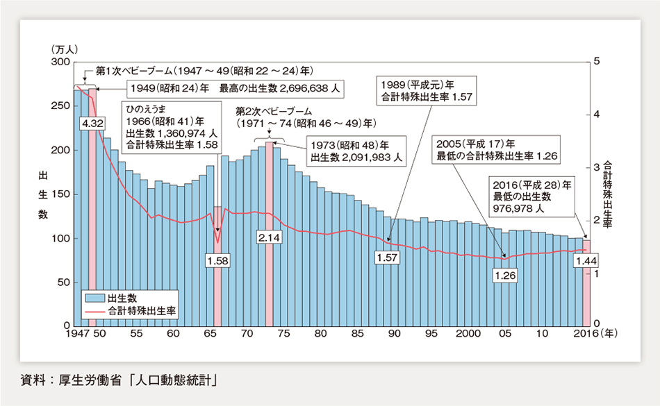
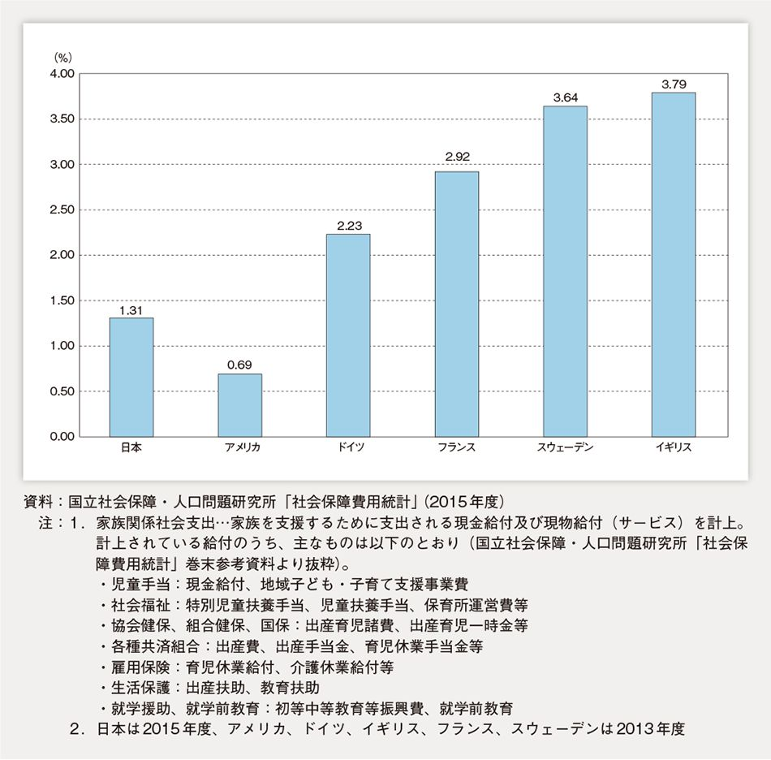
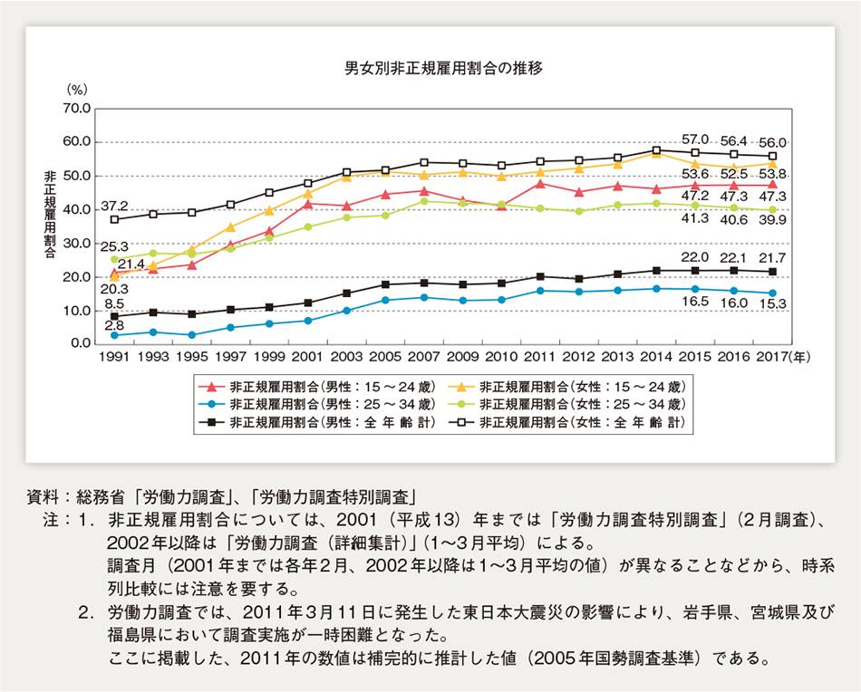
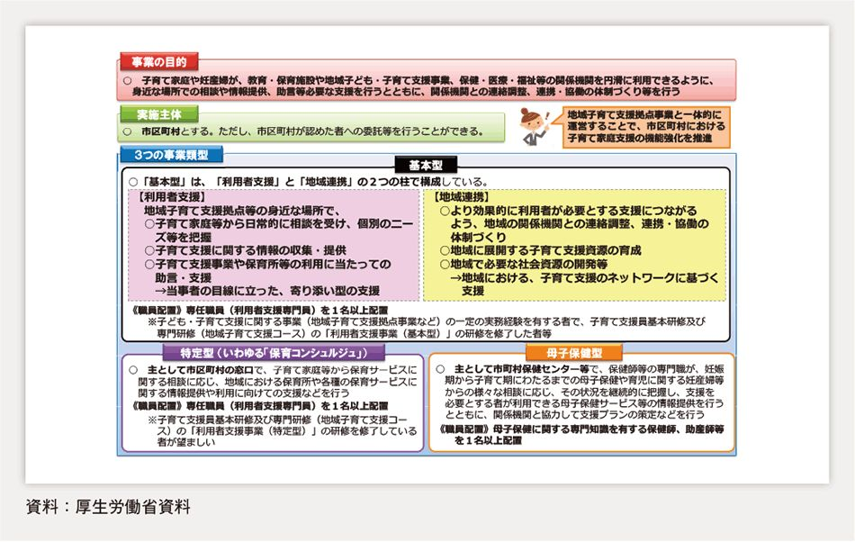
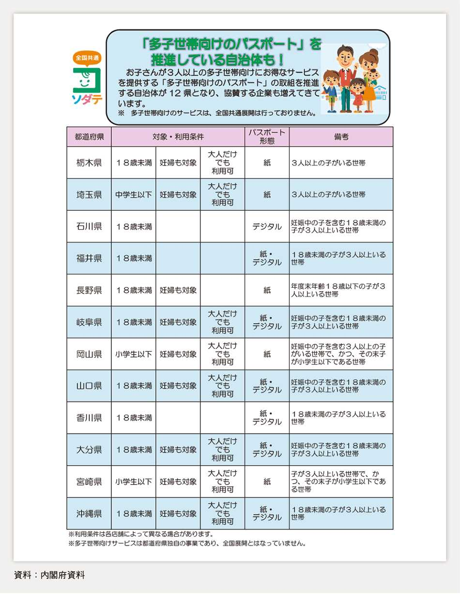

| 平成30年版 少子化社会対策白書 | |
| 内閣府 | |
| 日経印刷株式会社 (2018) | |
少子化社会対策白書の刊行に当たって
少子化社会対策白書は、平成15年に施行された「少子化社会対策基本法」に基づき、毎年国会に提出している年次報告です。今回は、最初に作成された平成16年から数え、15回目となります。
年間出生数が100万人を切り、年間で人口が約40万人減少するなど、我が国の少子化は社会経済の根幹を揺るがしかねない、まさに国難とも呼ぶべき状況にあります。こうした状況を克服するためには、若者の経済的な不安定さや長時間労働、仕事と子育ての両立の難しさ、子育ての孤立感・負担感、教育費負担の重さなど、個々人の結婚や子育ての希望を阻む要因を一つ一つ取り除いていかなければなりません。
政府では、個々人の希望がかない、安全かつ安心して子供を生み育てられる環境の整備に向けて、子育て支援や働き方改革等の取組を強力に進めているところです。
また、私が主宰した「少子化克服戦略会議」においても、子育ての時間的・空間的・経済的制約を解消するとともに、子育てにあらゆる資源を活かし、負担感を軽減するという新しい視点で、様々な取組について提言がありました。この提言を踏まえ、できることから速やかに実行してまいります。
今回の白書では、少子化をめぐる現状として、出生数や出生率の推移を始め、結婚・出産・子育てをめぐる最新のデータを解説するとともに、少子化対策の実施状況について紹介しています。
また、特集においては、昨年12月に閣議決定された「新しい経済政策パッケージ」のうち、幼児教育の無償化や待機児童の解消などの「人づくり革命」について紹介するとともに、職場や地域、外出・移動の各場面における様々な主体による子育てしやすい社会の実現に向けた意欲的な取組事例を取り上げています。
少子化対策は、行政に加え、地域・企業など社会全体で取り組むべき課題です。この白書が多くの方に利用され、国民の皆様に少子化対策に関する理解と関心を深めていただくとともに、結婚や子育ての希望がかなえられる社会の実現に向けた取組の一助となることを願っております。
平成30年7月
第1部 少子化対策の現状（第1章 1）
第1章 少子化をめぐる現状（1）
1 総人口と人口構造の推移
2053年には1億人を割る見込みの総人口
我が国の総人口は、2017（平成29）年で1億2,671万人となっている。年少人口（0～14歳）、生産年齢人口（15～64歳）、高齢者人口（65歳以上）は、それぞれ1,559万人、7,596万人、3,515万人となっており、総人口に占める割合は、それぞれ12.3％、60.0％、27.7％となっている。
国立社会保障・人口問題研究所の「日本の将来推計人口（平成29年推計）」は、我が国の将来の人口規模や年齢構成等の人口構造の推移を推計している。このうち、中位推計（出生中位・死亡中位）では、合計特殊出生率は、実績値が1.45であった2015（平成27）年から、2024（平成36）年の1.42、2035（平成47）年の1.43を経て、2065（平成77）年には1.44へ推移すると仮定している。最終年次の合計特殊出生率の仮定を前回推計（平成24年1月推計）と比較すると、近年の30～40歳代における出生率上昇等を受けて、前回の1.35（2060（平成72）年）から1.44（2065年）に上昇している。
この中位推計の結果に基づけば、総人口は、2053（平成65）年には1億人を割って9,924万人となり、2065年には8,808万人になる。前回推計結果と比較すると、2065年時点で前回の8,135万人が今回では8,808万人へと673万人増加している。人口が1億人を下回る年次は前回の2048（平成60）年が2053年と5年遅くなっており、人口減少の速度は緩和されたものとなっている。
年齢3区分別の人口規模及び構成の推移をみると、年少人口は、2056（平成68）年には1,000万人を割り、2065年には898万人の規模になるものと推計され、総人口に占める割合は、2065年には10.2％となる。
生産年齢人口は、2056年には5,000万人を割り、2065年には4,529万人となる。総人口に占める割合は、2065年には51.4％となる。
高齢者人口は、2042（平成54）年に3,935万人でピークを迎え、その後減少し、2065年には3,381万人となる。総人口に占める割合は、2065年には38.4％となる。
前回推計結果と比較すると、推計の前提となる合計特殊出生率が上昇した結果、2065年時点で、前回から生産年齢人口は約1割、年少人口は約2割増加したものとなっている。（第1-1-1図）
世界と比較して年少人口割合が小さい日本
世界全域の年少人口割合（国連推計）は、26.1％であるが、我が国の総人口に占める年少人口の割合は、12.3％と世界的にみても小さくなっている。日本以外では、ドイツ13.1％、イタリア13.7％、韓国13.9％と、相対的に合計特殊出生率が低い国は年少人口割合が小さくなっている。（第1-1-2表）
第1部 少子化対策の現状（第1章 2）
第1章 少子化をめぐる現状（2）
2 出生数、出生率の推移
100万人を割る出生数
我が国の年間の出生数は、第1次ベビーブーム期には約270万人、第2次ベビーブーム期には約210万人であったが、1975（昭和50）年に200万人を割り込み、それ以降、毎年減少し続けた。1984（昭和59）年には150万人を割り込み、1991（平成3）年以降は増加と減少を繰り返しながら、緩やかな減少傾向となっている。
2016（平成28）年の出生数は、97万6,978人となり、1899（明治32）年の統計開始以来、初めて100万人を割った 1 。
合計特殊出生率 2 をみると、第1次ベビーブーム期には4.3を超えていたが、1950（昭和25）年以降急激に低下した。その後、第2次ベビーブーム期を含め、ほぼ2.1台で推移していたが、1975年に2.0を下回ってから再び低下傾向となった。1989（昭和64、平成元）年にはそれまで最低であった1966（昭和41）年（丙午：ひのえうま）の1.58を下回る1.57を記録し、さらに、2005（平成17）年には過去最低である1.26まで落ち込んだ。近年は微増傾向が続いているが、2016年は、1.44と前年より0.01ポイント下回った 3 。（第1-1-3図）

諸外国の合計特殊出生率の推移
諸外国（フランス、スウェーデン、アメリカ、イギリス、ドイツ、イタリア）の合計特殊出生率の推移をみると、1960年代までは、全ての国で2.0以上の水準であった。その後、1970（昭和45）年から1980（昭和55）年頃にかけて、全体として低下傾向となったが、その背景には、子供の養育コストの増大、結婚・出産に対する価値観の変化、避妊の普及等があったと指摘されている 4 。1990（平成2）年頃からは、合計特殊出生率が回復する国もみられるようになってきている。（第1-1-4図）
特に、フランスやスウェーデンでは、出生率が1.5～1.6台まで低下した後、回復傾向となり、直近ではフランスが1.92（2016（平成28）年）、スウェーデンが1.85（2016年）となっている。これらの国の家族政策の特徴をみると、フランスでは、かつては家族手当等の経済的支援が中心であったが、1990年代以降、保育の充実へシフトし、その後さらに出産・子育てと就労に関して幅広い選択ができるような環境整備、すなわち「両立支援」を強める方向で政策が進められた。スウェーデンでは、比較的早い時期から、経済的支援と併せ、保育や育児休業制度といった「両立支援」の施策が進められてきた。また、ドイツでは、依然として経済的支援が中心となっているが、近年、「両立支援」へと転換を図り、育児休業制度や保育の充実等を相次いで打ち出している 5 。
また、家族関係社会支出の対GDP比を見てみると、我が国は、1.31％（2015（平成27）年度）となっている。国民負担率 6 などの違いもあり、単純に比較はできないが、フランスやスウェーデンなどの欧州諸国と比べて低水準となっており、現金給付、現物給付を通じた家族政策全体の財政的な規模が小さいことが指摘されている。（第1-1-5図）

次に、アジアの国や地域について、経済成長が著しく、時系列データの利用が可能なタイ、シンガポール、韓国、香港及び台湾の合計特殊出生率の推移をみると、1970年の時点では、いずれの国も我が国の水準を上回っていたが、その後、低下傾向となり、現在では人口置換水準を下回る水準になっている 7 。合計特殊出生率は、タイが1.4（2013（平成25）年）、シンガポールが1.20（2016年）、韓国が1.17（2016年）、香港が1.21（2016年）、台湾が1.17（2016年）と我が国の1.44（2016年）を下回る水準となっている。（第1-1-6図）

1 なお、厚生労働省「平成29年（2017）人口動態統計月報年計（概数）」によれば、2017（平成29）年の出生数は、94万6,060人となっている。
2 ある期間において測定された女性の年齢別出生率を再生産年齢（通常15～49歳）にわたって合計したもの。
3 なお、厚生労働省「平成29年（2017）人口動態統計月報年計（概数）」によれば、2017年の合計特殊出生率は、1.43となっている。
4 van de Kaa（1987）"Europe's Second Demographic Transition", Population Bulletin, Vol.42, No.1、阿藤誠（1997）「日本の超少産化現象と価値観変動仮説」人口問題研究53（1）を参照。
5 内閣府経済社会総合研究所編（2005年）「フランスとドイツの家庭生活調査」、（2004年）「スウェーデン家庭生活調査」を参照。
6 財務省「日本の財政関係資料」（平成30年3月）によれば、国民負担率（％）は、日本（42.6）、アメリカ（33.3）、ドイツ（53.2）、フランス（67.1）、スウェーデン（56.9）、イギリス（46.5）となっている（日本は2015年度、それ以外は2015年）。
7 アジア圏では、婚外出産が少ないことにも一部起因しており、未婚化や晩婚化が出生率変化の大きな決定要素となっていると指摘されている（United Nations "World Fertility Report 2013"を参照）。
トピックス：少子化及び人口問題に関する国際会議
2017（平成29）年10月19日、松山内閣府特命担当大臣（少子化対策）は、「少子化及び人口問題に関する国際会議」への出席及び日韓少子化担当大臣会談のため、大韓民国・ソウルを訪問した。
同会議は、深刻な少子化に直面する韓国の保健福祉部が主催し、KIHASA（韓国保健社会研究院）、OECD（経済協力開発機構）、UNFPA（国連人口基金）の共催により開催されたものであり、開会式において、松山大臣は、日本の少子高齢化が危機的な状況にあること、また、これを克服するため、安倍内閣では、待機児童の解消や幼児教育・保育の無償化、高等教育の無償化などに取り組んでいることについて、国際社会に向けてスピーチを行った。
松山大臣は、地域の実情に応じて結婚支援や子育て支援などに取り組む地方公共団体を支援する日本の取組をアピールし、また、急激に進む少子高齢化への対応は、日本固有の問題ではなく全世界的な課題であることから、あらゆる政策手段を尽くし、日本の取組を世界経済の未来に挑戦する新たなモデルとして、世界に発信していく決意を表明した。
同会議では、日韓の局長級をはじめ、OECDやUNFPA、そして日韓の有識者によるプレゼンテーションも行われた。韓国保健福祉部によるプレゼンテーションでは、韓国の出生率が、2000（平成12）年以降、1.1前後と低水準（OECD加盟国の中で最下位）で推移していることや、2006（平成18）年に「第1次少子・高齢化に関する基本プラン」を採択後、5年おきに同プランの見直しを行っており、最新のプランである第3次プラン（2016（平成28）年～2020（平成32）年）では、特に「雇用」、「住居」そして「教育」といった各分野の施策に力を入れていることが紹介された。また、韓国においても、長時間労働や男性の育児休業の取得率の低さが少子化の大きな要因となっているとの指摘があり、少子化克服に向けて、日本と共通の課題が共有された。
さらに、少子高齢化について共通の課題を持つ韓国との間で実施した日韓少子化担当大臣会談では、少子高齢化による人口減少に関して、共同して課題の解決に当たることの重要性について合意し、今後、両国間で、人口問題を克服するための共同研究や、東アジアでの人口問題を議論するプラットフォームの立ち上げに向け検討を進めることとした。
30歳代の出生率が上昇
女性の年齢別出生率を見ると、そのピークの年齢と出生率は、1975（昭和50）年は25歳で0.22、1990（平成2）年は28歳で0.16、2005（平成17）年は30歳で0.10と推移し、ピークの年齢は高くなり、当該年齢の出生率は低下したものの、2016（平成28）年は30歳で0.11とピークの年齢の出生率はやや上昇している。
合計特殊出生率の1970（昭和45）年以降の低下については、例えば25歳時点の出生率を比べてみると、1975年は0.22だったが、2005年は0.06に大幅に下がるなど、20歳代における出生率が低下したことが一因であると考えられる。また、近年の合計特殊出生率の微増傾向については、例えば35歳時点の出生率を比べてみると、2005年は0.06だったが、2016年は0.08となるなど、30～40歳代の年齢別出生率の上昇を反映したものと考えられる。（第1-1-7図）
第1部 少子化対策の現状（第1章 3）
第1章 少子化をめぐる現状（3）
3 婚姻・出産の状況
低下傾向が続く婚姻件数、婚姻率
婚姻件数は、第1次ベビーブーム世代が25歳前後の年齢を迎えた1970（昭和45）年から1974（昭和49）年にかけて年間100万組を超え、婚姻率（人口千人当たりの婚姻件数）もおおむね10.0以上であった。その後は、婚姻件数、婚姻率ともに低下傾向となり、1978（昭和53）年以降2010（平成22）年までは、おおよそ年間70万組台で増減を繰り返しながら推移してきたが、2011（平成23）年以降、年間60万組台で推移しており、2016（平成28）年は、62万531組（対前年比14,625組減）と、過去最低となった。婚姻率も5.0と過去最低となり、1970年代前半と比べると半分の水準となっている。（第1-1-8図）
未婚率を年齢（5歳階級）別にみると、2015（平成27）年は、例えば、30～34歳では、男性はおよそ2人に1人（47.1％）、女性はおよそ3人に1人（34.6％）が未婚であり、35～39歳では、男性はおよそ3人に1人（35.0％）、女性はおよそ4人に1人（23.9％）が未婚となっている。長期的にみると未婚率は上昇傾向が続いているが、男性の30～34歳、35～39歳、女性の30～34歳においては、前回調査（2010（平成22）年国勢調査）からおおむね横ばいとなっている。（第1-1-9図）
未婚化の進行
さらに、50歳時の未婚割合 1 をみると、1970（昭和45）年は、男性1.7％、女性3.3％であった。その後、男性は一貫して上昇する一方、女性は1990（平成2）年まで横ばいであったが、以降上昇を続け、前回調査（2010（平成22）年国勢調査）では男性20.1％、女性10.6％、2015（平成27）年は男性23.4％、女性14.1％と、それぞれ上昇している。2015年の国勢調査の結果に基づいて出された推計は、これまでの未婚化、晩婚化の流れが変わらなければ、今後も50歳時の未婚割合の上昇が続くことを予測している 2 、 3 。（第1-1-10図）
1 45～49歳の未婚率と50～54歳の未婚率の平均。50歳時の未婚割合は生涯未婚率とも呼ばれる。
2 出生率の低下要因は、我が国では婚外出生が依然少ないため、結婚行動の変化（未婚化）と夫婦の出産行動の変化（有配偶出生率の低下）にほぼ分解され、前者の引き下げ効果は、後者の効果に比べてはるかに大きいとの指摘がある（岩澤美帆・金子隆一・佐藤龍三郎（2016）「ポスト人口転換期の出生動向」、佐藤龍三郎・金子隆一編著「ポスト人口転換期の日本」原書房、人口学ライブラリー17を参照）。
3 具体的には、1950年代後半から1970年代前半にかけての合計特殊出生率に相当する数値2.01から2012（平成24）年の1.38までの変化量は、約90％が初婚行動の変化、約10％が夫婦の出生行動の変化で説明できるとされている（2012年の数値の考え方を含め、岩澤美帆（2015）「少子化をもたらした未婚化および夫婦の変化」、高橋重郷・大淵寛編著「人口減少と少子化対策」原書房、人口学ライブラリー16、岩澤美帆・金子隆一・佐藤龍三郎（2016）「ポスト人口転換期の出生動向」、佐藤隆三郎・金子隆一編著「ポスト人口転換期の日本」原書房、人口学ライブラリー17を参照）。
晩婚化、晩産化の進行は鈍化
平均初婚年齢は、長期的にみると夫、妻ともに上昇を続け、晩婚化が進行している。2016（平成28）年で、夫が31.1歳、妻が29.4歳となっており、1985（昭和60）年と比較すると、夫は2.9歳、妻は3.9歳上昇している。前年（2015（平成27）年）との比較では、男女とも横ばいとなっている。
また、出生時の母親の平均年齢を出生順位別にみると、2016年においては、第1子が30.7歳、第2子が32.6歳、第3子が33.6歳と上昇傾向が続いており、1985年と比較すると第1子では4.0歳、第2子では3.5歳、第3子では2.2歳それぞれ上昇している。
さらに、第1子と第2子、第2子と第3子における母親の平均出生時年齢の差を比較すると、1985年にそれぞれ2.4歳、2.3歳であったものが、2016年にはそれぞれ1.9歳、1歳と出生の間隔が短くなっている。（第1-1-11図）
年齢（5歳階級）別初婚率について、1990（平成2）年から10年ごと及び直近の2016年の推移をみると、夫は25～29歳で1990年の68.01‰が2016年の48.02‰となるなど下降幅が大きく、35～39歳で1990年の8.25‰が2016年の13.38‰となるなど35歳以上で上昇しているが、その上昇幅は小さい。他方、妻は20～24歳で1990年の54.40‰が2016年の25.55‰となるなど下降幅が大きいが、30～34歳で1990年の12.73‰が2016年の28.07‰となるなど30歳以上で上昇しており、夫に比べてその上昇幅が大きい。（第1-1-12図）
完結出生児数は過去最低の1.94
夫婦の完結出生児数（結婚持続期間が15～19年の初婚どうしの夫婦の平均出生子供数）を見ると、1970年代から2002（平成14）年まで2.2人前後で安定的に推移していたが、2005（平成17）年から減少傾向となり、2015（平成27）年には1.94と、過去最低となっている。（第1-1-13図）
第1部 少子化対策の現状（第1章 4）
第1章 少子化をめぐる現状（4）
4 結婚をめぐる意識等
結婚に対する意識
「いずれ結婚するつもり」と答えた未婚者（18～34歳）の割合は、2015（平成27）年調査で男性85.7％、女性89.3％となっており、ここ30年間を見ても若干の低下はあるものの、男女ともに依然として高い水準を維持している。（第1-1-14図）
また、未婚者（25～34歳）に独身でいる理由を尋ねると、男女ともに「適当な相手にめぐり会わない」（男性：45.3％、女性：51.2％）が最も多く、次に多いのが、男性では「まだ必要性を感じない」（29.5％）や「結婚資金が足りない」（29.1％）であり、女性では「自由さや気楽さを失いたくない」（31.2％）や「まだ必要性を感じない」（23.9％）となっている。さらに、過去の調査と比較すると、男女ともに「異性とうまくつきあえない」という理由が増加傾向にあり、女性では「仕事（学業）にうちこみたい」、「結婚資金が足りない」という理由も増加傾向にある。（第1-1-15図）
就労形態などによる家族形成状況の違い
若年者（15～34歳）の完全失業率は全年齢計より高い水準になっているものの、近年、男女ともに低下している。最も高かった時期と2017（平成29）年を比較すると、15～24歳の男性では、2003（平成15）年の11.6％から4.7％へと低下しており、25～34歳の男性では2010（平成22）年の6.6％から3.8％へと低下している。15～24歳の女性では2002（平成14）年の8.7％から4.5％へと低下しており、25～34歳の女性では2002年の7.3％から3.5％へと低下している。（第1-1-16図）
また、非正規雇用割合についてみると、男女ともに1990年代から2000年代にかけて上昇傾向にあり、2010年代に入ると概ね横ばいで推移している。2017年における15～24歳の男性では、47.3％と2016（平成28）年と同率となっており、全年齢計（21.7％）よりも高い水準となっている。25～34歳の男性、25～34歳の女性では2016年よりやや低下しており、男女ともに全年齢計よりも低い水準となっている。（第1-1-17図）

さらに、2012（平成24）年の所得分布を1997（平成9）年と比べると、20代では、250万円未満の雇用者の割合が増加しており、30代では、400万円未満の雇用者の割合が増加している。このことから、若い世代の所得分布は、低所得層にシフトしていることがわかる。（第1-1-18図）
男性の就労形態別有配偶率（2012年時点）をみると、正社員では25～29歳で31.7％、30～34歳で57.8％となっているのに対し、非典型雇用では25～29歳で13.0％、30～34歳で23.3％となっており、正社員の半分以下となっている。また、非典型雇用のうちパート・アルバイトでは25～29歳で7.4％、30～34歳で13.6％であり、正社員の4分の1以下となっているなど、就労形態の違いにより配偶者のいる割合が大きく異なっていることがうかがえる。（第1-1-19図）
さらに、男性の年収別有配偶率（2012年時点）をみると、いずれの年齢層でも一定水準までは年収が高い人ほど配偶者のいる割合が高い傾向にある。（第1-1-20図）
第1部 少子化対策の現状（第1章 5）
第1章 少子化をめぐる現状（5）
5 出産・子育てをめぐる意識等
出産に対する意識
夫婦にたずねた理想的な子供の数（平均理想子供数）は1987（昭和62）年から低下傾向にあり、2015（平成27）年は2.32人と、過去最低を更新している。また、夫婦が実際に持つつもりの子供の数（平均予定子供数）も、過去最低である2.01人となっている。（第1-1-21図）
予定子供数が理想子供数を下回る夫婦の理想の子供数を持たない理由としては、「子育てや教育にお金がかかりすぎるから」（56.3％）が2010（平成22）年の前回調査（60.4％）からは低下したものの最も多く、30～34歳では8割を超えている。次に多いのが、「高年齢で生むのはいやだから」（39.8％）や「欲しいけれどもできないから」（23.5％）であり、それぞれ前回調査から上昇している。これらを年代別にみると、年代が高くなるほど、その割合が高くなる傾向がみられ、40～49歳ではそれぞれ、約5割、約3割となっている。（第1-1-22図）
女性の出産前後の就業継続割合は上昇
女性の出産前後の就業をめぐる状況をみると、第1子を出産した既婚女性で、第1子の出産前に就業していた女性のうち、出産後に就業を継続した女性の割合は、これまで4割前後で推移してきたが、2010（平成22）年から2014（平成26）年に第1子を出産した既婚女性では、53.1％へと大幅に上昇した。また、第1子を出産した既婚女性で、第1子の出産前に就業していた女性のうち、育児休業を利用して就業を継続した女性の割合も上昇してきており、2010年から2014年に第1子を出産した既婚女性では、39.2％となっている。（第1-1-23図）
「正規の職員」と「パート・派遣」に分けて就業継続の割合をみると、「正規の職員」は69.1％であるのに対し、「パート・派遣」は25.2％となっている（国立社会保障・人口問題研究所「第15回出生動向基本調査（夫婦調査）」（2015（平成27）年））。
また、末子の妊娠・出産を機に退職した女性にその理由をたずねたところ、正社員では、「家事・育児に専念するため、自発的にやめた」（30.3％）、「仕事を続けたかったが、仕事と育児の両立の難しさでやめた」（22.5％）が多く挙げられている。非正社員では、「家事・育児に専念するため、自発的にやめた」（46.3％）が特に多い。
「仕事を続けたかったが、仕事と育児の両立の難しさでやめた」と回答した人にその理由をたずねると、正社員では、「勤務時間があいそうもなかった」（47.5％）が最も多く、「自分の体力がもたなそうだった」（40.0％）、「育児休業を取れそうもなかった」（35.0％）が続く。
非正社員では、「育児休業を取れそうもなかった」（41.7％）、「つわりや産後の不調など妊娠・出産にともなう体調不良のため」（35.4％）、「自分の体力がもたなそうだった」（33.3％）、「勤務時間があいそうもなかった」（33.3％）が多い。（第1-1-24図）
子育て世代の男性の長時間労働
週60時間以上の長時間労働をしている男性は、どの年齢層においても、2005（平成17）年以降概ね減少傾向にある。しかしながら、子育て期にある30代、40代の男性については、2017（平成29）年で、それぞれ15.0％、15.4％が週60時間以上就業しており、ほかの年齢層に比べ高い水準となっている。（第1-1-25図）
また、就業時間が週49時間以上の男性就業者の割合をみると、29.5％となっており、他国と比較して高い割合となっている。（第1-1-26図）
男性の家事・育児時間
夫の休日の家事・育児時間と第2子以降の出生状況をみると、両者には正の関係性がみられる。（第1-1-27図）男性が子育てや家事に費やす時間をみると、2016（平成28）年における我が国の6歳未満の子供を持つ夫の家事・育児関連時間は1日当たり83分となっており、2011（平成23）年調査に比べて16分増えているものの、先進国中最低の水準にとどまっている。（第1-1-28図）
第1部 少子化対策の現状（第1章 6）
第1章 少子化をめぐる現状（6）
6 地域比較
都道府県別合計特殊出生率の動向
2016（平成28）年の全国の合計特殊出生率は1.44であるが、47都道府県別の状況を見ると、これを上回るのは36県、下回るのは11都道府県であった。この中で合計特殊出生率が最も高いのは沖縄県（1.95）であり、次は島根県（1.75）となっている。最も低いのは、東京都（1.24）であり、次いで北海道（1.29）となっている。（第1-1-29図）
都道府県別の年齢別出生率
都道府県別の年齢別出生率をみると、全国の中でも合計特殊出生率の高い沖縄県、島根県は、いずれも20～34歳の出生率が全国水準よりも高くなっている。
一方、全国の中でも合計特殊出世率が低い東京都、北海道はそれぞれ異なる動きをしている。東京都では15～34歳の出生率が全国水準より低いのに対し、35～49歳では高くなっている。北海道では15～29歳の出生率が全国水準並となっているのに対し、30歳以降の年齢では低くなっている。（第1-1-30図）
都道府県別50歳時の未婚割合
2015（平成27）年の全国の50歳時の未婚割合を見ると、男性で23.4％、女性で14.1％となっているが、47都道府県別の状況を見ると、これを上回るのは男性で17都道県、女性で13都道府県となっている。この中で50歳時の未婚割合が最も高いのは、男性で沖縄県の26.2％、女性で東京都の19.2％となっている。（第1-1-31図）
第1部 少子化対策の現状（第2章 第1節）
第2章 少子化対策の取組（第1節）
第1節 これまでの少子化対策
〈1994（平成6）年12月〉
エンゼルプラン（1995（平成7）年度～1999（平成11）年度）
1990（平成2）年の「1.57ショック」 1 を契機に、政府は、出生率の低下と子供の数が減少傾向にあることを「問題」として認識し、仕事と子育ての両立支援など子供を生み育てやすい環境づくりに向けての対策の検討を始めた。
1994年12月、今後10年間に取り組むべき基本的方向と重点施策を定めた「今後の子育て支援のための施策の基本的方向について」（エンゼルプラン）（文部、厚生、労働、建設の4大臣合意）が策定された。また、エンゼルプランを実施するため、保育の量的拡大や低年齢児（0～2歳児）保育、延長保育等の多様な保育の充実、地域子育て支援センターの整備等を図るための「緊急保育対策等5か年事業」（大蔵、厚生、自治の3大臣合意）が策定され、1999年度を目標年次として、整備が進められることとなった。
1 1990年の1.57ショックとは、前年（1989（平成元）年）の合計特殊出生率が1.57と、「ひのえうま」という特殊要因により過去最低であった1966（昭和41）年の合計特殊出生率1.58を下回ったことが判明したときの衝撃を指している。
〈1999（平成11）年12月〉
新エンゼルプラン（2000（平成12）年度～2004（平成16）年度）
1999年12月、「少子化対策推進基本方針」（少子化対策推進関係閣僚会議決定）と、この方針に基づく重点施策の具体的実施計画として「重点的に推進すべき少子化対策の具体的実施計画について」（新エンゼルプラン）（大蔵、文部、厚生、労働、建設、自治の6大臣合意）が策定された。新エンゼルプランは、従来のエンゼルプランと緊急保育対策等5か年事業を見直したもので、2000年度から2004年度までの5か年の計画であった。最終年度に達成すべき目標値の項目には、これまでの保育関係だけでなく、雇用、母子保健、相談、教育等の事業も加えた幅広い内容となった。
〈2003（平成15）年7月〉
次世代育成支援対策推進法（2003年7月～）
家庭や地域の子育て力の低下に対応して、次世代を担う子供を育成する家庭を社会全体で支援する観点から、2003年7月、地方公共団体及び企業における10年間の集中的・計画的な取組を促進するため、「次世代育成支援対策推進法」（平成15年法律第120号）が制定された。同法は、地方公共団体及び事業主が、次世代育成支援のための取組を促進するために、それぞれ行動計画を策定し、実施していくことをねらいとしたものである 2 。この法律は、2014（平成26）年の法改正により、有効期限が更に10年間延長されるとともに、新たな認定制度の導入など内容の充実が図られた。
2 具体的には、地方公共団体及び事業主は、国が策定する行動計画策定指針に基づき、次世代育成支援対策の実施により達成しようとする目標、実施しようとする対策の内容及びその実施時期等を定めた行動計画を策定することとされている。
〈2003（平成15）年9月〉
少子化社会対策基本法（2003年9月～）
少子化社会対策大綱（2004（平成16）年6月～2010（平成22）年1月）
2003年7月、議員立法により、少子化社会において講じられる施策の基本理念を明らかにし、少子化に的確に対処するための施策を総合的に推進するために「少子化社会対策基本法」（平成15年法律第133号）が制定され、同年9月から施行された。そして、同法に基づき、内閣府に、内閣総理大臣を会長とし、全閣僚によって構成される少子化社会対策会議が設置された。また、同法は、少子化に対処するための施策の指針としての大綱の策定を政府に義務付けている。
2004年6月、少子化社会対策基本法に基づき、「少子化社会対策大綱」（以下「大綱」という。）が少子化社会対策会議を経て、閣議決定された。
この大綱では、子供が健康に育つ社会、子供を生み、育てることに喜びを感じることのできる社会への転換を喫緊の課題とし、少子化の流れを変えるための施策に集中的に取り組むこととしていた。そして、子育て家庭が安心と喜びをもって子育てに当たることができるように社会全体で応援するとの基本的考えに立ち、少子化の流れを変えるための施策を、国を挙げて取り組むべき極めて重要なものと位置付け、「3つの視点」と「4つの重点課題」、「28の具体的行動」を提示した。
〈2004（平成16）年12月〉
子ども・子育て応援プラン（2005（平成17）年度～）
2004年12月、大綱に盛り込まれた施策の効果的な推進を図るため、「少子化社会対策大綱に基づく具体的実施計画について」（子ども・子育て応援プラン）を少子化社会対策会議において決定し、国が地方公共団体や企業等とともに計画的に取り組む必要がある事項について、2005年度から2009（平成21）年度までの5年間に講ずる具体的な施策内容と目標を掲げた。
〈2006（平成18）年6月〉
「新しい少子化対策について」（2006年6月～2007（平成19）年度）
2005（平成17）年、我が国は1899（明治32）年に人口動態の統計をとり始めて以来、初めて出生数が死亡数を下回り、出生数は106万人、合計特殊出生率は1.26と、いずれも過去最低を記録した。
こうした予想以上の少子化の進行に対処し、少子化対策の抜本的な拡充、強化、転換を図るため、2006年6月、少子化社会対策会議において「新しい少子化対策について」が決定された。
「新しい少子化対策について」では、「家族の日」・「家族の週間」の制定などによる家族・地域のきずなの再生や社会全体の意識改革を図るための国民運動の推進とともに、親が働いているかいないかにかかわらず、全ての子育て家庭を支援するという視点を踏まえつつ、子供の成長に応じて子育て支援のニーズが変化することに着目して、妊娠・出産から高校・大学生期に至るまでの年齢進行ごとの子育て支援策を掲げた。
〈2007（平成19）年12月〉
「子どもと家族を応援する日本」重点戦略（2007年12月～）
「日本の将来推計人口（2006（平成18）年12月推計）」において示された少子高齢化についての一層厳しい見通しや社会保障審議会の「人口構造の変化に関する特別部会」の議論の整理等を踏まえ、2007年12月、少子化社会対策会議において「子どもと家族を応援する日本」重点戦略（以下「重点戦略」という。）が取りまとめられた。
重点戦略では、就労と出産・子育ての二者択一構造を解決するためには、「働き方の見直しによる仕事と生活の調和（ワーク・ライフ・バランス）の実現」とともに、その社会的基盤となる「包括的な次世代育成支援の枠組みの構築」（「親の就労と子どもの育成の両立」と「家庭における子育て」を包括的に支援する仕組みの構築）に同時並行的に取り組んでいくことが必要不可欠であるとされた。
働き方の見直しによる仕事と生活の調和の実現については、2007年12月、「仕事と生活の調和（ワーク・ライフ・バランス）憲章」及び「仕事と生活の調和推進のための行動指針」が政労使の代表等から構成される仕事と生活の調和推進官民トップ会議において決定された。
また、重点戦略を踏まえ、2008（平成20）年2月に、政府は、希望する全ての人が安心して子供を預けて働くことができる社会を実現し、子供の健やかな育成に社会全体で取り組むため、保育所等の待機児童解消を始めとする保育施策を質・量ともに充実・強化し、推進するための「新待機児童ゼロ作戦」を発表した。
〈2010（平成22）年1月〉
少子化社会対策大綱（子ども・子育てビジョン）の策定（2010年1月～2015（平成27）年3月）
「新しい少子化社会対策大綱の案の作成方針について」（2008（平成20）年12月、少子化社会対策会議決定）を受け、2009（平成21）年1月、内閣府に「ゼロから考える少子化対策プロジェクトチーム」を立ち上げ、少子化対策担当大臣の下、全10回の会合、地方での懇談、大学生との公開討論会を開催し、同年6月には提言（"みんなの"少子化対策）をまとめた。
その後、2009年10月に発足した内閣府の少子化対策担当の政務三役（大臣、副大臣、大臣政務官）で構成する「子ども・子育てビジョン（仮称）検討ワーキングチーム」において検討が行われ、有識者、事業者、子育て支援に携わる地方公共団体の担当者等からの意見聴取や国民からの意見募集などを行い、2010年1月、少子化社会対策基本法に基づく新たな大綱を閣議決定した。この大綱では、子ども・子育て支援施策を行っていく際の3つの大切な姿勢として、「1 生命（いのち）と育ちを大切にする」、「2 困っている声に応える」、「3 生活（くらし）を支える」を示すとともに、これらを踏まえ、「目指すべき社会への政策4本柱」と「12の主要施策」に従って、具体的な取組を進めることとされた。
〈2010（平成22）年1月〉
子ども・子育て支援新制度本格施行までの経過（2010年1月～）
2010年1月の少子化社会対策大綱（「子ども・子育てビジョン」）の閣議決定に合わせて、少子化社会対策会議の下に、「子ども・子育て新システム検討会議」が発足し、新たな子育て支援の制度について検討を進め、2012（平成24）年3月には、「子ども・子育て新システムに関する基本制度」を少子化社会対策会議において決定した。これに基づき、政府は、社会保障・税一体改革関連法案として、子ども・子育て支援法等の3法案を2012年通常国会（第180回国会）に提出した。
社会保障・税一体改革においては、社会保障に要する費用の主な財源となる消費税（国分）の充当先が、従来の高齢者向けの3経費（基礎年金、老人医療、介護）から、少子化対策を含む社会保障4経費（年金、医療、介護、少子化対策）に拡大されることとなった。
国会における修正を経て成立した、子ども・子育て支援法等に基づき、政府において子ども・子育て支援新制度の本格施行に向けた準備を進め、2014（平成26）年度には、消費税引上げ（5％→8％）の財源を活用し、待機児童が多い市町村等において「保育緊急確保事業」が行われた。
〈2013（平成25）年4月〉
待機児童の解消に向けた取組（2013年4月～）
都市部を中心に深刻な問題となっている待機児童の解消の取組を加速化させるため、2013年4月、2013年度から2017（平成29）年度末までに約40万人分の保育の受け皿を確保することを目標とした「待機児童解消加速化プラン」を新たに策定し、2015（平成27）年度からの子ども・子育て支援新制度の施行を待たずに、待機児童解消に意欲的に取り組む地方公共団体に対してはその取組を支援してきたところであり、その結果、待機児童解消に向けた「緊急集中取組期間」である2013年度及び2014（平成26）年度において、約22万人分（当初目標値20万人）の保育の受け皿拡大を達成した。
今後、女性の就業率上昇が更に進むことを念頭に、2017年度までの整備量を上積みし、40万人から50万人とすることとし、待機児童の解消を目指すこととした。
〈2013（平成25）年6月〉
少子化危機突破のための緊急対策（2013年6月～）
2013年3月から内閣府特命担当大臣（少子化対策）の下で、「少子化危機突破タスクフォース」が発足し、同年5月28日には、「『少子化危機突破』のための提案」が取りまとめられた。この提案をもとに、同年6月には、少子化社会対策会議において「少子化危機突破のための緊急対策」（以下「緊急対策」という。）を決定した。緊急対策では、これまで少子化対策として取り組んできた「子育て支援」及び「働き方改革」をより一層強化するとともに、「結婚・妊娠・出産支援」を新たな対策の柱として打ち出すことにより、これらを「3本の矢」として、結婚・妊娠・出産・育児の「切れ目ない支援」の総合的な政策の充実・強化を目指すこととされた。
また、緊急対策の内容は「経済財政運営と改革の基本方針～脱デフレ・経済再生～」（2013年6月14日閣議決定）及び「日本再興戦略-JAPAN is BACK-」（2013年6月14日閣議決定）にも盛り込まれ、政府を挙げて少子化対策に取り組むこととされた。
さらに、緊急対策を着実に実施するため、2013年8月から内閣府特命担当大臣（少子化対策）の下で、「少子化危機突破タスクフォース（第2期）」（以下「タスクフォース（第2期）」という。）が発足した。緊急対策やタスクフォース（第2期）政策推進チームの「少子化危機突破のための緊急提言」（2013年11月）において、地域の実情に応じた結婚・妊娠・出産・育児の切れ目ない支援の重要性が盛り込まれたこと、全国知事会からの強い要望も踏まえ、「好循環実現のための経済対策」（2013年12月5日閣議決定）において「地域における少子化対策の強化」が盛り込まれ、2013年度補正予算において「地域少子化対策強化交付金」が創設された（30.1億円）。
タスクフォース（第2期）が、2014（平成26）年5月に、取りまとめた提言の主な内容は、「経済財政運営と改革の基本方針2014～デフレから好循環拡大へ～」（2014年6月24日閣議決定）に盛り込まれ、政府全体の方針とされた。
〈2014（平成26）年1月〉
「選択する未来」委員会（2014年1月～11月）
人口減少・少子高齢化は、経済社会全体に大きな影響を及ぼすものであることから、2014年1月、経済財政諮問会議の下に、「選択する未来」委員会が設置され、人口、経済、地域社会の課題への一体的な取組等について精力的に議論が進められ、同年5月に中間整理が、11月に報告がまとめられた。
〈2014（平成26）年7月〉
放課後子ども総合プランの策定（2014年7月～）
保育所を利用する共働き家庭等においては、児童の小学校就学後も、その安全・安心な放課後等の居場所の確保という課題に直面している。このいわゆる「小1の壁」を打破するためには、児童が放課後等を安全・安心に過ごすことができる居場所についても整備を進めていく必要がある。加えて、次代を担う人材の育成の観点からは、共働き家庭等の児童に限らず、全ての児童が放課後等における多様な体験・活動を行うことができるようにすることが重要であり、全ての児童を対象として総合的な放課後対策を講じる必要がある。
このような観点から、文部科学省及び厚生労働省が連携して検討を進め、2014年7月に「放課後子ども総合プラン」を策定した。このプランにおいては、2019（平成31）年度末までに、放課後児童クラブについて、約30万人分を新たに整備するとともに、全ての小学校区で、放課後児童クラブ及び放課後子供教室を一体的又は連携して実施し、うち一体型の放課後児童クラブ及び放課後子供教室について、1万か所以上で実施することを目指している。
〈2014（平成26）年9月〉
地方創生の取組（2014年9月～）
人口急減・超高齢化という我が国が直面する大きな課題に対し、〈1〉「東京一極集中」の是正、〈2〉若い世代の就労・結婚・子育ての希望の実現、〈3〉地域の特性に即した地域課題の解決という3つの視点を基本として、魅力あふれる地方を創生していくことが必要である。このため、2014年9月3日に発足した第2次安倍改造内閣において、地方創生担当大臣を新設するとともに、「まち・ひと・しごと創生本部」を発足させた。さらに、同年11月には、「まち・ひと・しごと創生法」（平成26年法律第136号）が成立し、12月27日には、日本の人口・経済の中長期展望を示した「まち・ひと・しごと創生長期ビジョン」と、今後5年間の目標や施策の基本的方向、具体的施策を取りまとめた「まち・ひと・しごと創生総合戦略」を閣議決定した。これらを勘案し、地方公共団体において、地方版のまち・ひと・しごと創生総合戦略が策定されている。2017（平成29）年においては、6月に「まち・ひと・しごと創生基本方針2017」の閣議決定を行うとともに、12月に総合戦略の改訂を行った。
〈2015（平成27）年3月〉
新たな少子化社会対策大綱の策定と推進（2015年3月～）
新たな「少子化社会対策大綱」の策定に向けて、2014（平成26）年11月に、内閣府特命担当大臣（少子化対策）の下、有識者による「新たな少子化社会対策大綱策定のための検討会」を発足させ、検討を進めた。同検討会は、2015年3月に「提言」を取りまとめ、政府においては、この提言を真摯に受け止めて、大綱の検討を行い、少子化社会対策会議を経て同年3月20日に新たな「少子化社会対策大綱」を閣議決定した。
新たな少子化社会対策大綱は、従来の少子化対策の枠組みを越えて、新たに結婚の支援を加え、子育て支援策の一層の充実、若い年齢での結婚・出産の希望の実現、多子世帯への一層の配慮、男女の働き方改革、地域の実情に即した取組強化の5つの重点課題を設けている。また、重点課題に加え、長期的視点に立って、きめ細かな少子化対策を総合的に推進することとしている。（第1-2-1図）

新たな少子化社会対策大綱の策定を受け、2015年6月に、内閣府特命担当大臣（少子化対策）の下、少子化社会対策大綱が定める重点課題に関する取組を速やかに具体化し、実行に移すための道筋をつけるため、有識者による「少子化社会対策大綱の具体化に向けた結婚・子育て支援の重点的取組に関する検討会」を開催し、検討を行った。同検討会は、同年8月に、「提言」を出し、これを踏まえ、地域における結婚に対する取組の支援や、少子化対策への社会全体の機運醸成等の具体的施策が行われた。
〈2015（平成27）年4月〉
子ども・子育て支援新制度の施行（2015年4月～）
2012（平成24）年に成立した子ども・子育て関連3法 3 に基づく「子ども・子育て支援新制度」について、2015年4月1日から本格施行された。
3 「子ども・子育て支援法」（平成24年法律第65号）、「就学前の子どもに関する教育、保育等の総合的な提供の推進に関する法律の一部を改正する法律」（平成24年法律第66号）、「子ども・子育て支援法及び就学前の子どもに関する教育、保育等の総合的な提供の推進に関する法律の一部を改正する法律の施行に伴う関係法律の整備等に関する法律」（平成24年法律第67号）をいう。
〈2015（平成27）年4月〉
子ども・子育て本部の設置（2015年4月～）
2015年4月の「子ども・子育て支援新制度」の施行に合わせて、内閣府に、内閣府特命担当大臣（少子化対策）を本部長とし、少子化対策及び子ども・子育て支援の企画立案・総合調整並びに「少子化社会対策大綱」の推進や子ども・子育て支援新制度の施行を行うための新たな組織である「子ども・子育て本部」を設置した。
〈2016（平成28）年4月〉
子ども・子育て支援法の改正（2016年4月～）
2016年通常国会において、子ども・子育て支援の提供体制の充実を図るため、事業所内保育業務を目的とする施設等の設置者に対する助成及び援助を行う事業を創設するとともに、一般事業主から徴収する拠出金の率の上限を引き上げる等の「子ども・子育て支援法」（平成24年法律第65号）の改正を行い、同年4月に施行された。
〈2016（平成28）年6月〉
ニッポン一億総活躍プランの策定（2016年6月～）
2015（平成27）年10月より、「夢をつむぐ子育て支援」などの「新・三本の矢」の実現を目的とする「一億総活躍社会」の実現に向けたプランの策定等に係る審議に資するため、内閣総理大臣を議長とする「一億総活躍国民会議」が開催された。2016年5月、同会議において「ニッポン一億総活躍プラン」（案）が取りまとめられ、同年6月2日に閣議決定された。（第1-2-2図、第1-2-3図、第1-2-4図）
同プランにおいては、経済成長の隘路である少子高齢化に正面から立ち向かうこととし、「希望出生率1.8」の実現に向け、若者の雇用安定・待遇改善、多様な保育サービスの充実、働き方改革の推進、希望する教育を受けることを阻む制約の克服等の対応策を掲げ、2016年度から2025（平成37）年度の10年間のロードマップを示している。
結婚支援の充実に関しては、2016年10月より、内閣府特命担当大臣（少子化対策）の下で「結婚の希望を叶える環境整備に向けた企業・団体等の取組に関する検討会」を開催し、地方公共団体と連携した企業・団体・大学等の取組について議論が行われた。同年12月にまとめられた提言においては、環境整備に当たってまずは働き方改革が重要であるとした上で、両立支援や多様な交流の機会の提供、結婚につながる活動に対する支援などの企業等における自主的な取組例や、働き方改革・子育て支援の推進、地方公共団体と連携した自主的取組に対する支援などの国・地方公共団体の支援の在り方とともに、特定の価値観や生き方を押し付けたり推奨したりしないことなど取り組むに当たっての留意点等が示された。
〈2017（平成29）年3月〉
「働き方改革実行計画」の策定（2017年3月～）
「ニッポン一億総活躍プラン」において、一億総活躍社会に向けた最大のチャレンジと位置付けられた働き方改革については、働き方改革の実現を目的とする実行計画の策定等に係る審議に資するため、2016（平成28）年9月より、内閣総理大臣を議長とする「働き方改革実現会議」が開催された。時間外労働の上限規制の在り方など長時間労働の是正、同一労働同一賃金の実現などによる非正規雇用の処遇改善等をテーマに討議が行われ、2017年3月に「働き方改革実行計画」が取りまとめられた。
〈2017（平成29）年6月〉
「子育て安心プラン」の公表（2017年6月～）
25歳から44歳の女性就業率の上昇や、保育の利用希望の増加が見込まれることから、2017年6月に「子育て安心プラン」を公表し、2018（平成30）年度から2022（平成34）年度末までに女性就業率80％にも対応できる約32万人分の保育の受け皿を整備することとしており、2017年12月に閣議決定された「新しい経済政策パッケージ」では、これを前倒しし、2020（平成32）年度末までに整備することとしている。
〈2017（平成29）年12月〉
「新しい経済政策パッケージ」の策定（2017年12月～）
少子高齢化という最大の壁に立ち向かうため、政府は2017年12月8日、「人づくり革命」と「生産性革命」を車の両輪とする「新しい経済政策パッケージ」を閣議決定した。このうち、「人づくり革命」については、幼児教育の無償化、待機児童の解消、高等教育の無償化など、2兆円規模の政策を盛り込み、子育て世代、子供たちに大胆に政策資源を投入することで、社会保障制度を全世代型へと改革することとした。また、これらの施策の安定財源として、2019（平成31）年10月に予定されている消費税率10％への引上げによる財源を活用するとともに、子ども・子育て拠出金を0.3兆円増額することとした。
第1部 少子化対策の現状（第2章 第2節 1）
第2章 少子化対策の取組（第2節 1）
第2節 人づくり革命【特集】（1）
1 はじめに
少子高齢化という最大の壁に立ち向かうため、政府は2017（平成29）年12月8日、「人づくり革命」と「生産性革命」を車の両輪とする「新しい経済政策パッケージ」を閣議決定した。（第1-2-6図）このうち、「人づくり革命」については、無限の可能性を持つ子供たちのため、消費税の使い道を見直し、幼児教育無償化を一気に進めるとともに、真に必要な子供たちに対する高等教育の無償化などが盛り込まれた。これは、子育て世代、子供たちに大胆に政策資源を投入することで、社会保障制度を、お年寄りも若者も安心できる全世代型へと改革し、子育て、介護などの現役世代の不安を解消し、希望出生率1.8、介護離職ゼロの実現を目指すものである。
この特集では、新しい経済政策パッケージの内容を中心に、人生100年時代を見据えた人づくり革命の内容を紹介する。
第1部 少子化対策の現状（第2章 第2節 2-1）
第2章 少子化対策の取組（第2節 2-1）
第2節 人づくり革命【特集】（2-1）
2-1 人生100年時代を見据えた人づくり革命
我が国は、健康寿命が世界一の長寿社会を迎えており、今後の更なる健康寿命の延伸も期待される。10年前に我が国で生まれた子供たちの半分は、107歳まで生きるという研究もある。こうした人生100年時代に、高齢者から若者まで、全ての国民に活躍の場があり、全ての人が元気に活躍し続けられる社会、安心して暮らすことのできる社会をつくるためには、幼児教育から小・中・高等学校教育、高等教育、更には社会人の学び直しに至るまで、生涯を通じて切れ目なく、質の高い教育を用意し、いつでも有用なスキルを身につけられる学び直しの場が、安定的な財源の下で提供される必要があるほか、高齢者向けの給付が中心となっている我が国の社会保障制度を、子供・若者から高齢者まで誰もが安心できる「全世代型の社会保障」へ大きく転換していく必要がある。
その重要な鍵を握るのが「人づくり革命」、人材への投資である。これまでも政府は、誰もが生きがいを持って生活を送られるようにするために、一億総活躍社会の実現や働き方改革に取り組み、「人への投資」に力を入れてきたところであるが、こうした人生100年時代を見据えた人づくり革命は、一億総活躍社会をつくっていく上での本丸であり、人づくり革命なしには一億総活躍社会をつくり上げることはできない。
人づくりこそが次なる時代を切り拓く原動力である。これまでの画一的な発想にとらわれない人づくり革命を断行し、日本を誰にでもチャンスがあふれる国へと変えていく。その際、様々な理由でスタートラインにすら立てない方に対して温かな手を差し伸べることが必要である。
第1部 少子化対策の現状（第2章 第2節 2-2）
第2章 少子化対策の取組（第2節 2-2）
第2節 人づくり革命【特集】（2-2）
2-2 「新しい経済政策パッケージ」と人生100年時代構想会議
人生100年時代を見据えた経済社会システムを創り上げるための政策のグランドデザインを検討する会議として、2017（平成29）年9月に「人生100年時代構想会議」が開催された。これまで、「幼児教育、高等教育の無償化・負担軽減」、「リカレント教育」、「大学改革」等のテーマについて精力的な議論を行ってきた。本構想会議の審議を踏まえて、政府は、「新しい経済政策パッケージ」（2017年12月8日閣議決定）において「人づくり革命」の取組を取りまとめた。
以下では、この新しい経済政策パッケージから、「幼児教育の無償化」「待機児童の解消」「高等教育の無償化」「私立高等学校の授業料の実質無償化」について、そしてこれらの施策を実現するための安定財源について紹介する。
第1部 少子化対策の現状（第2章 第2節 3-1）
第2章 少子化対策の取組（第2節 3-1）
第2節 人づくり革命【特集】（3-1）
3-1 幼児教育の無償化
幼児教育・保育の役割
20代や30代の若い世代が理想の子供数を持たない理由は、「子育てや教育にお金がかかりすぎるから」が最大の理由であり、教育費への支援を求める声が多い。子育てと仕事の両立や、子育てや教育にかかる費用の負担が重いことが、子育て世代への大きな負担となり、我が国の少子化問題の一因ともなっている。（第1-2-7図）このため、保育の受け皿拡大を図りつつ、幼児教育の無償化をはじめとする負担軽減措置を講じることは、重要な少子化対策の一つである。
また、幼児期は、能力開発、身体育成、人格の形成、情操と道徳心の涵養にとって極めて大切な時期であり、この時期における家族・保護者の果たす第一義的な役割とともに、幼児教育・保育の役割は重要である。幼児教育・保育は、知識、IQなどの認知能力だけではなく、根気強さ、注意深さ、意欲などの非認知能力の育成においても重要な役割を果たしている。加えて、人工知能などの技術革新が進み、新しい産業や雇用が生まれ、社会においてコミュニケーション能力や問題解決能力の重要性が高まっている中、こうした能力を身につけるためにも、幼児期の教育が特に重要であり、幼児教育・保育の質の向上も不可欠である。
さらに、幼児教育が、将来の所得の向上や生活保護受給率の低下等の効果をもたらすことを示す世界レベルの著名な研究結果もあり、諸外国においても、3歳～5歳児の幼児教育について、所得制限を設けずに無償化が進められているところである。（第1-2-8図）
政府においては、2014（平成26）年度以降、幼児教育無償化の段階的推進に取り組んできたところであり、幼稚園、保育所、認定こども園において、生活保護世帯の全ての子供の無償化を実現するとともに、第3子以降の保育料の無償化の範囲を拡大してきた。そして、2017（平成29）年度には、住民税非課税世帯では、第3子以降に加えて、第2子も無償とするなど、無償化の範囲を拡大してきた 1 。
1 第2部第2章第1節「子育て」 参照
具体的内容
子育て世帯を応援し、社会保障を全世代型へ抜本的に変えるため、幼児教育の無償化を一気に加速する。広く国民が利用している3歳から5歳までの全ての子供たちの幼稚園、保育所、認定こども園の費用を無償化する。なお、「子ども・子育て支援新制度」の対象とならない幼稚園については、公平性の観点から、同制度における利用者負担額を上限として無償化する。
幼稚園、保育所、認定こども園以外の無償化措置の対象範囲等については、専門家の声も反映する検討の場を設け、現場及び関係者の声に丁寧に耳を傾けつつ、保育の必要性及び公平性の観点から、2018（平成30）年夏までに結論を出す。
0歳～2歳児が9割を占める待機児童について、3歳～5歳児を含めその解消が当面の最優先課題である。待機児童を解消するため、「子育て安心プラン」 2 を前倒しし、2020（平成32）年度末までに32万人分の保育の受け皿整備を着実に進め、一日も早く待機児童が解消されるよう、引き続き現状を的確に把握しつつ取組を進めていく。こうした取組と併せて、0歳～2歳児についても、当面、住民税非課税世帯を対象として無償化を進めることとし、現在は、住民税非課税世帯の第2子以降が無償とされているところ、この範囲を全ての子供に拡大する。
なお、0歳～1歳児は、ワークライフバランスを確保するため、短時間勤務など多様な働き方に向けた環境整備、企業による職場復帰の確保など男性を含め育児休業を取りやすくする取組、育児休業明けの保育の円滑な確保、病児保育の普及等を進めるなど、引き続き、国民の様々な声や制度上のボトルネックを的確に認識し、重層的に取り組んでいく。
政府においては、2018年1月に、人づくり革命担当大臣の下に「幼稚園、保育所、認定こども園以外の無償化措置の対象範囲等に関する検討会」を開催することとし、同検討会は、5月に報告書を取りまとめた。この報告書を踏まえ、政府は、幼稚園、保育所、認定こども園以外の無償化措置の対象範囲等の検討を行っている。
幼稚園、保育所、認定こども園以外の無償化措置の対象範囲等に関する検討会構成員
- （座長）増田 寛也
- 東京大学公共政策大学院客員教授
- 林 文子
- 横浜市長
- 樋口 美雄
- 独立行政法人労働政策研究・研修機構理事長
- 無藤 隆
- 白梅学園大学大学院子ども学研究科特任教授
（※肩書は2018年4月時点）
また、就学前の障害児の発達支援（いわゆる障害児通園施設）についても、併せて無償化を進めていく。さらに、人工呼吸器等の管理が必要な医療的ケア児に対して、現在、看護師の配置・派遣によって受入れを支援するモデル事業を進めている。こうした事業を一層拡充するとともに、医療行為の提供の在り方について議論を深め、改善を図る。海外の日本人学校幼稚部についても実態把握を進める。
引き続き、少子化対策及び乳幼児期の成育の観点から、0歳～2歳児保育の更なる支援について、また、諸外国における義務教育年齢の引下げや幼児教育無償化の例等を幅広く研究しつつ、幼児教育の在り方について、安定財源の確保と併せて、検討する。
2 第2部第1章第1節「子育て安心プラン等」 参照
第1部 少子化対策の現状（第2章 第2節 3-2）
第2章 少子化対策の取組（第2節 3-2）
第2節 人づくり革命【特集】（3-2）
3-2 待機児童の解消
待機児童の解消
待機児童の解消は、待ったなしの課題であり、「子育て安心プラン」を前倒しし、2020（平成32）年度末までに32万人分の受け皿整備を行う。幼児教育の無償化よりも待機児童の解消を優先すべきとの声がある。幼児教育の無償化は消費税率引上げによる増収にあわせて取組を進めていくのに対し、子育て安心プランは、2018（平成30）年度から早急に実施していく。併せて、保育士の確保や他産業との賃金格差を踏まえた処遇改善に更に取り組むこととし、今年度の人事院勧告に伴う賃金引上げに加え、2019年4月から更に1％（月3000円相当）の賃金引上げを行う。
放課後子ども総合プラン
「放課後子ども総合プラン」に基づく2019（平成31）年度末までの約30万人分の新たな受け皿の確保を、2018（平成30）年度までに前倒しする。さらに、状況を踏まえ、その後の在り方について検討する。
第1部 少子化対策の現状（第2章 第2節 3-3）
第2章 少子化対策の取組（第2節 3-3）
第2節 人づくり革命【特集】（3-3）
3-3 高等教育の無償化
これまでの取組と基本的考え方
高等教育は、国民の知の基盤であり、イノベーションを創出し、国の競争力を高める原動力でもある。大学改革、アクセスの機会均等、教育研究の質の向上を一体的に推進し、高等教育の充実を進める必要がある。
高等教育の負担軽減については、これまでも、授業料減免の拡大とともに、奨学金制度については、有利子から無利子への流れを加速し、必要とする全ての学生が無利子奨学金を受けられるよう充実を図ってきているほか、返還猶予制度の拡充による返還困難時の救済策の充実などに取り組んできた。また、2017（平成29）年度からは、意欲と能力があるにもかかわらず、経済的理由によって進学を断念することがないよう、給付型奨学金制度を新たに創設したほか、卒業後の所得に連動して返還月額が決定されることによって、所得が低い状況でも無理なく返還することを可能とする新たな所得連動返還型奨学金制度を導入した。また、無利子奨学金についても低所得者世帯の子供に係る成績基準を実質的に撤廃するとともに、残存適格者を解消することとした。
最終学歴によって平均賃金に差があることは厳然たる事実である。また、貧しい家庭の子供たちほど大学への進学率が低い、これもまた事実である。貧困の連鎖を断ち切り、格差の固定化を防ぐため、どんなに貧しい家庭に育っても、意欲さえあれば専修学校、大学に進学できる社会へと改革する。所得が低い家庭の子供たち、真に必要な子供たちに限って高等教育の無償化を実現する。このため、授業料の減免措置の拡充と併せ、給付型奨学金の支給額を大幅に増やす。
具体的内容
低所得者層の進学を支援し、所得の増加を図り、格差の固定化を解消することが少子化対策になるとの観点から、また、真に支援が必要な子供たちに対して十分な支援が行き届くよう、支援措置の対象は、低所得世帯に限定する。
第一に、授業料の減免措置については、大学、短期大学、高等専門学校及び専門学校（以下「大学等」という。）に交付することとし、学生が大学等に対して授業料の支払いを行う必要がないようにする。住民税非課税世帯の子供たちに対しては、国立大学の場合はその授業料を免除する。また、私立大学の場合は、国立大学の授業料に加え、私立大学の平均授業料の水準を勘案した一定額を加算した額までの対応を図る。1年生に対しては、入学金についても、免除する。
第二に、給付型奨学金については、学生個人に対して支払うこととする。これについては、支援を受けた学生が学業に専念できるようにするため、学生生活を送るのに必要な生活費を賄えるような措置を講じる。在学中に学生の家計が急変した場合も含め対応する。
また、全体として支援の崖・谷間が生じないよう、住民税非課税世帯に準ずる世帯の子供たちについても、住民税非課税世帯の子供たちに対する支援措置に準じた支援を段階的に行い、給付額の段差をなだらかにする。
支援対象者の要件
支援対象者については、高校在学時の成績だけで判断せず、本人の学習意欲を確認する。他方、大学等への進学後については、その学習状況について一定の要件を課し、これに満たない場合には支援を打ち切ることとする。具体的には、大学等に進学後、単位数の取得状況、GPA（平均成績）の状況、学生に対する処分等の状況に応じて、支給を打ち切ることとし、これを内容とする給付要件を定める。
支援措置の対象となる大学等の要件
こうした支援措置の目的は、大学等での勉学が就職や起業等の職業に結びつくことにより格差の固定化を防ぎ、支援を受けた子供たちが大学等でしっかりと学んだ上で、社会で自立し、活躍できるようになることである。このため、支援措置の対象となる大学等は、その特色や強みを活かしながら、急速に変わりゆく社会で活躍できる人材を育成するため、社会のニーズ、産業界のニーズも踏まえ、学問追究と実践的教育のバランスが取れている大学等とする。具体的には、<1>実務経験のある教員による科目の配置及び<2>外部人材の理事への任命が一定割合を超えていること、<3>成績評価基準を定めるなど厳格な成績管理を実施・公表していること、<4>法令に則り財務・経営情報を開示していることを、支援措置の対象となる大学等が満たすべき要件とし、関係者の参加の下での検討の場での審議を経て、上記を踏まえたガイドラインを策定する。
実施時期
こうした高等教育の無償化については、2020（平成32）年4月から実施する。なお、上記で具体的に定まっていない詳細部分については、検討を継続し、2018（平成30）年夏までに一定の結論を得る。
このため、文部科学省において、詳細事項の専門的検討を行う「高等教育段階における負担軽減方策に関する専門家会議」を開催している。
高等教育段階における負担軽減方策に関する専門家会議構成員
- 相川 順子
- 一般社団法人全国高等学校ＰＴＡ連合会相談役
- 赤井 伸郎
- 国立大学法人大阪大学国際公共政策研究科教授
- 佐竹 敬久
- 秋田県知事
- 千葉 茂
- 学校法人片柳学園副理事長
- 座長 三島 良直
- 国立大学法人東京工業大学長
- 副座長 村田 治
- 関西学院大学学長
（※肩書は2018年1月時点）
生活困窮世帯等の子どもの学習支援
子どもの学習支援事業を高校中退者を含む高校生世代等において強化するとともに、社会的養護を必要とする子どもや生活保護世帯の子どもの大学進学を後押しする。
第1部 少子化対策の現状（第2章 第2節 3-4）
第2章 少子化対策の取組（第2節 3-4）
第2節 人づくり革命【特集】（3-4）
3-4 私立高等学校の授業料の実質無償化
年収590万円未満世帯を対象とした私立高等学校授業料の実質無償化（現行の高等学校等就学支援金の拡充）については、消費税使途変更による、現行制度・予算の見直しにより活用が可能となる財源をまず確保する。（具体的には、2017（平成29）年度予算ベースで、<1>住民税非課税世帯については、実質無償化、<2>年収約350万円未満の世帯については、最大35万円の支給、<3>年収約590万円未満の世帯については、最大25万円の支給ができる財源を確保する。）
その上で、消費税使途変更後の2020（平成32）年度までに、現行制度の平年度化等に伴い確保される財源など、引き続き、政府全体として安定的な財源を確保しつつ、家庭の経済状況にかかわらず、幅広く教育を受けられるようにする観点から、年収590万円未満世帯を対象とした私立高等学校授業料の実質無償化を実現する。
第1部 少子化対策の現状（第2章 第2節 3-5）
第2章 少子化対策の取組（第2節 3-5）
第2節 人づくり革命【特集】（3-5）
3-5 これらの施策を実現するための安定財源
急速に少子高齢化が進む中、これらの政策は、今、実行する必要があるが、そのツケを未来の世代に回すようなことがあってはならない。これらの施策について、安定財源を確保した上で進める。
社会保障の充実と財政健全化のバランスを取りつつ、安定財源として、2019（平成31）年10月に予定される消費税率10％への引上げによる財源を活用する。消費税率の2％の引上げにより5兆円強の税収となるが、この増収分を教育負担の軽減・子育て層支援・介護人材の確保等と、財政再建とに、それぞれ概ね半分ずつ充当する。前者について、新たに生まれる1.7兆円程度を、本経済政策パッケージの幼児教育の無償化、「子育て安心プラン」の前倒しによる待機児童の解消、保育士の処遇改善、高等教育の無償化、介護人材の処遇改善に充てる。これらの政策は、2019年10月に予定されている消費税率10％への引上げを前提として、実行することとする。
消費税収の使途については、消費税法（昭和63年法律第108号）において、「制度として確立された年金、医療及び介護の社会保障給付並びに少子化に対処するための施策に要する経費に充てるものとする」と規定されていることから（同法第1条第2項）、社会保障4経費（年金、医療、介護、少子化対策）に限定されている。同経済政策パッケージに充てる上記1.7兆円程度については、幼児教育の無償化等を中心に支出する一方、高等教育への支援については、少子化対策に資する観点から、高額な授業料負担が出生率の向上に関するネックとなっている低所得者層の支援に限定する。
また、現行の「子ども・子育て支援新制度」においては、仕事と子育ての両立は、労働力確保に資するものであり、社会全体で取り組むべき課題であることから、企業主導型保育事業などについては、事業主が拠出する「子ども・子育て拠出金」が充てられている。本経済政策パッケージに必要な財源については、社会全体で子育て世代を支援していくとの大きな方向性の中で、個人と企業が負担を分かち合う観点から、消費税率引上げによる増収分の使い道を見直して活用するとともに、経済界に対しても応分の負担を求めることが適当である。このため、子ども・子育て拠出金を0.3兆円増額する。法律に定められた拠出金率の上限を0.25％から0.45％に変更し、0.3兆円の増額分は、2018（平成30）年度から実施する子育て安心プランの実現に必要な企業主導型保育事業（幼児教育の無償化の実施後は、3歳～5歳児及び住民税非課税世帯の0歳～2歳児の企業主導型保育事業の利用者負担助成を含む。）と保育の運営費（0歳～2歳児相当分）に充てることとし、そのための子ども・子育て支援法の改正法案を2018年通常国会に提出し、成立・公布された 1 。
第1部 少子化対策の現状（第2章 第2節 4）
第2章 少子化対策の取組（第2節 4）
第2節 人づくり革命【特集】（4）
4 人生100年時代構想会議のさらなる検討事項
人生100年時代構想会議では、この政策パッケージを基礎として、中間報告を2017（平成29）年12月に取りまとめた。年明け以降は、リカレント教育や大学改革などの残された論点について更に議論を進め、2018（平成30）年夏には基本構想を打ち出すこととしている。
第1部 少子化対策の現状（第2章 第3節 1）
第2章 少子化対策の取組（第3節 1）
第3節 子育てしやすい社会の実現に向けて【特集】（1）
1 はじめに
少子化の問題は、若者の経済的な不安定さや長時間労働、仕事と子育ての両立の難しさ、子育て中の孤立感や負担感、教育費負担の重さなど、様々な要因が複雑に絡み合って生じている。
政府では、これらの要因を取り除き、結婚や妊娠・出産、子育てに関する国民一人一人の希望がかなう社会を実現するため、「少子化社会対策大綱」（2015（平成27）年3月20日閣議決定）や「ニッポン一億総活躍プラン」（2016（平成28）年6月2日閣議決定）などに基づき、長時間労働の是正や同一労働同一賃金の実現等の働き方改革、待機児童解消に向けた保育の受け皿整備などの施策に取り組んでいる。
特に子育て世代への経済的支援については、「新しい経済政策パッケージ」（2017（平成29）年12月8日閣議決定）により、2019（平成31）年10月に予定されている消費税率10％への引上げによる財源を活用し、これまで段階的に進めてきた幼児教育の無償化について一気に進めるとともに、高等教育についても真に支援が必要な子供たちを対象として無償化するなど、子育て世代、子供たちに大胆に政策資源を投入することとしている。
一方で、2014（平成26）年度に内閣府で実施した「結婚・家族形成に関する意識調査」によれば、子育ての不安要素を尋ねる問に対して、「経済的にやっていけるか」（63.9％）に次いで、「仕事をしながら子育てすることが難しそう」が51.1％、「きちんとした子供に育てられるか自信がない」が40.7％となっているなど、経済的な不安のみならず、仕事と子育ての両立をはじめ、子育てに伴う様々な負担について根強い不安があることが分かる。（第1-2-9図）
また、国際比較の観点からも、2015年度に内閣府で実施した「少子化社会に関する国際意識調査」によると、自分の国が「子供を生み育てやすい国だと思うか」という問いに対して「そう思う」と答えた者の割合は、対象4か国で日本が最も低い46.6％に留まっており、中でも、「フレックスやパートタイムなど、柔軟な働き方ができるから」（13.1％）、「育児休業や出産休暇を取りやすい職場環境が整備されているから」（16.0％）、「地域で子育てを助けてもらえるから」（13.7％）、「子供を生み育てることに社会全体がやさしく理解があるから」（11.4％）など、職場や地域の子育て環境に関する項目が、他国と比較して低い割合となっている点が注目される。（第1-2-10図、第1-2-11図）
子育てしやすい社会を実現するためには、職場・居住地域・外出先など、様々な場において、多様な主体による幅広い支援が展開されることが不可欠であり、本特集では、企業や団体などの意欲的な取組事例を紹介する。
第1部 少子化対策の現状（第2章 第3節 2-1）
第2章 少子化対策の取組（第3節 2-1）
第3節 子育てしやすい社会の実現に向けて【特集】（2-1）
2-1 職場における取組
社会的な課題となっている仕事と子育ての両立を可能にするためには、雇用主としての企業の果たす役割が大きい。そこで、従業員が安心して子供を生み育てられる環境を整備し、多様で柔軟な働き方の選択肢を広げている企業の事例を紹介する。
様々な制度で社員の多様な働き方を支える
食品企業のカルビー株式会社では、2010（平成22）年に社内にダイバーシティ委員会を設置し、子育て中の社員を含め、すべての社員が多様性を活かせる組織・風土づくりを進めている。
出産・育児に関する制度については、2010年以前も整っており、当時から出産を理由に退職する女性はほとんどいなかった。一方で、従業員の約半数が女性であるにも関わらず女性管理職の比率は2009（平成21）年時点で約5％と非常に低いという状況があり、女性社員が出産・育児をしながら仕事でも活躍できる環境の整備が必要となっていた。
そうした中で、2009年に外資系企業から就任した松本晃会長兼CEOのイニシアティブにより、ダイバーシティ委員会において、キャリア研修やメンター制度を導入するなど、女性の意識改革の取組を進めた。この結果、子供のいる女性管理職も増え、責任ある立場で仕事をしつつ、育児と仕事の両立ができるような支援のニーズが高まったことから、ダイバーシティの推進と併せて、より柔軟な働き方ができるような制度の充実が必要となっていった。
こういった状況を受け、同社では、2014（平成26）年に社員の柔軟な働き方を支援するため、「在宅勤務制度」 1 を導入したが、2017（平成29）年からは、更に回数や場所の制限を廃止し、時間と場所にとらわれない「モバイルワーク制度」に発展させている。同制度は、1日単位に限らず半日単位でも申請できるため、例えば、午前中に子供の授業参観がある日に、通勤時間を加味して従来は全日休暇を申請していた社員が、午前中は半日休暇を取得し、午後はカフェで仕事をするといったことも可能となるなど、社員はさらに柔軟な働き方を選択することができるようになった。
実際に、この制度を活用した社員からは、「通勤の負担が無く仕事に集中できる」、「子育てをしながら働くのに助かる」、「家の近くの消費者の動向を観察し、マーケティングの戦略立案に活かせる」などの声が挙がっており、業務面でもメリットがあることが伺える。
この他にも、同社では、10時～15時をコアタイムとするフレックスタイム制度など、社員の柔軟な働き方を支える様々な制度を設けているほか、育児をしながら仕事で活躍する社員を支援するため、2015（平成27）年に「早く帰ってきてくれてありがとう感謝金制度（早期復帰感謝金）」や「学童準備金制度（フルタイム勤務への準備金）」などを導入している。また、2017年には育児休業を5日間有給とし、男性は配偶者出産休暇と合わせ、10日間有給で出産育児のために休むことが可能となった。
同社では、女性のみならず、男性も仕事と家庭を両立できる環境にしていくことを重視しており、今後、より軽量なモバイルツールの導入など、働き方がより身軽で生産性の高い状態になるよう、様々な取組や最先端の事例を研究し、取り入れていくことを検討している。
1 年間平均約500時間にものぼる東京本社勤務の従業員の通勤時間を、育児や家事、自己啓発など「ライフの充実」に充ててもらうことにより、従業員の意欲を引き上げたいという目的で、「週2日」、「自宅に限る」という条件で導入していた制度。
子供と一緒に会社に出勤！
次に、新しい働き方として、社員が子供と一緒に会社に出勤し、子供の成長を見守りながら業務に従事する「子連れ出勤」に取り組んでいる企業の例を2つ紹介する。
東京都渋谷区にある体験型ギフトの企画・販売を行っているソウ・エクスペリエンス株式会社では、2013（平成25）年に女性社員が出産による休暇を取得したことをきっかけに「子連れ出勤」に取り組んでいる。「早く職場に復帰したい」という女性社員の気持ちと「優秀な人材に早く戻ってきてほしい」という会社側の思いが一致し、会社・親・子供の三者のどこかに無理があるなら止めるという前提で試行的に子連れ出勤をスタートさせた。
親と一緒に出勤した子供たちは、他の社員と同じ空間で過ごす。ハイハイで移動する子供もいるため、オフィスフロアの半分ほどのスペースを土足禁止エリアとして設定し、クリーンで危険なものが落ちていない空間を確保している。
なるべく設備や人員は増やさないという方針のもと、ベビーシッターなどのスタッフは雇用せず、親が子供の面倒をみることを基本としている。しかし、常に他の社員と同じ空間で過ごしているため、仮に親が仕事で手が離せない時に子供がトラブルを起こしそうになっても、別の社員が対応することも可能な体制になっている。
実際に子連れ出勤をしている社員からは、「社会とのつながりができる」、「家で1対1でいるよりも、子供に対して冷静でいられる」、「大家族で育てているように感じる」などといった声があり、その他の社員からも「一緒に働きたいと思うメンバーと、出産を経ても働き続けられる」といった好意的な声が挙がっている。
また、同社では、子連れのパートタイム社員自らの提案で「"みなし"お世話時間」を導入し、オフィス滞在時間から一定割合時間を差し引いている。これにより、子連れ出勤をしている社員は気兼ねなく子供の面倒を見ることができ、継続的な取組につながっている。
愛知県清須市の自動車部品用金型メーカーである株式会社エムエス製作所は、出産をきっかけに同社を退職した女性社員の「仕事は継続したいが、子供が小さいうちは自分で育てたい」という思いをきっかけに、2017（平成29）年から子連れ出勤制度を導入した。
同社では、社内にある十畳ほどの空き部屋を子供と一緒に仕事ができる「子供部屋」にしている。子供を連れて出勤してきた社員は、子供と同じ室内で働きながら子供を見守り、必要がある時には他の社員が子供たちを見守ることを基本的なコンセプトにしている。また、子供部屋については鍵の位置を子供の手が届かない高さに設置するなど安全面でも配慮している。中には、保育園や幼稚園が休園の日だけ子連れ出勤をしている社員もいるなど柔軟な運用がなされている。
社員からは、「子供の成長を見ながら仕事もできる」、「無理なく子育ても仕事もできる環境を整えてもらっている分、仕事も頑張ろうと思える」と好評だ。
同社の子連れ出勤制度はまだ始まったばかりであり、利用しているのは女性社員のみだが、こういった取組をきっかけに企業内に多様な価値観が生まれ、特に子供を含め家族と過ごす時間の大切さの意識が高まり、子供や配偶者の誕生日には定時退社するなど、男性社員の働き方に対する考え方にも徐々に変化が見られている。
ソウ・エクスペリエンス株式会社、株式会社エムエス製作所の両社に共通しているのは、比較的小さな規模の企業が、優秀な人材の確保・定着の観点から、なるべく手間や費用をかけず、柔軟な運用で周囲の理解を得ながら、子連れ出勤の導入・定着を図っているという点である。子連れ出勤は、こうした企業側の思いと、仕事と子育てを両立させたいと希望する従業員側の思いが一致した結果、実現した取組であると言える。
第1部 少子化対策の現状（第2章 第3節 2-2）
第2章 少子化対策の取組（第3節 2-2）
第3節 子育てしやすい社会の実現に向けて【特集】（2-2）
2-2 地域社会における取組
核家族化の進行や、地域のつながりの希薄化など、子育てをめぐる環境が大きく変化する中で、子育てが「孤育て」化し、悩みを誰にも相談できず、一人で問題を抱え込んでしまう人もいる。子育ての孤立感やストレスが増幅する前に支援や手助けを受けられるよう、地域全体で子供を育む環境整備・機運醸成が不可欠である。そこで、地域における子育て支援に取り組む特定非営利活動法人の活動を紹介する。
待つ支援から届ける支援へ
現在、地方公共団体においては、地域子育て支援拠点事業、乳児家庭全戸訪問事業、養育支援訪問事業、子育て援助活動支援事業（ファミリー・サポート・センター事業）など様々な子育て支援施策が行われているが、これら「地域子ども・子育て支援事業」に出かけづらい親子や、継続したケアの対象とすることが難しい家庭、ファミリー・サポート・センター事業で対応できない親自身の支援が必要な家庭など、"支援の隙間"で誰かの手助けを必要としている孤立しがちな親子への支援が求められている。これを実現するための新しい"家庭訪問型子育て支援ボランティア"活動の仕組みが「ホームスタート」である。
ホームスタートは、「当事者性」と「素人性」を重視した同じ子育て経験者ならではの無償ボランティアによる訪問活動として、1974（昭和49）年にイギリスのレスターで始まったものであり、この独自の訪問支援の仕組みは現在、世界23か国で行われている。日本でも「特定非営利活動法人ホームスタート・ジャパン」が全国ネットワーク組織として2009（平成21）年12月に設立され、現在、その取組は90以上の地域に広がっている。
日本におけるホームスタートは、8日間延べ37時間の養成講座を全日受講した子育て経験のある地域住民が、ボランティア（ホームビジター）として、週に1回2時間程度、定期的に家庭を訪問し、「傾聴」（親の気持ちを受け止めて話を聴くこと）、「協働」（親と一緒に家事や育児、外出などをすること）をしながら2か月程度親子と共に過ごし、子育て中の親の心を支えている。
ホームビジターによる支援活動をサポートし、多様な利用家庭のニーズに沿った支援内容をマネジメントするため、「オーガナイザー」を配置しており、効果の高い支援を提供できるように、利用者とホームビジターの双方を守る仕組みとなっている。
また、地域の専門職等で構成される「運営委員会」がオーガナイザーをサポートする体制を各地で整備し、地域連携を促進している。
ホームビジター、オーガナイザー、運営委員会の三者が異なる役割を担い、互いに尊重し協力し合うスキーム体制により地域力の向上を図っている。
ホームスタートの利用者からは、「自分の子育てに自信がついて不安が解消した」、「子供の問題行動が減少した」、「子育てが楽しいと思えるようになった」など利用後の変化が喜びの声として寄せられている。
ホームビジターは、ベビーシッターやヘルパーのように親の代わりに家事や育児をすることはなく、親と一緒に家事・育児をしながら共に過ごす、伴走型の支援者である。地域の親同士である利用者とホームビジターの対等な関係性を基礎に、地域全体で子供の育ちと子育てを支え合える未来志向のまちづくりにつながる活動として注目される。
第1部 少子化対策の現状（第2章 第3節 2-3）
第2章 少子化対策の取組（第3節 2-3）
第3節 子育てしやすい社会の実現に向けて【特集】（2-3）
2-3 外出・移動に着目した取組
子供連れや妊婦にとって、通勤や買い物、送り迎えなどに伴う外出・移動は、心理的・肉体的に大きな負担となっており、こうした負担を軽減するには、子育てを意識したまちづくり、公共交通機関の主体的な取組、周囲の人々を巻き込む仕組みづくりなど様々な観点からの取組が必要となっている。
子育て世代に選ばれるまちづくり
まず、地方公共団体として、子育て世代をターゲットにしたまちづくりに取り組む事例を紹介する。
千葉県の北西部に位置する流山市では、住民の高齢化が進む中、2003（平成15）年に就任した井崎義治市長を中心に、人口が増える街にするためにはどうすればよいかSWOT分析 1 やターゲットの整理など、マーケティングの視点を取り入れて検討を行った結果、ゆったりとした戸建て住宅や、公園・緑地などの豊富な緑化資源を地域の強みと位置づけ、「都心から一番近い森のまち」という都市のイメージを設定し、30代から40代前半の共働き子育て世代をターゲットとして定住人口を増加させることを目標に掲げた。
子育て世代に選ばれる街にするため、同市ではまず、2005（平成17）年8月に開通したつくばエクスプレス建設とその沿線のまちづくりを一体的に行ってきた。特に、「流山おおたかの森」駅周辺を同市の新たな中心核として位置付け、駅を中心に子育て支援施設やクリニックファーム、商業施設などの多様な生活利便施設を集積することで高度な都市性を創出する一方、地区周辺の環境資源や公園を緑地・道路等でネットワーク化し、地域固有の自然を維持・活用しつつも、都心的な魅力を兼ね備えた生活空間の形成を目指している。
そうした中で、市内の子育て世帯に人気なのが、「流山おおたかの森」駅と「南流山」駅に設置された駅前送迎保育ステーションである。これは、市内2か所の駅前送迎保育ステーションと市内の指定保育所（園）を安全・安心のバスで結び、登園・降園ができるシステムである。ステーションは一時預かりも兼ねているため、保護者は出勤前に子供をステーションに預け、帰りもステーションまで迎えに行けばよい仕組みになっている。1回100円と手軽に利用でき、自宅と保育園が離れていたり、保育園の開所時間と保護者の通勤時間の調整が容易でない場合の移動負担などの軽減につながっている。
このほか、認可保育園等の新設・増設や、小中学校へのALT（外国語指導助手）配置による英語教育の強化に加え、広い家を持て余すシニア世帯と、子供の成長に伴って安くて広い中古住宅に住み替えを希望する子育て世帯をつなぐ「住み替え支援制度」など、子育て世代のニーズを捉えた様々な取組を行った結果、流山市の人口は2003年の約15万人から2017（平成29）年4月時点で約18万2千人となっている。市内全人口のうち、30代から40代の人口が最も多く、全体の約3割を占めるなど、子育てに着目したまちづくりにより、ターゲットにしていた子育て世代を呼び込み、発展し続ける街の仕組みづくりを進めている事例としても注目される。
1 企業がその経営戦略をデザインするときにとる手法の一つ。環境における機会（opportunity）と脅威（threat）を識別し、これに対して自社の保有経営資源の分析を行う。その分析によって自社の強み（strength）と弱み（weakness）を識別し、それらを環境の機会と脅威に適合させることで経営戦略のデザインを行う。（「新版ビジネス・経営学辞典 二神恭一 編著（2006年中央経済社）」より）
親子連れに優しい電車
子供連れでも、安心して楽しく外出できるようになれば、育児の息抜きとなったり、社会とのつながりが保たれるなど、そのメリットは大きいと考えられる。しかし、実際には、ベビーカーを押しながら公共交通機関を利用する際に他の乗客の迷惑にならないか心配になったり、泣く赤ちゃんを抱えて、トイレや授乳場所を探し回らなければならないなど、子供連れで外出する際に不安や負担を感じる人も多い。
そこで、公共交通事業者として、子育て世代を含めた全ての人が気兼ねなく乗れる車両の開発に取り組んだ事例を紹介する。
西武鉄道株式会社では、2017（平成29）年3月に「人にやさしい、みんなと共に進む電車」をコンセプトに、これからの100年に向けて走り出す新型通勤車両「40000系」を新たに開発した。
「今までにない電車」を目指そうという考えから、西武鉄道40000系車両の開発には、車両設計部門に加え、鉄道車両の設計とは無関係な管理部門の若手社員（女性4名・男性2名）からなるプロジェクトチームを結成し、コンセプト・デザインを担当した。このプロジェクトチームは、Webアンケートや街頭インタビューの結果を検討し、ユーザー目線のデザインを心掛けた。特に子育て世代の「混雑時にベビーカーの置き場に困る」、「車両の先頭部に小さい子供が立って外の風景を見られるスペースが欲しい」との意見に着目し、子供たちや育児を頑張る親たちを支援し、子供にも乗りたいと思ってもらえる車内空間を創ろうと考えた。
このような考えの下、新型車両には、「パートナーゾーン」（高齢者、乳幼児連れ、障害者等を対象にした既存の「優先席」と異なり、ユニバーサルの概念を拡張した空間）を設置した。これは、ベビーカーを押した方にも気兼ねなく利用してもらえるスペースとして開発担当者が様々なアイデアを出し合い、初めてVR（バーチャルリアリティー）を活用した手法を用いてユーザーの利便性を徹底的に検証した上で設計されたものである。
最終設計図面の完成から約1年半の歳月を経て、子育て世代の意見を反映した、子供と子育てに優しい車両が完成した。この車両には、車内の空気環境を改善するための空気清浄器や、ベビーカーを固定するための設備も設置し、小さな子供が車窓の風景を楽しめるような大型窓を採用した。加えて、手摺りは子供でも握ることができる高さにも設置している。
「人にやさしい、みんなと共に進む電車」は、親子連れをはじめ、乗る人全てが心地良く、気兼ねなく乗れる電車として走り始めている。
「やさしさ」を見える化する
次に、妊娠中の女性が電車を利用する際、最新の技術を活用して、乗客の「席を譲りたいというやさしさ」を見える化し、実際に席を譲る行動につなげる取組を紹介する。
2017（平成29）年12月、東京メトロ銀座線で、一般社団法人PLAYERSが考案した妊婦向けサービス「&HAND/アンドハンド」の実証実験が、大日本印刷株式会社、東京地下鉄株式会社、LINE株式会社と共同で行われた。
アンドハンドは、通信機器（ビーコン 2 ）を内蔵したキーホルダーを携帯した妊婦が、電車内で立っているのがつらい時にスイッチをONにすると、サポーターとして事前に登録した周囲の乗客のLINE 3 に「妊婦さんが近くにいます」とメッセージが届き、席を譲ることができる状況にあるサポーターが「席を譲る」を選ぶと、妊婦のLINEに通知が届くことで妊婦への席譲りを後押しするサービスである。サポーターが妊婦を見つけられない時は、LINEで妊婦に座席を伝えることもできる仕組みとなっている。
数年前、同法人を主宰するタキザワケイタ氏が妊娠中の妻と一緒に満員電車に乗っていた際、マタニティマークを見て中年男性が席を譲ってくれた経験を機に、マタニティマークについてインターネットで検索してみたところ、「危険」や「不快」、「嫌い」といった関連ワードが表示され、検索結果もネガティブな記事で占められていることを知り、自分の子供の将来のためにもこの状況を変えたいと思ったのが、このサービスを考案するきっかけとなった。
同法人が、男性や妊娠経験がない女性の計約1,000人を対象にWEBアンケートを行ったところ、約8割の人が妊婦に席を譲る必要はあると思いつつ、「スマホを見ていてマタニティマークに気付かなかった」、「声を掛けるのが恥ずかしかった」などの理由で席を譲らなかった経験があるという結果となったことを踏まえ、マタニティマークに関する正しくポジティブな情報の提供と、思いやりを持った人の「やさしさ」を見える化し、妊婦に届けることを目的としてアンドハンドのサービスを開発した。
2017年12月の実証実験に参加した妊婦からは、「席を譲ってくれる方がたくさんいることが分かって本当に嬉しかった」、「やっぱり助けてくれる人はいるんだと感動した」といった感想が得られた。また、サポーターからも「断られる心配がなく、安心して妊婦さんに声を掛けることができた」、「席を譲れたことが嬉しかった」といった声があった。
同法人は、この仕組みがサポーターの背中を押し、困っている人を助けたという成功体験を持ってもらうことで、いずれこのサービスがなくとも自然と手助けできるような社会になることを目指している。
2 電波などを発する装置のことで、信号を数秒に1回、半径数10メートル範囲に発信し、受信した電子機器などの位置情報の取得などに使われる。
3 LINE株式会社が提供するソーシャル・ネットワーキング・サービス（SNS）
第1部 少子化対策の現状（第2章 第3節 3）
第2章 少子化対策の取組（第3節 3）
第3節 子育てしやすい社会の実現に向けて【特集】（3）
3 おわりに
今後も、子育てしやすい社会の実現に向けて、子供や子育てを大切にするという意識が社会全体で深く共有され、行政による支援の充実に加え、本特集で紹介した事例のような取組が一層広がっていくことが期待される。
第2部 少子化対策の具体的実施状況（第1章 第1節 1）
第1章 重点課題（第1節 1）
第1節 子育て支援施策の一層の充実（1）
1 子ども・子育て支援新制度の円滑な実施
地域の実情に応じた幼児教育・保育・子育て支援の質・量の充実
「子ども・子育て支援法」（平成24年法律第65号）等に基づく「子ども・子育て支援新制度」（以下「新制度」という。）が2015（平成27）年4月に本格施行された。新制度では、「保護者が子育てについての第一義的責任を有する」という基本的な認識のもとに、幼児期の学校教育・保育、地域の子ども・子育て支援を総合的に推進することとしている。（第2-1-1図）
具体的には、〈1〉認定こども園、幼稚園、保育所を通じた共通の給付（「施設型給付」）及び小規模保育等への給付（「地域型保育給付」）の創設、〈2〉認定こども園制度の改善、〈3〉地域の実情に応じた子ども・子育て支援の充実を図ることとしている。実施主体は基礎自治体である市町村であり、地域の実情等に応じて幼児期の学校教育・保育、地域の子ども・子育て支援に必要な給付・事業を計画的に実施していくこととしている。
2015年11月に、「待機児童解消加速化プラン」に基づく2017（平成29）年度末までの保育の受け皿整備目標を40万人分から50万人分に上積みしたことを受け、2016（平成28）年通常国会（第190回国会）において、事業所内保育業務を目的とする施設等の設置者に対する助成及び援助を行う事業（企業主導型保育事業）等を創設するとともに、一般事業主から徴収する拠出金の率の上限を引き上げる等の子ども・子育て支援法の改正を行い、同年4月から開始したこの「企業主導型保育事業」により、更なる保育の受け皿整備を進めている。
地域のニーズに対応した多様な子育て支援の充実
・利用者支援
子育て家庭や妊産婦が、教育・保育施設や地域子ども・子育て支援事業、保健・医療・福祉等の関係機関を円滑に利用できるよう、身近な場所での相談や情報提供、助言等の必要な支援を行うとともに、関係機関との連絡調整、連携・協働の体制づくり等を行う「利用者支援事業」を「子ども・子育て支援新制度」施行にあわせて創設した。
同事業は子育て家庭の個別ニーズを把握し、教育・保育施設及び地域子ども・子育て支援事業等の利用に当たっての情報集約・提供、相談、利用支援・援助を行う「利用者支援」及び子育て支援などの関係機関との連絡調整、連携・協働の体制づくりを行い、地域の子育て支援資源の育成、地域課題の発見・共有、地域で必要な社会資源の開発等を行う「地域連携」の主に2つの機能があり、その両方を実施する「基本型」と、主に「利用者支援」のみを実施し、保育所や各種の保育サービスに関する情報提供や利用に向けての支援を行う「特定型」、保健師等の専門職が全ての妊産婦等を対象に「利用者支援」と「地域連携」をともに実施する「母子保健型」の3つの類型を設け、妊娠期から子育て期にわたるまでの様々なニーズに対して支援を図っている。2016（平成28）年度においては、基本型471か所、特定型341か所、母子保健型633か所（国庫補助対象分）で実施されている。（第2-1-2図）

・地域子育て支援拠点
子育て家庭等の負担感・不安感を軽減するため、子育て親子が気軽に集い、交流することができる場の提供や、子育てに関する相談・援助、地域の子育て関連情報の提供、子育て及び子育て支援に関する講習を行う「地域子育て支援拠点事業」を行っている。（2016年度実施か所数：7,063か所（国庫補助対象分））
・一時預かり、幼稚園の預かり保育
就労形態の多様化に対応する一時的な保育や、専業主婦家庭等の緊急時における保育等の一時預かりに対する需要に対応するため、「一時預かり事業」を実施している。（2016年度一般型の実施か所数：9,042か所）
また、幼稚園の通常の教育時間（標準4時間）の前後や長期休業期間中などに、地域の実態や保護者の要請に応じて、希望する人を対象に行われる「預かり保育」を実施する幼稚園に対して支援を行っている。近年の女性の社会進出の拡大、都市化、核家族化などを背景として、多様化する保護者のニーズに伴い、「預かり保育」への要望が増加していることを受け、2008（平成20）年3月には「幼稚園教育要領」を改訂し、教育活動として適切な活動となるようその充実を図った 1 。さらに、幼稚園における待機児童の受入れ等を促進するため、2016年度～2017（平成29）年度において、長時間及び長期休業中の預かり等に係る補助の充実を図ってきたところだが、2018（平成30）年度予算においては、「子育て安心プラン」に基づき、幼稚園において保育を必要とする2歳児を定期的に預かる仕組みを創設するなど、更なる対策を講じている。
・ファミリー・サポート・センター
乳幼児や小学生等の児童を有する子育て中の労働者や主婦などを会員として、送迎や放課後の預かりなどの相互援助活動を行う「ファミリー・サポート・センター」の設置促進を行っている。（2016年度実施か所数：833か所）
また、2009（平成21）年度からは、病児・病後児の預かり、早朝・夜間等の緊急時の預かりなどの事業（病児・緊急対応強化事業）を行っている。（2016年度実施か所数：145か所）
なお、2016年度末現在、「ファミリー・サポート・センター事業」における会員数は、援助を受けたい会員が55万人、援助を行いたい会員が13万人である。
1 2016年6月現在、「預かり保育」を実施している幼稚園の割合は、約85％。
多様な保育サービスの提供
多様な保育ニーズに対応するため、延長保育、夜間保育、病児保育等についても、引き続き推進を図っている。「子ども・子育て支援新制度」（以下「新制度」という。）の施行に伴い、延長保育、病児保育については、「地域子ども・子育て支援事業」に位置付けられた。また、家庭的保育及び事業所内保育については、新たに市町村の認可事業（地域型保育事業）として地域型保育給付の対象となるとともに、夜間保育については、施設型給付により対応している。
・延長保育
保護者の就労形態の多様化等に伴う延長保育の需要に対応するため、11時間の開所時間を超えて保育を実施する事業であり、当該事業を実施している民間保育所等に対して必要な補助を行っている。（2016（平成28）年度実施か所数：2万5,087か所（うち公立7,383か所、民間1万7,704か所））
・夜間保育
おおむね午後10時頃まで開所する夜間保育所に対して必要な補助を行っている。
（2017（平成29）年度実施か所数：81か所）
・病児保育
保護者が就労している場合等において、子供が病気の際や病気の回復期に、自宅での保育が困難な場合がある。こうした保育需要に対応するため、病院・保育所等において病気の児童を一時的に保育するほか、保育中に体調不良となった児童への緊急対応並びに病気の児童の自宅に訪問し一時的に保育する等により、安心して子育てができる環境を整備し、もって児童の福祉の向上を図ることを目的とする「病児保育事業」を実施している。（2016年度実施か所数：2,572か所）
また、2016年度からは、事業主拠出金の引き上げによる財源により、〈1〉事業を開始する際のイニシャルコストを軽減すべく、従来の運営費に加え、新たに病児保育事業を実施するために必要となる施設整備等に係る費用の補助、〈2〉病児保育事業所において、看護師等を雇用し、保育所等において保育中に体調が悪くなった体調不良児を、専用施設等に送迎し、一時的に保育するための費用の補助を行っている。
なお、2018（平成30）年度には、事業の安定によりつながるよう、運営費の補助の仕組みを見直した。
・地域型保育事業
保育需要の増加に対応するため、新制度の施行にあわせて、6人以上19人以下の子供を保育する「小規模保育」、5人以下の子供を保育する「家庭的保育」、従業員の子供のほか地域の子供を保育する「事業所内保育」など4つの事業を「児童福祉法」（昭和22年法律第164号）に位置付け、市町村の認可事業とした。（2016年4月1日現在：3,719件（うち「小規模保育事業」約2,429件、「家庭的保育事業」958件、「事業所内保育事業」323件、「居宅訪問型保育事業」：9件））（第2-1-3図）
・事業所内保育等
2015（平成27）年度に新設された「事業所内保育事業」は、市町村の認可事業（地域型保育事業）であり、地域型保育給付の対象となっているところである。（2016年4月1日現在：323件）
また、2016年度からは、多様な就労形態に対応する保育サービスの拡大を行うため、「子ども・子育て支援法」（平成24年法律第65号）の改正によって新設された「仕事・子育て両立支援事業」において「企業主導型保育事業」を実施し、企業が主導して設置する保育施設について、その整備・運営に係る費用の一部を助成している。同事業では、設置場所を企業の敷地内に限定していないことから、例えば、中小企業等が共同で設置・利用するもの、自企業の事業所内ではなく、利用する従業員や地域の子供の利便性を考慮し、駅近接地に設置するものなど、従業員や各企業のニーズに沿った創意工夫の下、事業が展開されている。（2017年3月30日現在の助成件数：871施設、定員2万284人分）
仕事・子育て両立支援事業においては、上記に加え、2016年度から「企業主導型ベビーシッター利用者支援事業」として、多様な働き方をしている労働者等がベビーシッター派遣サービスを就労のために利用した場合に、その利用料金の一部を助成している。
トピックス：企業・大学等が運営する保育園
子育てをしている保護者が、仕事と子育てを両立するためには、働き方に応じた多様で柔軟な保育サービスが必要となる。ここでは、仕事と子育ての両立に資することを目的として、企業、大学が運営している保育園の事例を紹介する。
まず、「子ども・子育て支援法」（平成24年法律第65号）の一部改正により2016（平成28）年4月に創設された、「企業主導型保育事業」の取組事例である。
広島県広島市にある株式会社CREATIVE LABは、美容サロンの経営を中心としながら、人材派遣業、保育事業等を展開している。同社は、保育事業を株式会社peekabooとして分社化し、2017（平成29）年6月に、母親が働くオフィスと隣接する「せせらぎ保育園」を開設した。
同社では、中心的な戦力である女性に働き続けてもらうためには自社の従業員向けの保育施設の設置が必要であると考えていたが、当時の従業員規模80人では保育ニーズの予測が難しかったため、設置をあきらめかけていた。そのような中、当時の取締役による「保育施設を必要とする女性従業員を増やし、結婚・妊娠・出産しても安心して働ける場所を用意する事業を立ち上げればよい」との提案により、雇用と保育をセットで提供する新規事業を進めることになった。
そこで、広島市内でも待機児童が比較的多く、同社の従業員も多く住んでいる安佐南地区のビルの1階を改修し、定員88人の保育施設（せせらぎ保育園）と50人程度の母親が働くオフィスを一体的に整備した。屋外遊戯場が確保できない分、室内のプレイスペースを広めにし（62.8m2 ）、プレイスペースとワーキングスペースの壁はマジックミラーにして、母親たちが仕事をしながらプレイスペースで遊んでいる子供たちの様子を見ることができるようにしている。このほか、授乳室を設け、就業時間内でも授乳できるようになっている。
また、親会社である美容サロンの営業日に合わせて、従業員の子供を預かるために、土曜日や祝日も保育園を開所しており、母親が残業で延長保育が必要な場合には、申出が当日であっても、保育士の都合がつく限り対応するなど、働く母親のニーズを捉えた運営を行っている。さらに、美容サロンの顧客の子供を対象とした一時預かりも実施している。
従業員からは、「子供が急に体調不良になったり、怪我をした場合にもすぐに駆けつけることができ、時間の短縮にもなります。そして何より子供のそばで働けるという安心感もあります。」という声が寄せられている。
次に大学の取組を紹介する。国立大学法人東京大学では、2006（平成18）年10月に男女共同参画室が発足し、学内保育所の検討が開始された。この背景には、本郷キャンパスがある東京都文京区、近隣の台東区が多くの待機児童を抱えており、認可保育所への入所が非常に困難であるという状況があった。このような状況の中で、産後すぐに研究・教育への復帰を望む教員からは、年度途中でも受入れ可能で、0歳児保育や延長保育にも対応できる学内保育園の設置に関する要望が多かった。
また、学内の教職員を対象に実施した「次世代育成支援に関するアンケート」では、仕事と育児の両立に関して大学から支援を希望することとして「学内保育所の設置」が第2位に挙がり、教員だけでなく職員の要望も高いことが明らかとなった。さらに、学生の場合、認可保育所への入所は、勤労者である教職員よりも困難な状況にあり、休学を延長して新年度に再申請しても保育所に入所できず、復帰できないまま退学する、あるいは学位取得を断念する学生が後を絶たない状況であった。
このような状況を踏まえ、男女共同参画室と、学内に置かれた保育園運営委員会が連携・協力し、学内保育所設置のための体制整備を進めてきた。2018（平成30）年4月現在、同大学のキャンパス（本郷、白金、駒場、柏）には、運営を委託した保育園が5園、認可保育所が1園、東京都認証保育所が1園、企業主導型事業所内保育所が1園と、合計8つの保育園が設置され、教職員・学生の子育てと仕事、研究、学業などの両立を支援する環境の充実が図られている。
第2部 少子化対策の具体的実施状況（第1章 第1節 2）
第1章 重点課題（第1節 2）
第1節 子育て支援施策の一層の充実（2）
2 待機児童の解消
待機児童の現状
安倍内閣は、待機児童問題を最優先課題と位置付け、2013（平成25）年4月に「待機児童解消加速化プラン」を策定し、2013年度から2017（平成29）年度末までの5年間で新たに50万人分の保育の受け皿整備を行う目標を掲げており、2013年度から2016（平成28）年度末までの4年間で、企業主導型保育事業とあわせて、合計約42.8万人分の保育の受け皿拡大を達成し、2017年度末までの5年間の合計では、「子育て安心プラン」の前倒し分6万人を含む約59.3万人分の保育の受け皿拡大を見込んでいる。
一方で、25歳から44歳の女性の就業率は年々上昇し、それに伴い保育の利用申込者数も年々増加している。このため、保育所等待機児童数については、2017年4月時点において2万6,081人（対前年比2,528人増）となっており、依然として2万人を超える水準で推移している。（第2-1-4図、第2-1-5表、第2-1-6表）
子育て安心プラン等
今後も25歳から44歳の女性の就業率が上昇し、その就業率と相関して保育の利用申込み率も伸びることが見込まれることから、2017（平成29）年6月に「子育て安心プラン」を公表し、2018（平成30）年度から2022（平成34）年度までの5年間で女性就業率80％にも対応できる約32万人分の保育の受け皿を新たに整備することとしており、2017年12月に閣議決定された「新しい経済政策パッケージ」では、これを前倒しし、2020（平成32）年度末までに整備することとしている。（第2-1-7図）
同パッケージにおいては、同プランの実現に必要な企業主導型保育事業と保育の運営費（0歳～2歳児相当分）について、事業主拠出金の増額分を充てることとしており、拠出金の率の上限を引き上げる等の必要な措置を講ずるため、2018年通常国会（第196回国会）に、「子ども・子育て支援法の一部を改正する法律案」を提出し、同年3月に成立した。
また、実際の保育の受け皿整備を行うに当たっては、保育の実施主体である市区町村が潜在的ニーズも含めた保育ニーズを的確に把握し、それを整備計画に反映していくことが重要である。このため、市区町村に対して、「子育て安心プラン」に基づき整備計画を作成する際には、「保育コンシェルジュ」などを活用しながら、潜在的な保育ニーズの把握に積極的に取り組むよう2017年12月に通知している。
上記の対策に加え、UR賃貸住宅では、地方公共団体と連携しつつ、団地再生事業等により生じた整備敷地や既存の空き店舗等の活用による、子育て支援施設（保育所、幼稚園、学童保育など）の設置に努めており、2016（平成28）年度末現在で609件の実績がある。
また、2017年の「都市公園法」（昭和31年法律第79号）の改正により、これまで国家戦略特区において限定的に認められてきた、保育所等の設置にかかる都市公園における占用特例が一般措置化された。これによっても保育の受け皿拡大が期待される。
「保育人材確保対策」の推進
保育の受け皿拡大を進める中、保育の担い手となる保育人材の確保のため、処遇改善や新規資格取得者の確保、就業継続支援、離職者の再就職支援など、引き続き、総合的な対策を講じることとしている。（第2-1-8図）
特に保育士の処遇改善には毎年度取り組んでおり、2017（平成29）年度当初予算では全職員の処遇を2％改善した。また、一律の処遇改善に加え、努力が評価され、将来に希望が持てるよう技能・経験に応じたキャリアアップの仕組みを構築した。具体的には、経験年数が概ね7年以上の中堅職員に対しては月額4万円、経験年数が概ね3年以上の職員に対しては月額5千円の処遇改善を行っている。また、2017年12月8日に閣議決定された「新しい経済政策パッケージ」には、2019（平成31）年4月から更に1％の処遇改善を行うことが盛り込まれた。
2016（平成28）年度第2次補正予算において、保育士の業務負担を軽減するための保育補助者雇上費貸付を拡充するとともに、離職者の再就職支援のための就職準備金貸付の拡充をするほか、保育士の就業継続支援として、未就学児を持つ保育士の子どもの預かり支援事業利用料金の一部貸付を創設した。
また、2017年度当初予算においては、「保育士宿舎借り上げ支援事業」の対象者を拡大するとともに、学生に対するインターンシップを含めた市町村における人材確保の取組を支援する「保育人材就職支援事業」を創設するなど、更なる人材確保に取り組んでいくこととしている。
さらに、保育人材の確保に向けた総合的な対策として、2017年度補正予算において、保育士の業務負担を軽減するための保育園等におけるICT化の推進支援を実施した。
2018（平成30）年度当初予算においては、保育士資格取得事業の対象者の拡大や、保育士試験による資格取得支援事業の支給対象期間を拡大するとともに、保育補助者の雇い上げ支援及び保育体制強化事業の拡充を行った。
保育士試験を福祉系国家資格所有者（介護福祉士、社会福祉士、精神保健福祉士）が受験する際に各々の資格の養成課程において習得する福祉の基礎に関する試験科目の受験を免除するなどの措置を講じ、更なる人材確保に取り組んでいくこととしている。
第2部 少子化対策の具体的実施状況（第1章 第1節 3）
第1章 重点課題（第1節 3）
第1節 子育て支援施策の一層の充実（3）
3 「小1の壁」の打破
放課後子ども総合プランの推進
共働き家庭等のいわゆる「小1の壁」を打破するとともに、次代を担う人材を育成するため、全ての就学児童が放課後などを安全・安心に過ごし、多様な体験・活動を行うことができるよう、文部科学省と厚生労働省が共同で、2014（平成26）年7月31日に「放課後子ども総合プラン」を策定し、学校施設（余裕教室や放課後等に一時的に使われていない教室等）を徹底活用して、放課後児童クラブ及び放課後子供教室の一体型を中心とした取組を推進することとしている。同プランでは、2019（平成31）年度末までに、放課後児童クラブについて、約30万人分を新たに整備し、合計で約122万人分の受け皿を確保すること、全小学校区（約2万か所）で放課後児童クラブ及び放課後子供教室を一体的に又は連携して実施し、うち1万か所以上を一体型で実施することを目指している。（第2-1-9図）
「新しい経済政策パッケージ」（2017（平成29）年12月8日閣議決定）を踏まえ、「放課後子ども総合プラン」に基づく2019年度末までの約30万人分の新たな受け皿の確保を、2018（平成30）年度末までに前倒しすることとし、引き続き、放課後児童クラブの受け皿の整備を図る。また、放課後児童クラブの整備費の国庫補助割合のかさ上げ等が行われている。
さらに、新たに放課後児童クラブ又は放課後子供教室を整備する場合には、学校施設を徹底的に活用することとし、新たに開設する放課後児童クラブの約80％を小学校内で実施することを目指している。
全ての子供を対象に、地域の方々の参画を得て、学習やスポーツ・文化芸術活動、地域住民との交流活動などの機会を提供する「放課後子供教室」は、2017年9月現在、1,098の市区町村、17,615か所で実施されている。共働き家庭など保護者が仕事などで昼間家庭にいない小学生を対象に、授業の終了後などにおいて学校の余裕教室や児童館などを利用して遊びや生活の場を提供する「放課後児童クラブ」は、2017年5月現在、1,619市区町村、24,573か所で実施され、117万1,162人の児童が登録されている。（第2-1-10表）
放課後児童クラブの充実
「放課後児童クラブ」については、2015（平成27）年4月から、2016（平成28）年に改正された「児童福祉法」（昭和22年法律第164号）に基づき、対象となる児童の年齢を「おおむね10歳未満」から「小学校に就学している」児童とするとともに、質を確保する観点から、職員の資格、員数、設備などを定めた「放課後児童健全育成事業の設備及び運営に関する基準」（平成26年厚生労働省令第63号）を策定し、市町村はこれを踏まえて設備及び運営に関する基準を条例で定め、この条例に基づき「放課後児童健全育成事業」を実施することとなっている。
また、放課後児童クラブの運営の多様性を踏まえつつ、放課後児童クラブにおいて集団の中で子供に保障すべき遊び及び生活の環境や運営内容の水準を明確化し、事業の安定性及び継続性の確保を図っていくため、「放課後児童クラブ運営指針」（2015年3月）を策定し、児童が安心して過ごせる生活の場としての一定水準の質の確保及び向上を図っている。
さらに、2016年度当初予算では、「放課後子ども総合プラン」の目標達成に向け、施設整備費の補助率かさ上げや放課後児童クラブを設置する際の既存施設の改修、設備の整備・修繕及び備品の購入を行う事業の補助額の引き上げを行った。また、待機児童の解消を図るため放課後児童クラブの土地借料や移転にかかる経費への補助など放課後児童クラブの量的拡充を図った。
放課後子供教室の推進
文部科学省では、2007（平成19）年度から保護者や地域の方々等の協力を得て、放課後などに子供たちに学習や様々な体験・交流活動等の機会を提供するため「放課後子供教室」を推進している。
2017（平成29）年3月の「社会教育法」（昭和24年法律第207号）改正を踏まえ、地域全体で未来を担う子供たちの成長を支え、地域を創生する地域学校協働活動を全国的に推進しており、地域で子供たちの健やかな成長を育むため、放課後子供教室の学習・体験プログラムの充実を図っている。
さらに、2017年度当初予算では、「放課後子ども総合プラン」の目標達成に向け、放課後児童クラブと一体型又は連携型の放課後子供教室の計画的な整備、プログラムの充実を図った。
トピックス：少子化克服戦略会議の開催
人口減少が進む中、少子化のトレンドに歯止めをかけることは喫緊の課題である。「結婚、妊娠、子供・子育てに温かい社会づくり」の実現に向け、個人・企業・地域等の社会を構成するすべての当事者を巻き込みながら、子育てに係るあらゆる段階、あらゆる場面を想定したハード・ソフト両面での更なる取組が求められている。
このため、現在の政府の取組も踏まえながら、今後、社会全体で取り組むべき対応策について、従来の発想にとらわれず幅広い視点から検討を行うことを目的として、2018（平成30）年1月から松山内閣府特命担当大臣（少子化対策）のもと、「少子化克服戦略会議」を開催している。
同会議では、大学、マスコミ、経済界、特定非営利活動法人、地方公共団体といった幅広いセクターから、その経験・知見等を踏まえて選任した構成員をはじめ、外部からもプレゼンターを招き、少子化の克服に向けて、家庭や働く場・商品やサービス提供者としての企業、地域住民サービスの提供者としての地方公共団体、まちづくりやインフラ整備などの観点から議論を行っている。
例えば、働き方という点について、子育てと仕事の両立の希望をかなえる職場環境を整備することの必要性とともに、男性の育児休業取得を促進することの重要性が改めて確認された。
また、子育て世帯の生活に視点を据えた「子育てに寄り添うまちづくり」を促進することや、増え続ける高齢者が子育て世代の支え手になるという発想の転換についても提案された。
同会議における議論の成果は、提言という形でとりまとめることを予定しており、政府としてはそれを受けて、できることから速やかに実行していくこととしている。
第2部 少子化対策の具体的実施状況（第1章 第2節 1）
第1章 重点課題（第2節 1）
第2節 結婚・出産の希望が実現できる環境の整備（1）
1 経済的基盤の安定
（若者の雇用の安定）
若者の就労支援
24歳以下の若者の完全失業率は、2017（平成29）年には4.6％（前年差0.5ポイント減）、25～34歳については3.7％（前年差0.6ポイント減）と、前年より回復している。また、フリーター数は、2017年平均で152万人（前年差2万人減）となっている。
2017年度に引き続き、2018（平成30）年度においても、新卒者・既卒者の就職支援やフリーター等の正社員就職の推進等の各種対策を積極的に推進する。
・学校段階から職場定着に至るまでの総合的・継続的なキャリア形成支援策
初等中等教育段階においては、子供たちが、社会の一員としての役割を果たすとともに、それぞれの個性、持ち味を最大限発揮しながら、自立して生きていくことができるよう、後期中等教育修了までに、生涯にわたる多様なキャリア形成に共通して必要な能力や態度を培うキャリア教育の推進が求められている。
文部科学省では、関係省庁等とも連携し、学校におけるキャリア教育・職業教育を推進している。具体的には、教員向けの手引き等の配布や研修用動画の配信、小学校からの起業体験や中学校の職場体験活動、高等学校におけるインターンシップを促進するとともに、児童生徒が主体的に進路を選択することができるよう、キャリア・パスポート（仮称）の導入に向けた調査研究を行うなど、学校における体系的なキャリア教育の充実を図っている。また、「学校が望む支援」と「地域・社会や産業界等が提供できる支援」を書き込めるサイト（「子供と社会の架け橋となるポータルサイト 1 」）を運営するなど、学校と地域・社会や産業界等との円滑な連携に向けた取組を行っている。
このほか、2017年度から、学力格差の解消及び高校中退者等の進学・就労に資するよう、高校中退者等を対象に、高等学校卒業程度の学力を身に付けさせるための学習相談及び学習支援のモデルとなる取組について実践研究を行うとともに、その研究成果の全国展開を図るための事業を実施している。
経済産業省では、「キャリア教育民間コーディネーター育成・評価システム開発事業」を実施し、同事業により設立された一般社団法人キャリア教育コーディネーターネットワーク協議会がコーディネーターの育成・研修事業や認定等を行っている。
また、2011（平成23）年度より文部科学省、厚生労働省及び経済産業省の3省合同で「キャリア教育推進連携シンポジウム」を毎年開催し、キャリア教育の充実・発展に尽力し、顕著な功績が認められる学校等に対し文部科学大臣表彰、先進的な教育支援活動を行う企業・経済団体等に対し経済産業大臣表彰（「キャリア教育アワード」）を行い、同時に、学校、地域の産業界及び地方公共団体等の関係者が連携・協働してキャリア教育を行う取組を文部科学省及び経済産業省の両省で表彰する「キャリア教育推進連携表彰」を行っている。
高等教育段階においては、若年者雇用が社会的問題となる中で、高い職業意識・能力を有する若者を育成することがますます重要な課題となっている。経済産業省では、2009（平成21）年度から大学におけるゼミや研究室等の取組を通した「社会人基礎力」の育成事例を、学生自身によるプレゼンテーションによって発表し、各取組の中で社会人基礎力等がどれくらい向上したかを評価する「社会人基礎力育成グランプリ」（2017年度で11回目）を開催している。2017年度は47校（58チーム）が参加し、最も高い社会人基礎力の成長が見られたチームを経済産業大臣賞として表彰している。
文部科学省では、2010（平成22）年に「大学設置基準」（昭和31年10月22日文部省令第28号）等を改正し、2011年度から、全ての大学と短期大学において、当該大学及び学部等の教育上の目的に応じ、学生が卒業後自らの資質を向上させ、社会的及び職業的自立を図るために必要な能力を培うよう取り組むこととなっている。2015（平成27）年度に学部段階においてキャリア教育を実施している大学数は723大学（97％）となっており、勤労観・職業観の育成を目的とした授業科目の開設については2009年の491大学（67％）から650大学（87％）となっている。
・新卒者・既卒者の就職支援
厚生労働省では「青少年の雇用の促進等に関する法律」（昭和45年法律第98号。以下「若者雇用促進法」という。）に基づき、〈1〉新卒者の募集を行う企業による職場情報の提供、〈2〉若者の雇用管理が優良な中小企業を認定する「ユースエール認定制度」等の取組を促進するとともに、ハローワークにおいて一定の労働関係法令違反を繰り返す事業所等の新卒求人を受け付けない求人不受理を実施している。
また、新卒者・既卒者の就職支援のため、全国57か所の新卒応援ハローワーク等において、ジョブサポーターによるきめ細かな就職支援を実施するとともに、大学等との連携による学校への出張相談などを行っている。
さらに、卒業後3年以内の既卒者の就職を促進するため、若者雇用促進法に基づく「青少年の雇用機会の確保及び職場への定着に関して事業主、特定地方公共団体、職業紹介事業者等その他の関係者が適切に対処するための指針」（平成27年厚生労働省告示第406号。以下「事業主等指針」という。）において、学校等の新規卒業予定者の募集を行う場合は、学校等の卒業者が卒業後少なくとも3年間は応募できるものとすること等を定め、その周知に取り組んでいる。また、既卒者等の新規学卒枠での応募機会の拡大及び採用・定着の促進を図るため、2016（平成28）年2月より、既卒者及び中退者を対象とした助成金制度を創設し、当該助成金を活用した既卒者等の応募機会の拡大を推進した。
経済産業省では、中小企業・小規模事業者の人材の確保を支援することを目的に、地域特性に合わせ、各地の中小企業・小規模事業者が必要とする人材を地域内外から発掘し、紹介、定着等を行う「地域中小企業人材確保支援等事業」を行っている。
2018年3月には、事業主等指針を改正し、事業主に対して、新卒者等が希望する地域で働ける勤務制度の導入を積極的に検討することとした。
・就職経路の複線化に対応した多様な就職システムの整備
フリーター等の正社員就職の推進のため、全国のハローワークでのきめ細やかな職業相談・職業紹介、職業訓練の情報提供・相談などを実施している。また、支援拠点として、「わかものハローワーク」（2017年4月1日現在、全国28か所）、「わかもの支援コーナー」「わかもの支援窓口」を設置し、若者の就職支援を実施している。
また、2008（平成20）年度から職業訓練受講者を中心に活用されてきたジョブ・カードについて、2015年10月以降、「生涯を通じたキャリア・プランニング」及び「職業能力証明」の機能を担うツールとして、求職活動、職業能力開発などの各場面において一層活用されるよう見直しを行ったことを踏まえ、「ジョブ・カード制度総合サイト」の機能拡充等により、ジョブ・カードのさらなる普及促進を行っている。雇用型訓練、求職者支援訓練及び公共職業訓練（離職者訓練・学卒者訓練）においても、引き続き、ジョブ・カードを活用したキャリアコンサルティングや能力評価を実施している。
その他様々な要因により働くことに悩みを抱えている若者の職業的自立を支援するため、2006（平成18）年度から、地方公共団体との協働により地域の若者支援機関から成るネットワークを構築するとともに、その拠点となる地域若者サポートステーションを全国に173か所設置し、若者の置かれた状況に応じたキャリアコンサルタントなどによる専門的な相談や各種プログラムの実施など、多様な就労支援メニューを提供している。
・若年者に対する技能啓発の推進
公共職業能力開発施設、認定職業訓練施設及び工業高校等において技能を習得中の若者（原則20歳以下）であり、企業等に就職していない者を対象に、技能競技を通じ、これら若年者に目標を付与し、技能を向上させることにより就業促進を図り、併せて若年技能者の裾野の拡大を図ることを目的として「若年者ものづくり競技大会」を実施している。直近では、2017年8月に愛知県の吹上ホールを主会場として、「第12回若年者ものづくり競技大会」を開催し、全15職種の競技に全国から443名の選手が参加した。
また、工業高校や職業訓練校等で技能を学ぶ学生や訓練生等を主な対象に、若年技能者の人材育成を目的として3級技能検定を実施しているが、さらなる受検機会の拡大を図るため、受検ニーズの高い職種について年2回の試験を実施するなど、若年者の技能離れの防止や若年技能者の職場への定着化に努めている。加えて、2017年度から、「ものづくり分野」の技能検定の2級又は3級の実技試験を受検する35歳未満の者に対して、受検手数料を最大9,000円減額した。
1 http://kakehashi.mext.go.jp/
非正規雇用対策の推進
非正規雇用労働者の数は近年増加傾向にあり、2017（平成29）年において、非正規雇用の労働者数は2,036万人、役員を除く雇用者に占める割合は3分の1を超える状況である。非正規雇用の労働者は、正規雇用の労働者と比較して、〈1〉雇用が不安定、〈2〉賃金が低い、〈3〉能力開発機会が乏しい、といった課題がある。
雇用情勢が着実に改善しているタイミングを捉え、正社員を希望する人の正社員転換や非正規雇用を選択する人の処遇改善を推進することが重要である。このため、厚生労働大臣を本部長とする「正社員転換・待遇改善実現本部」において「正社員転換・待遇改善実現プラン」を2016（平成28）年1月に策定した。各都道府県労働局にも本部を設置し、同年3月までにそれぞれの「地域プラン」を策定した。これらのプランに基づき、非正規雇用労働者の正社員転換・処遇改善を強力に推進している。
また、正社員転換を進めるとともに、正規・非正規にかかわらず労働者が安心して生活ができる環境整備を推進することとしている。さらに、派遣労働者、有期契約労働者、パートタイム労働者といった非正規雇用の態様ごとに、以下のとおり必要な施策を講じている。
派遣労働者については、2015（平成27）年9月に施行された「労働者派遣事業の適正な運営の確保及び派遣労働者の保護等に関する法律等の一部を改正する法律」（平成27年法律第73号）の内容を解説したパンフレットを作成し、都道府県労働局で配布するとともに、説明会等を開催するなど周知を行っている。
有期契約労働者については、2013（平成25）年4月に全面施行された「労働契約法の一部を改正する法律」（平成24年法律第56号）に基づく「無期転換ルール」（有期労働契約が、通算5年を超えて更新された場合に、労働者の申込みにより期間の定めのない労働契約に転換させる仕組み）について、その円滑な導入が図られるよう、2017年9月、10月に「無期転換ルール取組促進キャンペーン」を実施したほか、先行導入した企業の好事例、支援策等をまとめたポータルサイトの運営、無期転換ルールの導入手順等をまとめたハンドブックの配布、全国47都道府県でのセミナー開催など、あらゆる機会を活用して無期転換ルールの周知・啓発及び導入支援を行った。
パートタイム労働者については、多様な就業実態に応じた正社員との均等・均衡待遇の確保や、正社員への転換の推進等を内容とする「短時間労働者の雇用管理の改善等に関する法律」（平成5年法律第76号。以下「パートタイム労働法」という。）に基づき、事業主への行政指導や専門家による相談・援助等を実施している。
また、2016年9月に「働き方改革実現会議」が開催され、同年12月に、正規雇用労働者と非正規雇用労働者の待遇差がどのような場合に不合理とされるかを事例等で示す「同一労働同一賃金ガイドライン案」が示された。さらに、2017年3月に策定された「働き方改革実行計画」では、正規雇用労働者と非正規雇用労働者の間の不合理な待遇差の解消を目指し、その根拠を整備する法改正を行うこととしている。同計画に基づき、雇用形態にかかわらない公正な待遇の確保に向け、「働き方改革を推進するための関係法律の整備に関する法律案要綱」について、同年9月に労働政策審議会に諮問し、答申を得た。これを受け、パートタイム労働法、労働契約法、「労働者派遣事業の適正な運営の確保及び派遣労働者の保護等に関する法律」（昭和60年法律第88号）の改正等を内容とする法律案を2018（平成30）年4月に国会に提出している。
（高齢世代から若者世代への経済的支援の促進）
結婚・子育て資金や教育資金の一括贈与に係る贈与税の非課税制度
将来の経済的不安が若年層に結婚・出産を躊躇させる大きな要因の一つとなっていることを踏まえ、両親や祖父母の資産を早期に移転することを通じて、子や孫の結婚・出産・子育てを支援することを目的として、祖父母等から孫等に対して結婚・子育て資金の一括贈与を行った場合について、贈与税を非課税とする制度が2015（平成27）年4月から実施されている（適用期限は2019（平成31）年3月31日まで）。本制度では、2016（平成28）年度税制改正において、非課税の対象となる一部の費目につき、対象範囲の明確化を行った。
また、金融資産の世代間移転を促進し、子育て世代を支援することを目的として、祖父母等から孫等に対して教育資金の一括贈与を行った場合について、贈与税を非課税とする制度が2013（平成25）年4月から実施されている（適用期限は2019年3月31日まで）。2017（平成29）年度税制改正では、領収書等の提出方法について、書面に加えて電磁的記録によっても行うことができることが決定された。
（若年者や低所得者への経済的負担の軽減）
若年者や低所得者への経済的負担の軽減
地方公共団体が設置する公営住宅においては、子育て世帯等について、入居者選考に際し、地域の実情を踏まえた優先入居の取扱いを行っている例がみられる。
第2部 少子化対策の具体的実施状況（第1章 第2節 2）
第1章 重点課題（第2節 2）
第2節 結婚・出産の希望が実現できる環境の整備（2）
2 結婚に対する取組支援
（地方公共団体、商工会議所等による結婚支援の充実に向けた国の支援）
全国的な機運の醸成
地方公共団体において結婚支援に取り組む担当者、及び結婚を希望する独身男女に出会いの機会を提供する結婚支援者を対象に、結婚支援の更なる充実に向け、情報の共有や機運の醸成を図るため、「結婚応援に関する全国連携会議～一人でも多くの希望をかなえるために、新たな連携へ～」を開催した（2018（平成30）年1月）。同会議では、「変わりゆく日本人の結婚」と題して未婚化が進行した要因についての基調講演や、地方公共団体・企業・結婚支援センター等が連携して推進する結婚支援の取組施策の紹介、有識者・実践者による効果的な結婚支援を行うためのパネルディスカッション等を行った。
また、各地域における結婚応援の機運の醸成を図ることを目的に、各地方公共団体主催の様々なフォーラム等が開催され、2017（平成29）年度は18件の結婚応援のためのフォーラムやイベント等が開催された。（第2-1-11図）
地域少子化対策重点推進交付金の活用
2013（平成25）年度補正予算で創設された「地域少子化対策強化交付金」（2015（平成27）年度補正予算より「地域少子化対策重点推進交付金」に名称変更）では、結婚支援センター等におけるマッチングシステムの構築・高度化や、結婚応援のためのフォーラムの開催など、地方公共団体が行う結婚支援の取組を支援している。
2017（平成29）年度においては、「ニッポン一億総活躍プラン」（2016（平成28）年6月2日閣議決定）の推進のため、地域における総合的な結婚支援や、自治体間連携を伴う結婚に対する取組を支援した。また、ワーク・ライフ・バランス等の推進に資する多様な交流の機会の提供など、地方公共団体と連携した企業・団体・学校等の自主的な参加による取組等を支援した。
結婚新生活支援事業費補助金の活用
2015（平成27）年度補正予算で創設された「結婚新生活支援事業費補助金」では、一定の所得以下の新婚世帯に対し、結婚に伴う新生活のスタートアップに係るコスト（新居の家賃、引越費用等）を支援する地方公共団体を支援している。（2017（平成29）年度は234自治体を支援。）なお、2017年度当初予算からは、「地域少子化対策重点推進交付金」のメニュー（結婚新生活支援事業）として措置されている。（第2-1-12図）
第2部 少子化対策の具体的実施状況（第1章 第3節 1）
第1章 重点課題（第3節 1）
第3節 3人以上子供が持てる環境の整備（1）
1 多子世帯における様々な面での負担の軽減
多子世帯の経済的負担の軽減
多子世帯の経済的負担を軽減するための措置については、一定の要件の下で児童手当や幼児教育・保育などにおいて行われている。
児童手当では、3歳から小学校修了前の子供について、第1子及び第2子については月1万円を支給しているのに対し、第3子以降の子供については月1.5万円を支給している。（所得制限あり）
幼稚園、保育所等の保育料では、多子世帯の負担軽減策として一定範囲で第2子を半額負担、第3子以降を無償とする支援を行っている。また、2016（平成28）年度からは、世帯収入が一定額以下の場合について、兄姉の年齢にかかわらず〈1〉ひとり親世帯等は、第1子が半額、第2子以降は無償、〈2〉〈1〉以外のひとり親でない世帯は、第2子は半額、第3子以降は無償となるよう制度の拡大を行っている。さらに、2017（平成29）年度からは、〈1〉市町村民税非課税世帯の第2子の完全無償化に加え、〈2〉世帯収入が一定額以下の場合について、ひとり親世帯等の負担軽減措置の拡充等を行っている。
また、児童扶養手当の多子加算額について、特に経済的に厳しい状況にあるひとり親家庭に重点を置いた改善を図ることとし、第2子の加算額を月額5千円から月額最大1万円（36年ぶりの引き上げ）に、第3子以降の加算額を月額3千円から月額最大6千円（22年ぶりの引き上げ）とする「児童扶養手当法の一部を改正する法律」（平成28年法律第37号）が2016年通常国会（第190回国会）で成立し、同年8月1日から施行された。
多子世帯又は第3子以降を対象とする保育所等の優先利用
多子世帯又は第3子以降であることを保育所等の優先利用の事由の一つとして位置付けることについて、地方公共団体に対する配慮の働きかけを行っている。
住宅政策における多子世帯への配慮・優遇措置
公営住宅においては、多子世帯について、入居者選考に際し、地域の実情を踏まえた地方公共団体の判断により優先入居の取扱いを行っている。
多子世帯向け子育て支援パスポート事業の充実
2016（平成28）年10月に作成した全国共通展開参加都道府県のパスポートを紹介するリーフレットの中で、多子世帯向けのパスポート事業を実施している地方公共団体について紹介した。（第2-1-13図）

また、2018（平成30）年3月から新たに沖縄県において、多子世帯を応援するパスポート事業が開始されている。
第2部 少子化対策の具体的実施状況（第1章 第4節 1）
第1章 重点課題（第4節 1）
第4節 男女の働き方改革の推進（1）
1 男性の意識・行動改革
（長時間労働の是正）
長時間労働の抑制及び年次有給休暇の取得促進
労働時間対策としては、単に労働時間の短縮を図るだけではなく、労働時間、休日数及び年次有給休暇を与える時季など労働時間等に関する事項について、労働者の健康と生活に配慮するとともに多様な働き方に対応したものへ改善することが重要である。また、近年、週労働時間60時間以上の雇用者の割合が依然高い水準で推移していること、過労死等に係る労災認定件数が700件台で推移していること、年次有給休暇の取得率が50％を下回る水準で推移していること、育児・介護や自己啓発などの労働者の抱える事情の多様化に一層の配慮が必要となることなどの課題が生じている。これらを踏まえ、2014（平成26）年9月に厚生労働省に設置した「長時間労働削減推進本部」の下、労働時間の削減や年次有給休暇の取得促進等の働き方の見直しに向けた企業への働きかけを行っている。また、都道府県労働局においても、「働き方改革推進本部」を設置し、企業経営者への働きかけや地域における働き方の見直しに向けた気運の醸成に取り組んでいる。
さらに、「労働時間等見直しガイドライン（労働時間等設定改善指針）」に基づき、労働時間等の設定の改善に向けた労使の自主的な取組を促進することにより、仕事と生活の調和を推進している。
加えて、2017（平成29）年3月には「働き方改革実現会議」において「働き方改革実行計画」が決定された。同計画では、「長時間労働が仕事と家庭生活の両立を困難にし、少子化の原因や女性のキャリア形成を阻む原因、男性の家庭参加を阻む原因となっている。」として、長時間労働の是正が柱の一つとなっており、「労働基準法」（昭和22年法律第49号）を改正し、罰則付きの時間外労働の上限規制を設けることとされた。これを踏まえた時間外労働の上限規制のほか、子育て等の事情を抱える働き手のニーズに対応した「フレックスタイム制の見直し」や「一定日数の年次有給休暇の確実な取得」などを内容とする「働き方改革を推進するための関係法律の整備に関する法律案」を、2018（平成30）年4月に国会に提出した。
労働時間等の設定の改善に取り組む中小企業に対する支援・助成
「仕事と生活の調和（ワーク・ライフ・バランス）憲章」及び「仕事と生活の調和推進のための行動指針」を踏まえ、長時間労働の抑制、年次有給休暇の取得促進など、企業における取組の促進を図っている。具体的には、〈1〉所定外労働時間の削減や年次有給休暇の取得促進、勤務間インターバル制度の導入などに積極的に取り組み、成果を上げた中小企業に対する「職場意識改善助成金」（2018（平成30）年度より「時間外労働等改善助成金」に名称変更）の支給、〈2〉都道府県労働局雇用環境・均等部（室）による助言・指導等を行っている。
（人事評価制度の見直しなど経営者・管理職の意識改革）
企業経営者等の意識変革
企業において仕事と生活の調和を推進するためには、経営者及び管理職の意識改革と行動が不可欠である。そのため、経済団体との共催により、経営者及び管理職を対象にセミナーを開催し、ワーク・ライフ・バランスの取組の重要性を啓発するとともに、具体的な取組を進めるためのノウハウや好事例を周知した。
また、企業等における仕事と育児・介護等を両立する社員（時間や場所に制約のある社員）のキャリア形成支援の取組の好事例を調査・研究し、取組のポイントをまとめた好事例集を作成するなど、必要な情報について「仕事と生活の調和」推進サイト等も活用し、広く周知した。
「イクボス」や「子育て」を尊重する企業文化の醸成
男性が育児をより積極的に楽しみ、かつ、育児休業を取得しやすい社会の実現を目指す「イクメンプロジェクト」の一環として、2013（平成25）年度より男性の仕事と育児の両立を積極的に促進し、業務改善を図る企業を表彰する「イクメン企業アワード」を実施し、他企業のロールモデルとして普及させることで、仕事と育児を両立できる職場環境の整備を促進している。
また、2014（平成26）年度からは、部下の仕事と育児の両立を支援し、かつ、業務効率を上げるなどの工夫をしている上司「イクボス」を表彰する「イクボスアワード」を実施するなど、労務管理の好事例の普及を進めている。
加えて、内閣府では、上記「企業経営者等の意識変革」を通じて、社員が持つ家事・育児への参画の意向をはじめとした多様な価値観を理解し、社員の意向の実現と組織の活性化に向けた取組を進めるように経営者及び管理者に対して意識改革を促す取組を推進した。
（配偶者の出産直後からの男性の休暇取得の促進）
男性の育児休業の取得促進
仕事と家庭の両立については、男女を問わず推進していくことが求められる。父親が子育ての喜びを実感し、子育ての責任を認識しながら、積極的に子育てに関わるよう促していくことが一層求められている。現在のところ、男性が子育てや家事に十分に関わっていないことが、女性の継続就業を困難にし、少子化の一因となっている。
こうしたことから「育児休業、介護休業等育児又は家族介護を行う労働者の福祉に関する法律」（平成3年法律第76号。以下「育児・介護休業法」という。）においては、男性労働者の育児休業取得を促進するため、2009（平成21）年に、〈1〉父母がともに育児休業を取得する場合、育児休業取得可能期間を延長する制度「パパ・ママ育休プラス」、〈2〉出産後8週間以内の父親の育児休業取得を促進する制度、〈3〉配偶者が専業主婦（夫）や育児休業中である場合等であっても育児休業を取得することができるよう内容の改正が行われ、2010（平成22）年に施行された。
しかしながら、男性の育児休業取得率については、「少子化社会対策大綱」（2015（平成27）年3月20日閣議決定）において、2020（平成32）年には13％にすることを目標としているが、3.16％（2016（平成28）年）にとどまっている。さらに、男性の子育てや家事に費やす時間も先進国中最低の水準にとどまっている。
厚生労働省では、男女ともに子育て等をしながら働き続けることのできる環境の整備を進めるため、育児・介護休業法に基づく制度の周知・徹底を図っているほか、男性の育児休業取得に向けた職場風土づくりに取り組み、取得者が新たに生じた事業主に対し支給する「両立支援等助成金 出生時両立支援コース」により、男性の育児休業取得促進に取り組む事業主を支援している。さらに、「働き方改革実行計画」（2017（平成29）年3月28日働き方改革実現会議決定）において、「女性の就業が進む中で、依然として育児・介護の負担が女性に偏っている現状や男性が希望しても実際には育児休業の取得等が進まない実態を踏まえ、男性の育児参加を徹底的に促進するためあらゆる政策を動員する。このため、育児休業の取得時期、期間や取得しづらい職場の雰囲気の改善など、ニーズを踏まえた育児休業制度の在り方について、総合的な見直しの検討に着手し、実行していく。」とされたことを踏まえ、2017年6月より「仕事と育児の両立支援に係る総合的研究会」において、ニーズを踏まえた両立支援策について検討を行い、2018（平成30）年3月に報告書を取りまとめた。
出産直後からの休暇取得を始めとする男性の子育て目的の休暇の取得促進
「次世代育成支援対策推進法」（平成15年法律第120号）に基づき定められた行動計画策定指針においては、男性の子育て目的の休暇の取得促進を図るため、子供が生まれる際に取得することができる企業独自の休暇制度や子育てを目的とした企業独自の休暇制度の創設、子供が生まれる際や子育てを行う際の時間単位付与制度の活用も含めた年次有給休暇や、配偶者の産後8週間以内の期間における育児休業の取得促進を図る等、雇用環境の整備に関する事項を行動計画の内容に盛り込むことが望ましいとしている。
「少子化社会対策大綱」（2015（平成27）年3月20日閣議決定）においては、配偶者の出産後2か月以内に半日又は1日以上の休みを取得した男性の割合を2020（平成32）年には80％にすることを目標として、男性が「子供が生まれる日」、「子供を自宅に迎える日」、「出生届を出す日」などに休暇を取得することを促進する「さんきゅうパパプロジェクト」を推進している。（第2-1-14図）
具体的には、晩産化や共働き夫婦の増加などによるライフスタイルの変化とともに、出産や子育てが多様化しつつある中で、妊娠・出産・子育てに際して、男性ができることを考えるきっかけとなるよう「ハンドブック『さんきゅうパパ準備BOOK』」を作成し、各種イベントにおいて地方公共団体、企業・団体の人事部門・管理部門の担当者や、子育て中の父親・母親等に対して配布すること等により理解の促進を図っている 1 。
2016（平成28）年度に実施した男性の配偶者の出産直後の休暇取得に関する実態把握のための調査研究によると、配偶者の出産後2か月以内に半日又は1日以上の休みを取得した男性の割合は55.9％となっている。この結果を踏まえ、同ハンドブックの改訂を行い、「子育てで利用できる休暇制度」の基本知識や男性が配偶者の出産直後に休暇を取得することで企業にもたらすメリット等について新たに加筆している。
また、国家公務員の男性職員の育児休業の取得については、「第4次男女共同参画基本計画」（2015年12月25日閣議決定）における政府全体の目標（13％）の確実な達成に向けて、男性職員や管理職員等の意識啓発を強化するとともに、「男の産休」（配偶者出産休暇及び育児参加のための休暇）についても、全ての男性職員が両休暇合計5日以上取得することを目指し、幹部職員自らが取得を促すなど積極的に関与することにより、一層強力に取得促進を図ることとしている。
1 http://www8.cao.go.jp/shoushi/shoushika/sankyu_papa.html
父親の育児に関する意識改革、啓発普及
男性が育児をより積極的に楽しみ、かつ、育児休業を取得しやすい社会の実現を目指す「イクメンプロジェクト」の一環として参加型の公式サイト 2 の運営やハンドブックの配布等により、育児を積極的に行う男性「イクメン」を広めている。さらに、「イクメン企業アワード」「イクボスアワード」等の表彰、企業の事例集等広報資料の作成・配布等により、企業において男性の仕事と育児の両立支援の取組が進むよう、好事例の普及を図っている。
2 https://ikumen-project.mhlw.go.jp/
男性の家事・育児の促進
2017（平成29）年6月「女性活躍加速のための重点方針2017」（すべての女性が輝く社会づくり本部決定）が取りまとめられ、男性の暮らし方・意識の変革として、男性の家事・育児等への参画についての国民全体の機運の醸成を行うこととされた。これを踏まえ、2017年度から、子育て世代の男性の家事・育児等の中で、料理への参画促進を目的とした「"おとう飯"始めよう」キャンペーンを開始した。簡単で手間を掛けず、多少見た目が悪くても美味しい料理を"おとう飯"と命名し、イベントの開催や、祝日や季節に応じた料理機会の提案とレシピを公開するなど、男性の料理参加を促進する取組を行った。
学校教育においては、男女相互の理解と協力、職業生活や社会参加において男女が対等な構成員であること、男女が協力して、家族の一員としての役割を果たし家庭を築くことの重要性などについて、中学校の特別活動や高等学校の公民科、家庭科など関係の深い教科等を中心に学校教育全体を通じて指導が行われている。
家庭や地域における取組としては、夫婦が協力して家事・育児を実施する大切さについて保護者が理解を深められるよう、2017年度は補助事業（地域における家庭教育支援総合推進事業）を引き続き実施し、企業等への出前講座や父親向けの家庭教育に関する講座の実施など、地域が主体的に実施する家庭教育に関する取組を支援した。
トピックス：男性の家事・育児応援フォーラム「これからの子育てと暮らし×デザイン」
出産や子育ての希望の実現を阻む要因は様々であるが、長時間労働などにより、男性の家事・育児への参画が少ないことも一つの要因となっていると考えられている。厚生労働省の調査では、夫の休日の家事・育児時間と第2子以降の出生状況をみると、夫が子育てや家事に費やす時間が長い家庭ほど、第2子以降の出生割合が高い傾向にあるという調査結果も出ている。
そのため、男女が協力して家事・育児を行うことの重要性について広報・啓発していくことが必要であり、2017（平成29）年度は、家事・育児を後押しする「デザイン」の持つ力に着目し、2018（平成30）年2月に企業・団体等を中心として人事・総務、デザイン・設計等に関わる方々、子育て中の方々などを対象として、『男性の家事・育児応援フォーラム「これからの子育てと暮らし×デザイン」』（主催：内閣府・厚生労働省・特定非営利活動法人キッズデザイン協議会）を開催した。
このフォーラムでは、ソーシャルマーケティングの観点から、男性が家事・育児に参画することによる社会の利益と新しい市場の創造について、有識者に基調講演をいただくとともに、将来の男性の家事・育児への参画に対する展望などについて有識者によるパネルディスカッションを行った。
また、家電メーカーと「おとう飯大使」による男性にも扱いやすい家電製品を使った「オトコの料理、"作る"から"片付け"までをカシコク・カンタンに」、住宅メーカーと家事シェア研究家による生活動線や家事・育児をシェアする模様替えについて考える「早く帰ろう！をつくる家づくり」などのショートプレゼンが行われた。
さらに、男性の育児に関する意識改革の促進を図るため、厚生労働省主催「企業・地域におけるイクメン・イクボス育成セミナー～男性の育休取得推進のために～」を同時開催するとともに、男性の家事・育児への参画を楽しくするデザインや、女性の家事・育児においても利便性が図られたデザインの紹介を行う企業・団体等によるブース展示を行った。
今回のフォーラム等をきっかけに、今後も行政、企業・団体等が連携し、男女が協力して家事や育児ができる環境づくりを検討していくことの重要性が確認された。
第2部 少子化対策の具体的実施状況（第1章 第4節 2）
第1章 重点課題（第4節 2）
第4節 男女の働き方改革の推進（2）
2 ワーク・ライフ・バランス、女性の活躍
（ワーク・ライフ・バランスに向けた環境整備）
「仕事と生活の調和（ワーク・ライフ・バランス）憲章」等に基づく取組の推進
経済界、労働界、地方公共団体の代表者、有識者、関係閣僚により構成される「仕事と生活の調和推進官民トップ会議」の下に開催された「仕事と生活の調和連携推進・評価部会」では、関係者間の連携を図るとともに、「仕事と生活の調和（ワーク・ライフ・バランス）憲章」・「仕事と生活の調和推進のための行動指針」（以下「行動指針」という。）に基づく仕事と生活の調和の推進に向けた取組状況の点検・評価を行っている。また、2009（平成21）年からは、取組の更なる展開を図るとともに国民一人一人の仕事と生活の調和に対する理解を深めるため、「仕事と生活の調和（ワーク・ライフ・バランス）レポート」を年1回取りまとめている。同レポートでは、行動指針において設定されている数値目標の目標年である2020（平成32）年に向けて、長時間労働の抑制、女性の継続就業の促進、男性の育児・家事参画の促進等について定点観測し、今後の展開を含めて紹介するとともに今後に向けた課題を洗い出し、重点的に取り組むべき事項を掲示している。
さらに、仕事と生活の調和について社会全体での取組を推進するため、「カエル！ジャパン（Change！JPN）」をキーワードに、国民参加型のキャンペーンを展開しており、毎月「『カエル！ジャパン』通信」を配信するとともに、「仕事と生活の調和」推進サイトにおいて情報提供を行っている。
両立支援制度を利用しやすい職場環境の整備
育児を行う労働者が働き続けやすい雇用環境の整備を行う事業主等を支援するため、「両立支援等助成金」の支給を行っている。2017（平成29）年度における仕事と育児の両立支援関係の助成金の内容は下記のとおり。
- 出生時両立支援コース
男性の育児休業取得に向けた職場風土づくりに取り組み、子の出生後8週間以内に開始する育児休業を取得した男性労働者が生じたとき - 育児休業等支援コース
- 育休復帰時、職場復帰時
「育休復帰支援プラン」を策定及び導入し、プランに沿って対象労働者の円滑な育児休業の取得・復帰に取り組んだとき - 代替要員確保時
育児休業取得者が、育児休業終了後、原職等に復帰する旨の取扱いを就業規則等に規定し、休業取得者の代替要員を確保し、かつ、休業取得者を原職等に復帰させたとき
- 育休復帰時、職場復帰時
- 再雇用者評価処遇コース
妊娠、出産、育児又は介護を理由として退職した者が、就業が可能になったときに復職できる再雇用制度を導入し、希望する者を採用したとき - 事業所内保育施設コース
労働者のための事業所内保育施設を設置・運営等したとき
※2016（平成28）年度からは、「企業主導型保育事業」の開始に伴い、新規受付を停止
育児休業や短時間勤務等の両立支援制度の定着
育児・介護期は特に仕事と家庭の両立が困難であることから、労働者の継続就業を図るため、仕事と家庭の両立支援策を重点的に推進する必要がある。
このため、男女ともに子育て等をしながら働き続けることができる環境を整備することを目的として、「育児休業、介護休業等育児又は家族介護を行う労働者の福祉に関する法律」（平成3年法律第76号）において、育児休業や短時間勤務制度、所定外労働の制限等の制度が設けられている。
厚生労働省では、同法の周知・徹底を図るとともに、同法に規定されている育児・介護休業や短時間勤務制度等の両立支援制度を安心して利用できる職場環境の整備を支援している。また、同法については、有期契約労働者の育児休業取得要件の緩和等を内容とする改正法が、2017（平成29）年1月1日から施行されたことに加え、保育所に入れない場合等に最長で子が2歳に達するまで育児休業を延長できるようにすること、事業主に育児休業制度等の対象者への個別周知や育児目的休暇の設置に努めることを義務づけることを内容とする改正法が同年10月1日から施行されている。育児・介護休業や短時間勤務制度等の両立支援制度を始め、改正内容についても定着が図られるよう、政府広報等を活用した各種媒体により周知徹底を図っている。また、社会保険の加入者は、育児休業をしている期間について、事業主が申出をしたときに、健康保険及び厚生年金保険の保険料の免除を受けることができる。
都道府県労働局雇用環境・均等部（室）では、計画的に事業所を訪問し、就業規則等で必要な制度が設けられているかを確認するなど、同法に規定されている制度の履行確保に向けた行政指導を実施している。
また、育児休業を取得した労働者の雇用の継続を目的として、雇用保険を財源に、育児休業開始から180日までは休業開始前賃金の67％、それ以降は休業開始前賃金の50％を「育児休業給付金」として支給している。
育児休業の取得等を理由とする不利益取扱いの防止
妊娠、出産、育児休業・介護休業の取得等を理由とする不利益取扱いは、「雇用の分野における男女の均等な機会及び待遇の確保等に関する法律」（昭和47年法律第113号。以下「男女雇用機会均等法」という。）及び「育児休業、介護休業等育児又は家族介護を行う労働者の福祉に関する法律」（平成3年法律第76号。以下「育児・介護休業法」という。）により禁止されているところであるが、こうした不利益取扱いに関する相談件数等は引き続き高い水準で推移している。
また、事業主による妊娠、出産、育児休業・介護休業の取得等を理由とする不利益取扱いは、既に男女雇用機会均等法等で禁止されていたが、近年、上司・同僚からのハラスメントも問題となっている。そのため、男女雇用機会均等法及び育児・介護休業法が改正され、上司・同僚による職場における妊娠、出産、育児休業等に関するハラスメントの防止措置を講じることが、2017（平成29）年1月1日より事業主に対し新たに義務付けられたところである。
こうした状況の下、改正法の施行に向けて、都道府県労働局において説明会及びハラスメント対応特別相談窓口を開設するほか、政府広報を活用した各種媒体により改正法の周知を図った。また、相談に当たっては、労働者の立場に配慮しつつ迅速・丁寧に対応するとともに、法違反が疑われる事案を把握した場合には、事業主に対する報告徴収を実施し、法違反については積極的な行政指導を行っている。また、相談者のニーズに応じ、都道府県労働局長による紛争解決援助及び調停を実施し、円滑かつ迅速な紛争の解決を図っている。
トピックス：改正育児・介護休業法
個々人が結婚や出産、子育ての希望を実現できる社会をつくるためには、仕事と家庭の二者択一を解消し、ワーク・ライフ・バランスを実現することが必要不可欠である。このため、2017（平成29）年10月1日に「育児休業、介護休業等育児又は家族介護を行う労働者の福祉に関する法律」（平成3年法律第76号）が改正され、育児期に労働者が仕事と子育てを両立し、就業を継続できるよう更なる支援を進めている。
改正のポイント<1> 子が保育所に入れない場合など、最長2歳まで育児休業が取得可能に
育児休業は、原則として子が1歳に達するまでで、労働者が希望する期間について取得でき、保育園に入れない場合などは、例外的に子が1歳6か月に達するまで育児休業期間を延長することができた。
今回の改正では、1歳6か月以降も保育園等に入れないなどの場合に、再度会社に申し出ることにより、育児休業期間を最長2歳に達するまで延長できるようになった。これに伴い、育児休業給付金の給付期間も子が2歳に達するまでとなっている。
この改正により、例えば、12月で1歳6か月までの育児休業が終わり、時期的に入れる保育園を見つけることが難しい場合でも、比較的保育園に入りやすい4月まで育児休業を取得することができるようになり、これまで退職を余儀なくされていたような事態も回避することができるようになる。
改正のポイント<2> 育児休業制度等の個別周知の努力義務の創設
事業主が、労働者やその配偶者が妊娠・出産したこと等を知った場合に、当該労働者に対して個別に育児休業等に関する制度（育児休業中や休業後の待遇や労働条件など）を知らせる努力義務が創設された。これは、事業主から直接知らされることにより、育児休業を取得しやすい雰囲気が醸成されることを企図したものである。
改正のポイント<3> 育児目的休暇制度の努力義務の創設
事業主に対し、小学校就学に達するまでの子を養育する労働者を対象として育児に関する目的で取得可能な休暇制度を設ける努力義務を創設した。これにより、例えば、いわゆる配偶者出産休暇や入園式等の子育てに係る行事参加等のために使える多目的休暇などの導入が進むことが期待される。
育児・介護休業法の詳細な内容については、厚生労働省ホームページに掲載されている 1 。
1 http://www.mhlw.go.jp/stf/seisakunitsuite/bunya/0000130583.html
育児休業からの円滑な復帰の支援
少子化による生産年齢人口の減少がさらに進む状況下においては、子育て期の労働者が働き続けながら育児を行うための雇用環境を整備していくことが重要であるが、約5割の女性が出産・育児により退職する現状においては、働き続けることを希望する労働者が子育て等に専念するために休業した後、再び企業での活躍を目指して職場復帰できるようにするため、特に課題が大きい中小企業で働く労働者に対するきめ細かな支援を進めていくことが必要である。
このため、2015（平成27）年度に改定した中小企業のための「育休復帰支援プラン」の普及促進を図るとともに、個々の事業主の状況に応じたプランの策定支援を行う「育児プランナー」の養成及び活動の支援を行っている。また、中小企業において育児休業取得者の「育休復帰支援プラン」を策定・導入し、同プランに沿って当該労働者の円滑な休業の取得・職場復帰に取り組んだ場合に、当該中小企業に対し助成金を支給している。これらの総合的な支援を行うことで、中小企業における人材活用の促進、労働者の育児休業取得及び円滑な職場復帰による継続就労を支援している。
ライフスタイルに応じた多様な働き方の選択肢の確保
少子高齢化、大幅な労働力人口減少の中で、貴重な労働力を確保し、労働生産性を高め、経済の成長を持続させるためには、ライフスタイルに応じた多様な働き方の選択肢を確保するとともに、働き・貢献に見合った公正な待遇を実現することが重要である。
職務、勤務地、労働時間を限定した「多様な正社員」の普及を図るため、労働条件の明示等の雇用管理上の留意事項、就業規則の規定例、好事例、助成措置について周知を行っている。また、所定労働時間が短いながら正社員として適正な評価と公正な待遇が図られた働き方である「短時間正社員制度」について、その導入・定着を促進するため、制度導入支援マニュアルの配布のほか、パート労働ポータルサイトでの周知、人事労務担当者を対象にしたセミナーの実施等、短時間正社員制度の概要や取組事例等についての情報提供等の周知・啓発を行っている。
有期契約労働者やパートタイム労働者などに対する支援
有期契約労働者やパートタイム労働者などが、その能力を一層有効に発揮することができる雇用環境を整備するため、「労働契約法」（平成19年法律第128号）の周知や「短時間労働者の雇用管理の改善等に関する法律」（平成5年法律第76号。以下「パートタイム労働法」という。）に基づく是正指導等により、これらの法の着実な履行確保を図っている。また、パートタイム労働者の均等・均衡待遇の確保に向けた事業主の取組を支援するために、事業主に対する職務分析・職務評価の導入支援・普及促進等を行っている。
また、「働き方改革実現会議」が開催され、正規雇用労働者と非正規雇用労働者の待遇差がどのような場合に不合理とされるかを事例等で示す「同一労働同一賃金ガイドライン案」が示された。さらに、2017（平成29）年3月に策定された「働き方改革実行計画」では、正規雇用労働者と非正規雇用労働者の間の不合理な待遇差の解消を目指し、その根拠を整備する法改正を行うこととしている。同計画に基づき、雇用形態にかかわらない公正な待遇の確保に向け、「働き方改革を推進するための関係法律の整備に関する法律案要綱」について、2017年9月に労働政策審議会に諮問し、答申を得た。これを受け、パートタイム労働法、労働契約法、「労働者派遣事業の適正な運営の確保及び派遣労働者の保護等に関する法律」（昭和60年法律第88号）の改正等を内容とする法律案を2018（平成30）年4月に国会に提出している。
テレワークの推進
ICTを活用し、時間や場所を有効に活用できる柔軟な働き方であるテレワークは、特に育児や介護、障害等の個々の事情を抱える人にとって仕事と生活の調和の実現に有効な働き方として、社会的な期待や関心も大きいものとなっている。
関係省庁では、テレワークが様々な働き方を希望する人の就業機会の創出及び地域の活性化等に資するものとして、テレワークの一層の普及拡大に向けた環境整備、普及啓発等を連携して推進しており、2015（平成27）年度より、11月を「テレワーク月間」、2017（平成29）年度より、7月24日を「テレワーク・デイ」と定め、当該期間において企業等が一斉にテレワークを実施することを呼びかけ、テレワークの国民運動化に取り組んでいる。
このような中で、政府が自ら率先してテレワークを導入する観点から、国家公務員については、2020（平成32）年度までに、必要な者が必要な時にテレワーク勤務を本格的に活用できるための環境整備を行うこととしている。本目標に基づき、22府省庁等全てがテレワークの実施規程を整備しており、2016（平成28）年度の国家公務員のテレワーク実績は、対前年度比で2.8倍、2014（平成26）年度から約8倍に増加している。また、総務省、厚生労働省、経済産業省、国土交通省のテレワーク関係4省は、2005（平成17）年度に設立した産学官からなる「テレワーク推進フォーラム」において、テレワークの円滑な導入や効率的な運用に資する普及活動を展開しているほか、2016年からはテレワーク関係府省連絡会議を開催し連携を強めている。「テレワーク推進フォーラム」では、2015年から11月を「テレワーク月間」として、テレワークの普及促進に向けた広報等を集中的に実施しており、2017年度の同月間においても、周知ポスターや動画によるPRや関連イベントの開催等を集中的に行った。2017年からは、2020年東京オリンピックの開会式に当たる7月24日を「テレワーク・デイ」とし、この日に全国で一斉にテレワークを実施する国民運動を展開している。初めての取組となった2017年の「テレワーク・デイ」には約950団体、6.3万人が参加した。（第2-1-15図）
企業等に雇用される労働者が行ういわゆる雇用型テレワークについては、2018（平成30）年2月、長時間労働を招かないよう、労働時間管理の仕方を整理する等の観点から「情報通信技術を利用した事業場外勤務の適切な導入及び実施のためのガイドライン」として、現行のガイドラインを改定し、周知を図っている。
そのほか、テレワーク導入支援を目的とした民間企業に対するテレワークの導入・運営に係る専門家派遣、テレワークによる働き方の実態やテレワーク人口の定量的な把握、テレワーク展開拠点の整備推進方策の検討等を行った。また、テレワークセキュリティガイドラインの改定、テレワーク相談センターでの相談対応、国家戦略特別区域制度を活用し、東京都と連携して設置した「東京テレワーク推進センター」による導入支援、事業主・労働者等を対象としたセミナーの開催、テレワーク普及拡大の担い手育成のためのテキストブックの作成及び講習会開催、テレワークに先進的に取り組む企業等に対する表彰の実施、テレワーク導入経費に係る支援等により、適正な労働条件下における良質な雇用型テレワークの普及を図った。
請負等により自宅等で働くいわゆる自営型テレワークについては、2018年2月、クラウドソーシングの普及に伴うトラブルなどの実態を把握した上で「自営型テレワークの適正な実施のためのガイドライン」として、現行のガイドラインを改定し、当該ガイドラインの周知徹底を行っている。併せて、自営型テレワークに関する総合支援サイト「ホームワーカーズウェブ」において、自営型テレワーカーや発注者等に対し、有益な情報を提供している。
国の率先的取組
国家公務員については、2014（平成26）年10月、全府省の事務次官級で構成する「女性職員活躍・ワークライフバランス推進協議会」において、「働き方改革」、「育児・介護等と両立して活躍できるための改革」及び「女性の活躍推進のための改革」という3つの改革を柱とした「国家公務員の女性活躍とワークライフバランス推進のための取組指針」を決定した。府省は、同指針を踏まえ、2020（平成32）年度末までを視野に入れた取組等を盛り込んだ取組計画を策定し、これに基づいて総合的かつ計画的な取組を進めている。
（女性の活躍の推進）
女性の職業生活における活躍の推進
労働者が性別により差別されることなく、また、働く女性が母性を尊重されつつ、その能力を十分に発揮できる雇用環境を整備するため、「雇用の分野における男女の均等な機会及び待遇の確保等に関する法律」（昭和47年法律第113号）に沿った男女均等取扱いがされるよう周知徹底、指導を行うとともに、事業主と労働者の間に紛争が生じた場合には円滑かつ迅速な解決を図られるよう援助を行っているほか、男女労働者間の格差について企業内での実態把握や気づきを促す「男女間賃金格差解消に向けた労使の取組支援のためのガイドライン」の普及を行っている。
さらに、2016（平成28）年4月1日に全面施行された「女性の職業生活における活躍の推進に関する法律」（平成27年法律第64号。以下「女性活躍推進法」という。）に基づき、国・地方公共団体、常時雇用する労働者数が301人以上の民間事業主は、女性の採用・登用などの状況を自ら把握し、課題分析した上で、その結果を踏まえ、数値目標の設定を含めた行動計画を策定・公表すること、また、女性の職業選択に資するよう、女性の活躍状況に関する情報を公表することが義務付けられている（300人以下の中小企業の事業主は努力義務）。
同年9月には、同法に基づく国及び地方公共団体の取組を中心に、一覧化して掲載した「女性活躍推進法「見える化」サイト 1 」を開設した。さらに、同法に基づき、地方公共団体が策定する地域の女性の職業生活における活躍についての推進計画による取組について、「地域女性活躍推進交付金」等により支援を行った。
民間事業主に対しては、同法に定める、自社の女性活躍の状況把握、課題分析、行動計画策定等について、中小企業における法に基づく取組を支援することを目的とした「中小企業のための女性活躍推進事業」を実施するとともに、実際に行動計画に定めた目標を達成した事業主に対する「両立支援等助成金（女性活躍加速化コース）」の支給や、企業の女性の活躍状況に関する情報や行動計画を公表できる場として「女性の活躍推進企業データベース 2 」の提供を行っている。さらに、学生や女性求職者の利便性を高めるため、2017（平成29）年12月に同データベースのスマートフォン版の運用を開始した。
また、ポジティブ・アクション（男女労働者間に事実上生じている格差の解消を目指すための企業の自主的かつ積極的な取組）を推進している企業を公募し表彰する「均等・両立推進企業表彰」（第2-2-18表）を実施した。
さらに、一般事業主行動計画の策定・届出が義務付けられている常時雇用する労働者数が301人以上の大企業の届出率は、2018（平成30）年3月31日時点で99.6％となっている。また、女性活躍の状況が優良な企業に対して行う「えるぼし」認定については、同じく2018年3月31日時点で579社になっている。
今後、策定された行動計画に沿って適切に取組が行われるよう助言指導等を実施することで法の実効性確保を図るとともに、より多くの企業が「えるぼし」認定に向けて取組を進めるよう周知・啓発を図るほか、行動計画の策定・届出が努力義務となっている中小企業に対しても、行動計画策定の支援等を行っていくこととしている。（第2-1-16図）
1 http://www.gender.go.jp/policy/suishin_law/index.html
2 http://positive-ryouritsu.mhlw.go.jp/positivedb/
ロールモデルの提示
起業、特定非営利活動法人での活動、地域活動等にチャレンジすることで輝いている女性個人、女性団体、グループ及びそのようなチャレンジを支援する団体、グループを顕彰する「女性のチャレンジ賞」（内閣府特命担当大臣（男女共同参画）表彰）を実施した。
継続就業の支援
継続就業を希望する女性が妊娠・出産後も継続して就業できるよう、育児休業からの円滑な職場復帰の支援、「育児休業、介護休業等育児又は家族介護を行う労働者の福祉に関する法律」（平成3年法律第76号）に基づく仕事と子育ての両立のための制度について周知を図るとともに、企業の制度として定着するよう、指導を行っている。
また、「第4次男女共同参画基本計画」（2015（平成27）年12月25日閣議決定）に基づき、一人で育児と介護の負担を同時に担う、いわゆる「ダブルケア」問題について調査を行った。その結果、未就学児の育児を担う者が約1,000万人いる中で、育児と介護を同時に担う者は約25万人（男性約8万5千人、女性約16万8千人）と推計される。
子育て女性等の再就職支援
全国194か所（2018（平成30）年3月31日現在）のマザーズハローワーク・マザーズコーナーにおいて、子育てをしながら就職を希望する女性等に対して、子供連れで来所しやすい環境を整備するとともに、担当者制によるきめ細かな就職支援、求人情報や地方公共団体等との連携による保育サービス関連情報等の提供など、再就職に向けた総合的かつ一貫した支援を行う「マザーズハローワーク事業」を実施している。
公的職業訓練において、母子家庭の母及び父子家庭の父の特性に応じた訓練コースや託児サービスを付加した訓練等を実施した。
さらに、インターネット上で再就職に向けた具体的な取組計画の作成や再就職のための基礎知識を習得できるe－ラーニングプログラムの提供を行っている。
また、妊娠、出産、育児又は介護を理由として退職した者が、就業が可能になったときに復職できる再雇用制度を導入し、希望する者を採用した事業主に支給する「両立支援等助成金 再雇用者評価処遇コース」を実施している。
内閣府では、様々なライフステージにある女性のニーズに応える形で、女性活躍等に向けた各実施機関の支援情報を集約・整理し、「女性応援ポータルサイト 3 」により発信している。
経済産業省では、地域の中小企業・小規模事業者のニーズを把握し、地域内外の女性・若者・シニア等多様な人材から、地域事業者が必要とする人材を発掘するとともに、地域事業者の魅力を発信し、マッチングの促進等を行う「地域中小企業人材確保支援等事業」を実施している。
3 http://www.gender.go.jp/policy/sokushin/ouen/
農業経営体等における女性が働きやすい環境づくりの推進
農業経営において、福利厚生面の充実にもつながる法人化を進めるとともに、家族経営協定の締結の促進や、女性の活躍推進に積極的に取り組む経営体の認定等を通じ、子育て期の女性でも働きやすい環境づくりを推進している。
女性の幅広い活躍を推進する学び直し支援
男女がともに仕事と家庭、地域における活動に参画し、活躍できるような社会の実現を目指すためには、個人の可能性を引き出すための学びが必要不可欠である。このため、文部科学省では、2017（平成29）年度より「男女共同参画のための学び・キャリア形成支援事業」において、大学等、地方公共団体及び男女共同参画センター等の関係機関が連携し、子育て等により離職した女性の学びと再就職・社会参画支援を地域の中で一体的に行う仕組みづくりに関するモデルを構築するため、実証事業を行った。また、取組の普及啓発を図るため、徳島県と東京都で研究協議会を開催した。
地域における女性の活躍の推進
「地域女性活躍推進交付金」において、多様な主体による連携体制の構築や女性活躍推進のためのワンストップ支援体制の整備など、住民に身近な地方公共団体が行う、地域の実情に応じた取組を支援することにより、地域における女性の活躍推進を図った。
また、独立行政法人国立女性教育会館においては、我が国唯一の女性教育に関するナショナルセンターとして、地域において女性の活躍を推進する中心的機関となる女性関連施設等の機能の充実・強化のため、地方公共団体や施設等の職員を対象とした研修事業や教育・学習支援事業等を行っている。
第2部 少子化対策の具体的実施状況（第1章 第5節 1）
第1章 重点課題（第5節 1）
第5節 地域の実情に即した取組の強化（1）
1 地域の強みを活かした取組支援
地方公共団体の取組の支援
2013（平成25）年度補正予算で創設された「地域少子化対策強化交付金」（2015（平成27）年度補正予算より「地域少子化対策重点推進交付金」に名称変更）では、結婚支援とともに、男性の家事・育児への参画を促進する取組や、乳幼児との触れ合い体験、子育て支援パスポート事業など、地方公共団体が行う結婚、妊娠・出産、乳児期を中心とする子育てに温かい社会づくり・機運の醸成の取組を支援している。
2017（平成29）年度においては、「ニッポン一億総活躍プラン」（2016（平成28）年6月2日閣議決定）の推進のため、地域の総合的な結婚支援や、地域の体制整備・人材育成に係る先進的な取組を支援した。また、ワーク・ライフ・バランス等の推進に資する多様な交流の機会の提供など、地方公共団体と連携した企業・団体・学校等の自主的な参加による取組等を支援した。
なお、「地域少子化対策」に関しては、内閣府内で申請等窓口を共同化しつつ、結婚に関する取組や結婚、妊娠・出産、乳児期を中心とする子育てに温かい社会づくり・機運の醸成の取組を「地域少子化対策重点推進交付金」で支援し、これらの支援対象以外の官民協働、地域間連携、政策間連携等を通じた先駆的な取組を「地方創生推進交付金」で支援する。
トピックス：地域の実情に応じた少子化対策の取組
少子化の状況や原因は、都市と地方など地域により異なると考えられ、実効性のある少子化対策を進めるためには、地域の実情に即した取組を行うことが重要である。
ここでは、各地方公共団体が地域の実情と課題を踏まえて行う少子化対策の取組を紹介する。
出産等の希望が叶う社会づくりプロジェクト【九州・山口県】
九州・山口地域は、人口減少問題に対して、<1>合計特殊出生率が総じて高い、<2>人口移動の約半分が圏域内に留まる、という強みがある。これらを活かし、2014（平成26）年11月に「日本の創生をこの地から先導する」との決意を示す「地方創生 九州宣言」を九州地方知事会と経済団体の代表者で構成される九州地域戦略会議において全会一致で採択した上、「しごとの場づくり」、「教育環境づくり」、「出産等の希望が叶う社会づくり」、「安心安全な暮らしづくり」の4つのテーマごとにプロジェクトチームを立ち上げ、2015（平成27）年10月に「九州創生アクションプラン」として18のプロジェクトを取りまとめた。
プロジェクトの内容は多岐に渡るが、ここでは、少子化対策に資する取組を行う「出産等の希望が叶う社会づくり」プロジェクトチームの特徴的な取組を紹介する。
2011（平成23）年の社会生活基本調査によると、九州・山口地域の男性は、家事関連時間が全国平均より短く、妻は夫に比べると約7倍家事をしていることが分かっている。また、県民の意識としても、「子育ては主に妻が行う」と回答する割合が高く、固定的性別役割分担意識があることがうかがわれた。
そこで、この現状を変えていくため、男性の仕事と生活の調和意識を醸成し、子育てしやすい職場づくりを推進することを目的に、「九州・山口ワーク・ライフ・バランス推進キャンペーン」として、2015年秋に九州・山口各県知事及び経済団体の代表者による「ご当地男ディ宣言」を実施した。2016（平成28）年の秋からは、各県においてワーク・ライフ・バランス推進セミナーなどの普及啓発事業を実施したほか、機運を醸成するための動画を作成した。
動画は「知事が妊婦に。」、「ごめんね弁当」、「NO残業社長」の3本を作成し、このうち「知事が妊婦に。」は3人の県知事が妊婦ジャケット（妊娠7ヵ月相当：7.3キログラム）を着て生活する様子を撮影したもので、身をもって妊婦の大変さを体感する内容となっている。この動画は国内メディアで取り上げられただけでなく、16か国49サイトで掲載され、2018（平成30）年3月現在、再生回数は3,500万回を超えている。その反響の大きさから、「ACC TOKYO CREATIVITY AWARDS 2017」において、広域自治体連携事業として初の「総務大臣賞・ACC大賞」も受賞した。
今後は、動画でのPRに加え、九州・山口各県のワーク・ライフ・バランスを推進する取組の優良事例集やリーフレットを各県の事業所へ配布するとともに、普及啓発事業にも更に力を入れていく。
引っ越しによる「孤育て」の解消支援【京都府】
特定非営利活動法人「働きたいおんなたちのネットワーク」では、結婚を機に見知らぬ土地に引っ越し、悩みを相談できる人とつながるきっかけを持てずに妊娠・出産を迎え、孤独な子育てを行う女性を支援するため、2004（平成16）年から訪問型のサポートを開始した。
活動を行う中で、同法人は、子育て世帯と地域をつなぐきっかけとして「引っ越し」に着目し、2009（平成21）年に宇治市内において「子育て引っ越し事業」の試行を開始し、これから子育てを行う若い世帯や妊娠中、子育て中の世帯等が他の地方公共団体から京都府内に引っ越す際のサポートを行ってきた。しかし、1つの特定非営利活動法人が府内全域をカバーするには限界があったため、「引っ越しの時から子育てにやさしい京都」を目指し、支援を希望する方が府内のどこでも同じ支援を受けられるよう、府内の子育て支援者のリソースと支援の受け手のニーズを探るため、京都府の補助を受け、2016（平成28）年から府内全域の特定非営利活動法人との協働の可能性や移住促進事業との連携、効果的な事業の周知方法等の検討を行った。
その結果、南丹エリアで既に市町と連携して訪問支援を行っている実績や取り組む意向のある特定非営利活動法人があったことから、まずは、同法人と連携し南丹エリアで「子育て引っ越し事業」を行うこととした。
2017（平成29）年度には、引き続き京都府の補助事業として、複数の特定非営利活動法人と協働し、子育てに何らかの不安を抱えている3つの世帯を対象に、引っ越し時の手伝いなど各3回程度の訪問支援を行った。
他市から転入したある世帯では、妻が出産後、子育てをしながら自営業の夫の仕事を手伝っており、毎日ほとんどの時間を家の中で過ごしていたため、妻は、子育ての悩みを相談する機関がどこにあるのか分からず、身近に相談できる人もいなかったため、つらい思いを抱えていた。そこで、妊娠中に利用した「子育て引っ越し事業」をきっかけとしたつながりをもとに、特定非営利活動法人の職員が、子供のあやし方を伝えたり、子育て広場に同行したりすることで地域の中に知り合いをつくれるようサポートした。サポートに当たっては、子育ての代行ではなく、被支援者が自ら行動し、悩みを解決できるよう寄り添い型の支援を行った。
その結果、支援を受けた妻は、自ら子育てひろばや地域のイベント等にも参加するようになり、自信をもって地域で生活することができるようになった。
また、同法人では、エリア内の市の移住促進担当課と連携して移住希望者に本事業の紹介を行ったり、地域の不動産業者の協力の下、引っ越し（転入）を検討する子育て家庭に対してパンフレットを配布してもらったりすることで、事業の周知を図っている。
2017年度の事業の実施結果を踏まえ、同法人では、京都府とも連携し、府内全域での事業展開を模索するとともに、地方公共団体等が行う移住促進事業との連携を図ることで、子育て支援だけではなく、女性の活躍促進にもつなげていきたいと考えている。
地域と連携した取組の促進
2016（平成28）年4月からスタートした「子育て支援パスポート事業」の全国共通展開については、同年10月から新たに5都府県が参加して合計46都道府県となり、2017（平成29）年4月からは全47都道府県で相互利用が可能となった。
同事業は、都道府県等地方公共団体と協賛企業・店舗において授乳やおむつ交換場所の提供、ミルクのお湯の提供等の乳幼児連れの外出サポート（フレンドリー・メニュー）や子育て世帯に対するポイント付加サービス、商品代や飲食代等の各種割引等のサービスを提供しているものである。国においても地域ぐるみで子育てを応援しようとする社会的機運の醸成のため、各都道府県と連携し、協賛店舗の拡大、サービス内容の充実など同事業の充実・強化を図っている 1 。
また、2013（平成25）年度から地方公共団体や企業、特定非営利活動法人等が連携した子育て支援の取組を推進し、社会全体で子育て家庭を支援する機運の醸成を図るため、「自治体、企業、NPOによる『子育て支援連携事業』全国会議」を開催している。2017年度の全国会議では、優良事例として、赤ちゃんの泣き声を温かく見守っている人たちが居ることを可視化する「『赤ちゃん泣いてもええんやに！』みんなの思いを形にしよう！」や、企業や地域の発展と実体験を通じた子供の成長を同時に達成する「子どもたちの志を育てtaiken事業」について取組事例が報告された 2 。
1 子育て支援パスポート事業（参照）
第2部第1章第3節「多子世帯向け子育て支援パスポート事業の充実」
第2部第2章第2節「子育て支援パスポート事業の全国展開」
http://www8.cao.go.jp/shoushi/shoushika/passport/pass_tenkai.html
2 「自治体、企業、NPOによる『子育て支援連携事業』全国会議」
http://www8.cao.go.jp/shoushi/shoushika/relation/h29/houkoku.html
トピックス：つながりを大切にした子育て
核家族化の進展など、子育てをめぐる環境が変化する中、一人一人の子供の健やかな育ちを実現するためには、地域全体で子供を見守り、育むことが重要である。ここでは、東京都練馬区を中心に子育て支援に携わる特定非営利活動法人あそびっこネットワークの取組を紹介する。同法人代表理事の中川奈緒美氏は、出産を機に夫の赴任先である新潟県に転居した際、だれも知り合いがいないところで、約1年間、子供と2人で一日中家にいるような生活を送っていたが、その後サークル活動や情報誌の発行に携わる中で、地域の人に囲まれて子育てをする温かさや楽しさを知った。中川氏はこの経験から、自分の子供が小学校に入学するのを機に東京都に転居した際、地域の人とのつながりの中で、地域の自然を満喫しながら、伸び伸びと遊ぶことができる環境を子供に与えたいと考え、自宅（練馬区）近くの公園を会場とし「プレーパーク（冒険遊び場）」事業を2003（平成15）年に開始した。プレーパークとは、乳幼児から小学生・中高生が誰でも無料で利用できる地域の遊び場であり、子供が自由に遊び、生きる力を育むことを目指している。
また、この運営には地域住民がボランティアとして関わるため、地域で子供の活動を見守る拠点にもなる。同法人は2007（平成19）年から、平日の午前中から昼過ぎの時間帯で、乳幼児とその親子対象の『ちびっこプレーパーク』の運営も始めた。
2015（平成27）年、『ちびっこプレーパーク』は練馬区立の室内の子育てひろば『ぴよぴよ』にちなんで『おひさまぴよぴよ』に名称を変え、現在は、練馬区内6か所に広がり、各公園で週1～2回開催し、年間2万人を超える利用がある。『おひさまぴよぴよ』は、既存の公園遊具ではなく、土、水、落ち葉などの自然の素材や、布、ひも、バケツなど、小さな子供が扱うことができる道具を使って、親子で外遊びを楽しむことができるように、スタッフが環境を整えている。スタッフの中には自分の子供が『ちびっこプレーパーク』で遊んで大きくなったという公園近隣に在住している保護者もいる。スタッフは、子供たちが遊ぶ環境を整えるだけではなく、利用者からの日常的な子育ての相談に応じ、自分自身が体験してきた地域の人とのつながりの大切さや自然の中で子育てをした楽しさを次の世代に引き継ごうとしている。
また、同所を利用している保護者からは、「砂場の水たまりに裸足で入る子供を見て、生まれて初めて自分から靴を脱いで裸足になり、とても嬉しそうだった」、「汚れた洋服の洗濯のコツを教えてもらって助かった」などの感想が同法人に寄せられている。
このように同法人の取組は、子供の遊び場を提供するとともに、保護者と地域の人たちが交流する機会も提供し、子育てについての相談にも応じることで、地域の子育てを支援しているのである。
「子育て支援員」の養成
「子ども・子育て支援新制度」の施行に伴い、小規模保育など地域のニーズに応じた幅広い子育て支援分野において、子供が健やかに成長できる環境や体制が確保されるよう、支援の担い手となる人材を確保することが必要である。
このため、2015（平成27）年度より、都道府県・市町村等において、地域で子育て支援の仕事に関心を持ち、子育て支援分野の各事業等に従事することを希望する者等に対し、必要となる知識や技能等を修得するための全国共通の「子育て支援員研修事業」を地域の実情に応じて実施している。
地域の退職者や高年齢者等の人材活用・世代間交流
高年齢者に就業機会・社会参加の場を提供するシルバー人材センターにおいて、乳幼児の世話や保育施設への送迎などの育児支援、就学児童に対する放課後・土日における学習・生活指導等の支援を実施しており、経験豊かな高年齢者が地域における子育ての担い手として活躍している。
また、母親クラブや子育てサークルなど、地域住民の自主的な参加により活動している地域組織においては、登下校時の子供の見守り活動や公園の遊具の安全点検、親子やお年寄との交流機会の提供、子供とともに食の大切さを学ぶ文化活動などを行い、子供を地域全体で支え、見守り、育てる活動を積極的に展開している。
第2部 少子化対策の具体的実施状況（第1章 第5節 2）
第1章 重点課題（第5節 2）
第5節 地域の実情に即した取組の強化（2）
2 「地方創生」と連携した取組の推進
「地方創生」と連携した少子化対策の推進
「まち・ひと・しごと創生総合戦略」（2014（平成26）年12月27日閣議決定、2017（平成29）年12月22日改訂）においては、若い世代の結婚・出産・子育ての希望をかなえることを基本目標に掲げ、（ア）少子化対策における「地域アプローチ」の推進、（イ）若い世代の経済的安定、（ウ）出産・子育て支援、（エ）地域の実情に即した「働き方改革」の推進（仕事と生活の調和（ワーク・ライフ・バランス）の実現等）に取り組むための具体的な施策を記載するとともに、「少子化社会対策大綱」（2015（平成27）年3月20日閣議決定）と連携した総合的な少子化対策を国と地方公共団体が連携して推進する旨を盛り込んでいる。地方公共団体は、国が策定したまち・ひと・しごと創生総合戦略を勘案しながら、地方版まち・ひと・しごと創生総合戦略を策定・推進することとしており、その際に、他の地方創生のための施策に加え、総合的な少子化対策の展開を図っている。
少子化対策における「地域アプローチ」については、国において、2016（平成28）年2月に、各地域の出生率に関する状況やこれに大きな影響を与えていると考えられる「働き方」等に関する実態を地域別に分析するためのデータをとりまとめた「地域少子化・働き方指標（第2版）」と、指標を活用した分析例や各地域の施策例をとりまとめた「地域少子化対策検討のための手引き―働き方改革を中心に―（第1版）」を公表している（2017年5月に改訂）。同時に、「地域働き方改革支援チーム」を立ち上げており、各地域で開催される、地方公共団体、経済団体、労働団体、労働局等で構成する「地域働き方改革会議」において、地域ごとの少子化・働き方の分析や、働き方改革に向けた取組が円滑に進められるよう、情報提供、助言等の支援を行っている。
2016年度以降、改正「地域再生法」（平成17年法律第24号）に基づく法律補助の交付金として、2016年度当初予算で「地方創生推進交付金」が創設され、今後は、同交付金を通じて意欲のある地方公共団体による先導的な取組を安定的かつ継続的に支援していく。
第2部 少子化対策の具体的実施状況（第2章 第1節 1）
第2章 きめ細かな少子化対策の推進（第1節 1）
第1節 結婚、妊娠・出産、子育ての各段階に応じた支援（1）
1 結婚
ライフデザイン構築のための支援
結婚、妊娠・出産、子育て、仕事を含めた将来のライフデザインを希望どおり描けるようにするためには、その前提となる知識・情報を適切な時期に知ることが重要である。情報提供の一環として、地方公共団体の結婚・妊娠・出産・育児支援の取組の事例集作成、妊娠・出産に関する医学的・科学的に信頼できる情報の関連リンク集の作成等を行い、ホームページに掲載している。
「ニッポン一億総活躍プラン」（2016（平成28）年6月2日閣議決定）においては、ライフプランニング、キャリア形成支援として、高校生に対し、自分の職業や家庭、将来について実践的に考える機会を提供するため、実践的教材を用いた学習の実施や、乳幼児触れ合い体験等の体験交流活動の強化に取り組むこととされた。これを受け、内閣府、文部科学省及び厚生労働省が連携して取組を進めることとし、高校生向けの実践的な教材案の検討・作成を行うとともに、2017（平成29）年1月に地方公共団体に対し、乳幼児触れ合い体験の推進について周知を行った。
「家族の日」「家族の週間」等を通じた理解促進
子供と子育てを応援する社会の実現のためには、子供を大切にし、社会全体で子育てを支え、個人の希望がかなえられるバランスの取れた総合的な子育て支援を推進するとともに、多様な家庭や家族の形態があることを踏まえつつ、生命を次代に伝え育んでいくことや、子育てを支える家族と地域の大切さが国民一人一人に理解されることが必要である。
内閣府は、2007（平成19）年度より、11月の第3日曜日を「家族の日」、その前後各1週間を「家族の週間」と定めて、この期間を中心に地方公共団体、関係府省や関係団体と連携して、様々な啓発活動を展開し、家族や地域の大切さ等について理解の促進を図っている。（第2-2-1図）
具体的には、フォーラムの開催や作品コンクールを通じて普及・啓発活動を実施している。フォーラムは、地方公共団体などの協力を得て、家族や地域の大切さを呼び掛けるため、「家族の日」に開催しており、2017（平成29）年度は、福井県福井市で開催した。フォーラムでは、有識者による基調講演やパネルディスカッション等を行ったほか、関係省庁の施策や関係団体の取組を紹介するコーナーを設け、子供を大切にし、子育てを社会全体で支える意識の醸成を図った。
また、作品コンクールについては、子育てを支える家族や地域の大切さの意識の高揚を図ることを目的として、「写真」と「手紙・メール」を公募し、優秀な作品を表彰している。2017年度は、「写真」について、「<1>子育て家族の力」、「<2>子育てを応援する地域の力」の2テーマで、「手紙・メール」について、小学生、中学生・高校生、一般の3区分で募集したところ1,328作品の応募があり、厳正な審査を経て受賞者を決定し、最優秀賞受賞者の表彰式を松山内閣府特命担当大臣（少子化対策）室において行った。
第2部 少子化対策の具体的実施状況（第2章 第1節 2）
第2章 きめ細かな少子化対策の推進（第1節 2）
第1節 結婚、妊娠・出産、子育ての各段階に応じた支援（2）
2 妊娠・出産
（妊娠から子育てまでの切れ目のない支援体制の構築）
「子育て世代包括支援センター」の整備
2014（平成26）年度において、退院直後の母子の心身のケアや育児サポート等を行う産後ケア事業、妊産婦の相談支援を行う産前・産後サポート事業など妊娠から子育て期までの切れ目ない支援を行うための「妊娠・出産包括支援モデル事業」を29市町村で実施した。
2015（平成27）年度においては、妊娠期から子育て期にわたるまでの様々なニーズに対する総合的相談支援を提供する子育て世代包括支援センターの整備を行うとともに、地域の実情に応じて、「産後ケア事業」や「産前・産後サポート事業」を実施するなど、妊娠期から子育て期にわたるまでの切れ目のない支援を提供する体制の構築に向けた取組を推進した。
2016（平成28）年度においては、「児童福祉法等の一部を改正する法律」（平成28年法律第63号）により子育て世代包括支援センターを「母子保健法」（昭和40年法律第141号）に位置づけるとともに、2016年8月に、子育て世代包括支援センターの業務ガイドラインを策定した。子育て世代包括支援センターの実施箇所数は、2017（平成29）年4月1日時点で1,106か所（525市町村）となっている。（第2-2-2図）
産婦健康診査事業の実施
産後うつの予防や新生児への虐待予防等を図る観点から、2017（平成29）年度から、産婦健康診査の費用を助成することにより、産後の初期段階における母子に対する支援を強化することとしている。
乳児家庭全戸訪問事業（こんにちは赤ちゃん事業）等の実施
乳児家庭の孤立化防止や養育上の諸問題への支援を図るため、乳児がいる全ての家庭を訪問し、子育て支援に関する情報提供や養育環境等の把握、育児に関する不安や悩みの相談等の援助を行う「乳児家庭全戸訪問事業」（2016（平成28）年4月現在、1,733市区町村（99.5％）で実施）や、養育支援が特に必要な家庭を訪問し養育に関する相談、指導、助言等により養育能力を向上させるための支援を行う「養育支援訪問事業」（2016年4月現在、1,469市区町村（84.4％）で実施）を推進するなどにより、子育て家庭に対する切れ目のない支援を行っている。
特に、養育支援訪問事業では、出産後の養育について出産前から支援を行うことが特に必要と認められる妊婦も対象としており、早期からの支援を行っている。
（妊娠・出産等に関するハラスメントの防止等）
指針の周知徹底及び企業の指導
妊娠・出産等を理由とする不利益取扱いの防止のため、「雇用の分野における男女の均等な機会及び待遇の確保等に関する法律」（昭和47年法律第113号。以下「男女雇用機会均等法」という。）で禁止されている「妊娠・出産等を理由とする不利益取扱い」に該当する具体的な内容を示した「労働者に対する性別を理由とする差別の禁止等に関する規定に定める事項に関し、事業主が適切に対処するための指針」の周知に加え、企業に対する指導の強化・徹底を行った。また、事業主による妊娠、出産、育児休業・介護休業の申出・取得等を理由とする不利益取扱いは、既に男女雇用機会均等法等で禁止されていたが、近年、上司・同僚からのハラスメントも問題となっている。そのため、男女雇用機会均等法及び「育児休業、介護休業等育児又は家族介護を行う労働者の福祉に関する法律」（平成3年法律第76号）が改正され、上司・同僚による職場における妊娠、出産、育児休業等に関するハラスメントの防止措置を講じることが、2017（平成29）年1月1日より事業主に対し新たに義務付けられたところである。都道府県労働局では説明会及びハラスメント対応特別相談窓口を開設し、改正法の周知を図るとともに、事業主に対する行政指導等を実施している。
女性労働者の妊娠中及び出産後の母性健康管理の推進
「雇用の分野における男女の均等な機会及び待遇の確保等に関する法律」（昭和47年法律第113号。以下「男女雇用機会均等法」という。）に基づいた母性健康管理の措置（健康診査の受診等に必要な時間の確保及び医師等の指導事項を守るために必要な措置を講じること）及び「労働基準法」（昭和22年法律第49号）の母性保護規定（産前産後休業、危険有害業務の就業制限等）について、事業主、女性労働者、医療関係者等に対し周知徹底を図っている。
また、母性健康管理に関して必要な措置を講じない等男女雇用機会均等法違反の企業に対し、行政指導を行うとともに、事業主が母性健康管理の措置を適切に講ずることができるように、女性労働者に対して出された医師等の指導事項を的確に事業主に伝えるための「母性健康管理指導事項連絡カード」の利用を促進している。
さらに、企業や働く女性に対して母性健康管理に関する情報を提供する支援サイト「妊娠・出産をサポートする 女性にやさしい職場づくりナビ 1 」により、制度の周知を図っている。
1 http://www.bosei-navi.mhlw.go.jp
（妊娠・出産に関する経済的負担の軽減と相談支援の充実）
妊婦健診や出産・産前産後休業期間中に係る経済的負担の軽減
妊婦に対する健康診査については、2008（平成20）年度第2次補正予算等で、必要な回数（14回程度）を受けられるよう支援の拡充を図り、その後も補正予算において必要額を確保し、2012（平成24）年度まで「妊婦健康診査臨時特例交付金」により都道府県の基金事業を通じて支援した。2013（平成25）年度以降は、基金事業が一般財源化され、地方財政措置が講じられている。
また、妊娠の早期届出（それに伴う母子健康手帳の早期交付）及び妊婦健診の適正な受診について、リーフレットの作成・配布等を通じて広く国民に周知を図っている。
「出産育児一時金制度」については、2011（平成23）年4月以降、引き続き、支給額を原則42万円としている。また、社会保険の加入者は、産前産後休業をしている期間について、事業主が申出をしたときに、健康保険及び厚生年金保険の保険料の免除を受けることができる。2019（平成31）年4月以降、国民年金の第1号被保険者についても、産前産後休業をしている期間について、保険料の免除を受けることができるようになる。
産科医療補償制度の整備
安心して産科医療が受けられる環境整備の一環として、2009（平成21）年1月から、「産科医療補償制度」が実施されている。同制度は、お産に関連して発症した重度脳性麻痺児とその家族の経済的負担を速やかに補償するとともに、事故原因の分析を行い、将来の同種事故の防止に資する情報を提供すること等により、紛争の防止・早期解決及び産科医療の質の向上を図ることを目的としている。
相談支援体制の整備（妊娠・出産、人工妊娠中絶等）
生涯を通じた女性の健康支援（リプロダクティブ・ヘルス/ライツ）の視点も踏まえつつ、妊娠や出産、人工妊娠中絶等の適切な相談支援体制を整備することが求められている。
このため、妊娠や出産、人工妊娠中絶等の悩みを抱える方に対して、訪問指導等の母子保健事業を活用した相談支援のほか、「女性健康支援センター」（2017（平成29）年度：70地方公共団体）等において、相談援助を行っている。
また、国立研究開発法人国立成育医療研究センターのプレコンセプションケアセンターにおいては、女性やカップルに対して将来の妊娠のための健康管理に関する情報を提供することを目的に、相談、検診、情報発信、調査を行っている。
（周産期医療の確保・充実等）
出産環境の確保
安心して子供を生み育てることができるよう、特定の地域や診療科での勤務を条件とする「地域枠」を活用した医学部入学定員の増加や地域医療支援センターによる医師不足病院への医師確保支援等を通じて産科医の確保を図っている。
また、分娩施設が少ない地域において、新規に分娩施設を開設する場合などの施設や設備の整備に対する財政支援を行うとともに、2017（平成29）年度からは産科医の確保が困難な医療機関に産科医を派遣する場合の財政支援を行うなど、分娩可能な産科医療機関の確保に取り組んでいる。
助産師の活用
助産師を活用し、地域において安心・安全な出産ができる体制を確保するため、2017（平成29）年度は、就業助産師の偏在解消、助産実践能力の強化、助産学生等の実習施設確保を図る目的で、「助産師出向支援導入事業」を実施している。
周産期医療体制の整備・救急搬送受入体制の確保
周産期医療体制については、リスクの高い妊産婦や新生児などに高度な医療が適切に提供されるよう、周産期医療の中核となる総合周産期母子医療センター及び地域周産期母子医療センターを整備し、地域の分娩施設等との連携の確保等により、充実を図っている。成育医療分野では、国の医療政策として、国立研究開発法人国立成育医療研究センター及び独立行政法人国立病院機構の設置する医療機関等とが協力しつつ、医療の質の向上のための研究の推進や標準的医療等の普及に取り組んでいる。特に、国立研究開発法人国立成育医療研究センターでは、生殖、妊娠、胎児期、周産期、新生児期、小児期、思春期、成人期に至る一連のサイクルを想定して、健全な次世代を育成するため、高度先駆的医療、小児がん・小児難病・希少疾患・小児精神疾患、ハイリスク分娩、胎児・新生児疾患、新生児・小児期外科疾患に対する医療と小児救命救急医療の提供、小児期・周産期疾患の基礎研究と臨床研究、教育研修及び国内外の医療機関等への医療情報の発信に取り組んでいる。
周産期救急医療については、総合周産期母子医療センターや地域周産期母子医療センターの整備等を進めてきたところであり、新生児集中治療室（NICU）は目標であった出生1万人当たり25～30床を2014（平成26）年度に達成できた。妊産婦死亡率（出産10万対）は2010（平成22）年の4.1から2015（平成27）年の3.8、新生児死亡率（出生1000対）は2010年の1.1から2015年の0.9と改善が図られてきた。また、総合周産期母子医療センターの機能について、可能であれば自施設又は他施設の関係診療科と連携して産科合併症以外の合併症を有する母体に対応することとしてきた。さらに、周産期医療体制のあり方に関する検討会における意見の取りまとめ（2016（平成28）年）をふまえて、精神疾患を合併する妊産婦へも対応可能な体制を整えることとした。
（不妊治療等への支援）
不妊専門相談センターの整備
不妊治療や不育症治療に関する情報提供や相談体制を強化するため、地域において中核的な役割を担う保健医療施設などにおいて、専門医等が、不妊や不育症に関する医学的な相談や、心の悩みの相談等を行う「不妊専門相談センター事業」を実施している（2017（平成29）年度：66地方公共団体）。
不妊治療に係る経済的負担の軽減等
2004（平成16）年度から、配偶者間の不妊治療に要する費用の一部を助成して、経済的負担の軽減を図っている（2016（平成28）年度支給実績：14万1,890件）。この助成事業については、2009（平成21）年度から給付額の治療1回当たり上限額を15万円まで、2011（平成23）年度から、1年度目の対象回数を年3回まで拡大するとともに（通算5年、通算10回を超えない）、2013（平成25）年度には、一部助成単価の適正化を図っている。
また、2013年度は、助成事業等の今後のあり方について検討会を開催して検討を進めた。検討会では、医学的知見を踏まえて、より安心・安全な妊娠・出産に資する観点から、適切な支援のあり方について検討が進められ、同年8月に報告書がとりまとめられた。報告書では、子供を生むのか生まないのか、いつ生むのかといった妊娠・出産に関することは、当事者の意思で判断するものであるとの認識の下、より安心・安全な妊娠・出産に資するよう、〈1〉妊娠等に関する正確な知識の普及啓発や相談支援、〈2〉助成事業における医療機関の要件や対象者の範囲などについて、見直しの方向性が示され、これを踏まえ2014（平成26）年度以降、必要な見直しを行っている。
また、2016年1月から、早期の受診を促すため、出産に至る割合が高い初回治療の助成額を15万円から30万円に拡充するとともに、不妊の原因が男性にある場合に精子回収を目的とした手術療法を実施した場合、高額な医療費の負担を軽減するため、更に15万円を上限に上乗せして助成している。
（健康な体づくり、母子感染予防対策）
母子保健・母子感染予防対策の推進
21世紀における母子保健分野での国民運動計画である「健やか親子21（第2次）」を2015（平成27）年度から推進し、母子保健サービスの一層の充実を図っている。第2次計画（2015～2024（平成36）年度）では、10年後に目指す姿として「すべての子どもが健やかに育つ社会」を掲げ、その実現に向けて取組を進めている。
また、母子感染予防対策として、「HTLV-1 2 母子感染対策事業」を実施し、都道府県における母子感染対策協議会の設置や、母子感染予防のための保健指導等の支援体制の整備を図っている。
2 HTLV-1（ヒトT細胞白血病ウイルスI型）とは、血液中の白血球の一つであるリンパ球に感染するウイルスであり、感染は主に母乳を介した母子感染による。HTLV-1に感染していても約95％の方は生涯HTLV-1による病気になることはない。しかし、一部の方は血液や神経の病気、又は眼の病気などを発症する場合がある。
第2部 少子化対策の具体的実施状況（第2章 第1節 3）
第2章 きめ細かな少子化対策の推進（第1節 3）
第1節 結婚、妊娠・出産、子育ての各段階に応じた支援（3）
3 子育て
（子育ての経済的負担の緩和・教育費負担の軽減）
児童手当の支給
子育て世帯に対する現金給付については、2012（平成24）年3月に改正された「児童手当法」（昭和46年法律第73号）により、同年4月から以下の内容による児童手当が支給されている。
- 支給対象
中学校修了まで（15歳に達した日以後最初の3月31日まで）の児童を養育している方 - 支給額（児童1人当たりの月額）
- 所得制限未満の場合
3歳未満 一律15,000円
3歳以上小学校修了前 10,000円（第3子以降は15,000円）
中学生 一律10,000円 - 所得制限以上の場合
一律5,000円（当分の間の特例給付）
- 所得制限未満の場合
- 所得制限
960万円未満（収入ベース）
※夫婦と児童2人の場合
※所得制限は、2012年6月分から適用 - 給付総額
約2兆1,694億円（2018（平成30）年度当初予算ベース）
幼児教育の無償化の段階的実施
幼稚園については、幼稚園に通う園児の保護者に対する経済的負担の軽減や、公私立幼稚園間における保護者負担の格差の是正を図ることを目的として、入園料や保育料を減免する「就園奨励事業」を実施している地方公共団体に対して、文部科学省がその所要経費の一部を補助している。また、「子ども・子育て支援新制度」における認定こども園、幼稚園、保育所等については、公定価格から保育料を差し引いた額を給付している。2015（平成27）年度は、低所得世帯の保護者負担の軽減を図るため、市町村民税非課税世帯の幼稚園の保育料を月額9,100円から3,000円に引き下げた上、市町村に対する補助を拡充した。2016（平成28）年度は、多子世帯の負担軽減策として幼稚園、保育所等の保育料について、これまで兄姉の年齢が一定範囲にある場合に第2子を半額、第3子以降を無償とする支援を行っていたところ、世帯収入が一定額以下の場合について、兄姉の年齢にかかわらず〈1〉ひとり親世帯等は、第1子が半額、第2子以降は無償、〈2〉〈1〉以外の世帯は、第2子は半額、第3子以降は無償となるよう制度の拡大を行っている。さらに、2017（平成29）年度からは、〈1〉市町村民税非課税世帯の第2子の完全無償化に加え、〈2〉世帯収入が一定額以下の場合について、ひとり親世帯等の負担軽減措置の拡充等を行っている。2018（平成30）年度については、世帯収入が一定額（年収約270万円～約360万円）の場合について、幼稚園等に通う教育認定を受けた子供の負担軽減措置の拡充を行っている。
さらに、2017年12月に閣議決定した、「新しい経済政策パッケージ」に基づき、広く国民が利用している3～5歳児の幼稚園・保育所・認定こども園の費用については全面無償化し、0～2歳児についても、待機児童の解消を進めるとともに、所得の低い世帯について無償化することとしている。
高校生等への修学支援
全ての意志ある高校生等が安心して教育を受けることができるよう、授業料に充てるための「高等学校等就学支援金」を支給し、家庭の教育費負担軽減を支援している。就学支援金制度については、低所得世帯の生徒への支援や公私間の教育費格差の是正に充てる財源を捻出するため、2014（平成26）年度に、受給資格要件として、所得制限（保護者等の市町村民税所得割額が30万4,200円未満（年収910万円程度））を設ける制度に改正した。受給資格要件を満たす者には、年額11万8,800円を就学支援金として支給し、私立高校等に通う生徒には、世帯所得に応じて就学支援金を最大2.5倍した額を上限として支給している。また、低所得世帯の授業料以外の教育費負担を軽減するため、2014年度に創設した「高校生等奨学給付金制度」については、制度創設以降、毎年第1子の給付額を増額するなど、その充実に努めている。加えて、「離島高校生修学支援事業」において、高校未設置の離島の高校生に対する補助を実施している。
高等教育段階における教育費負担軽減策の充実等
意欲と能力のある学生等が、経済的理由により進学等を断念することがないよう、安心して学ぶことができる環境を整備することは重要である。このため、日本学生支援機構が実施する大学等奨学金事業について、充実に努めているところである。（第2-2-3図）
2017（平成29）年度予算においては、我が国で初めてとなる給付型奨学金を創設し、特に経済的に厳しい状況にある学生等を対象に、一部先行実施したところである。給付型奨学金は、2018（平成30）年度から本格実施となり、住民税非課税世帯を対象に、1学年あたり2万人に給付を行うこととしている。また、無利子奨学金を大幅に拡充し、貸与基準を満たす希望者全員への貸与を実現するとともに、低所得世帯の子供たちに係る成績基準を実質的に撤廃し、必要とする全ての子供たちへの貸与を実現している。さらに、奨学金の返還の負担を軽減するため、返還月額が卒業後の所得に連動する、「所得連動返還型奨学金制度」を2017年度進学者から適用した。（第2-2-4図）
国公立大学においては、全大学で授業料免除制度を整備しており、経済的理由などにより、授業料の納付が困難である者などを対象に、修学継続を可能にし、教育を受ける機会を確保している。また、私立学校においても経済的に修学困難な学生等への授業料減免等の充実を図っている。
（多様な主体による子や孫育てに係る支援）
祖父母等による支援
2015（平成27）年11月26日に一億総活躍国民会議において取りまとめられた「一億総活躍社会の実現に向けて緊急に実施すべき対策－成長と分配との好循環に向けて－」において、「家族の支え合いにより子育てしやすい環境を整備するため、三世代同居・近居の環境を整備する。」とされ、三世代同居など複数世帯の同居に対応した住宅の整備及びリフォーム工事への補助、リフォーム工事を行った場合の所得税の税額控除の取組を行っている。
UR賃貸住宅においては、一定の要件を満たす子育て世帯等や子育て世帯等との近居を希望する支援世帯に対して、新築賃貸住宅の募集（抽選）時における当選倍率の優遇や、既存賃貸住宅の募集（先着順）時において、子育て世帯等と支援する親族の世帯がUR賃貸住宅に近居（概ね半径2km以内、またはニュータウンなどの地域では一方の住宅がUR賃貸住宅以外でも可）する場合、新たに入居する世帯の家賃を5年間5％割引する取組を行っている。
商店街の空き店舗、小中学校の余裕教室、幼稚園等の活用による地域の子育ての拠点づくり
商店街の活性化は、地域経済の活性化、地域コミュニティの形成にとって重要な要素であることから、商店街内の空き店舗等を活用し、地域における子育て支援等の機能を担う場を設置するなどの、商店街の活性化を図る取組を支援している。
また、近年、少子化に伴う児童生徒数の減少等により、廃校となる小中学校や余裕教室が生じている。学校施設は、地域住民にとって身近な公共施設でもあることから、地域の実情や需要に応じて積極的に活用することが望ましく、廃校となった小中学校施設や余裕教室を保育施設として活用したり、地域における子育て支援の場として活用したりすることは、その需要のある地域においては有効であると考えられる。
廃校施設や余裕教室の有効活用に際しては、国庫補助事業完了後10年以上経過した公立学校施設を無償で転用する場合には国庫納付金を不要とするなど、財産処分手続の大幅な簡素化・弾力化を図っているほか、様々な用途への活用事例を紹介したパンフレットを周知するなどにより、廃校施設や余裕教室の有効活用を促している。
さらに、2017（平成29）年10月には、小学校の余裕教室等を活用した保育所等の整備について、児童福祉部局と連携・協力するよう各都道府県の教育委員会に依頼文を発出したところである。
（子育てしやすい住宅の整備）
融資、税制を通じた住宅の取得等の支援
良質な持家の取得を促進するため、住宅金融支援機構における証券化支援事業の長期固定金利住宅ローン（フラット35S）により、耐久性・可変性等に優れた住宅に係る金利引下げを行うとともに、2017（平成29）年度から長期固定金利住宅ローン（フラット35子育て支援型）により、子育て支援に積極的な地方公共団体と住宅金融支援機構が連携し、地方公共団体による財政的支援とあわせて金利引下げを行っている。また、住宅ローン減税等の税制措置を講じている。
良質なファミリー向け賃貸住宅の供給促進
子育て世帯等を対象とする公的賃貸住宅の的確な供給や民間賃貸住宅への円滑な入居の支援等の各種施策を一体的に推進し、良質なファミリー向け賃貸住宅の供給を促進している。
地域優良賃貸住宅制度では、賃貸住宅の整備等に要する費用や家賃の低廉化に要する費用に対し、地方公共団体が助成を行う場合、国も支援を行っている（2015（平成27）年度末時点管理実績：約15万戸）。都市再生機構の民間供給支援型賃貸住宅制度では、機構が整備した敷地を民間事業者に定期借地し、民間事業者による良質なファミリー向け賃貸住宅等の建設・供給を支援している（2017（平成29）年度末現在で約1万800戸）。
その他、高齢者等が所有する戸建て住宅等を、広い住宅を必要とする子育て世帯等へ賃貸することを円滑化することへの支援や、子育て世帯等の入居を受け入れることとしている民間賃貸住宅の情報提供等の居住支援を行っている。さらに、「住宅確保要配慮者に対する賃貸住宅の供給の促進に関する法律の一部を改正する法律」（2017年4月26日公布、同年10月25日施行））により、民間賃貸住宅や空き家を活用した住宅確保要配慮者の入居を拒まない賃貸住宅の登録制度等を内容とする「新たな住宅セーフティネット制度」が創設され、2018（平成30）年度当初予算においても引き続き、住宅の改修や入居者負担の軽減等の支援を実施していく。
公的賃貸住宅ストックの有効活用等による居住の安定の確保
公営住宅においては、子育て世帯等について、入居者の選考に際し、地域の実情を踏まえた地方公共団体の判断により優先入居の取扱い及び入居収入基準の緩和を行っている。UR賃貸住宅においては、一定の要件を満たす子育て世帯等や子育て世帯等との近居を希望する支援世帯に対して、新築賃貸住宅の募集（抽選）時における当選倍率の優遇や、既存賃貸住宅の募集（先着順）時において、新たに入居する世帯の家賃を一定期間割り引く制度を実施している。
公的賃貸住宅と子育て支援施設との一体的整備等の推進
大規模な公営住宅の建替えに際して社会福祉施設等を原則として併設することを求めるとともに、公的賃貸住宅と子育て支援施設等を一体的に整備する事業や子育て世帯等の居住の安定確保に資する先導的な取組に対し、国が支援を行っている。
また、「市街地再開発事業」等において施設建築物内に保育所等を導入した場合の補助等を行っている。
街なか居住等の推進
都心における職住近接により子育て世帯を支援するため、都市部や中心市街地における良質な住宅供給や良好な住宅市街地等の環境整備を行っている。
（小児医療の充実）
小児医療の充実
小児医療については、今後の我が国の社会を担う若い生命を守り育て、また、保護者の育児面における安心の確保を図る観点から、休日・夜間を含め、小児救急患者の受入れができる体制の整備が重要となっている。
特に小児救急医療については、小児初期救急センター、小児救急医療拠点病院、小児救命救急センターの整備等を支援している。
また、休日・夜間における小児の急病時の保護者等の不安解消等のため、小児の保護者等に対し小児科医等が電話で助言等を行う「♯8000事業」の整備を進めている。2004（平成16）年度より開始され、2010（平成22）年度からは全都道府県で事業展開されている。（第2-2-5図）さらに、小児医療については、近年の累次の診療報酬改定において重点的な評価が行われているところであり、2018（平成30）年度診療報酬改定においても、小児に対するかかりつけ医機能を評価した小児かかりつけ診療料について、一層の普及を図る観点から、夜間・休日の電話等による問い合わせに係る要件を見直すとともに、医療的ケアが必要な児に対する訪問看護について、対応を充実する観点から、喀痰吸引等を行う介護職員等との連携や学校への情報提供の評価、長時間の訪問看護の評価の充実を行ったところである。
小児慢性特定疾病対策等の充実
小児慢性特定疾病対策については、2015（平成27）年1月から、「児童福祉法」（昭和22年法律第164号）に基づき、公平かつ安定的な制度（小児慢性特定疾病医療費助成制度）を確立し、都道府県等において医療費助成が実施されている。医療費助成の対象疾病（※）は、2017（平成29）年までに、同法改正法の施行前に対象としていた514疾病から722疾病に拡大した。さらに、2018（平成30）年4月には34疾病を追加し、756疾病に拡大した。
（※）小児慢性特定疾病：以下の〈1〉～〈4〉の要件を全て満たし、厚生労働大臣が定めるもの
〈1〉慢性に経過する疾病であること、〈2〉生命を長期にわたって脅かす疾病であること、〈3〉症状や治療が長期にわたって生活の質を低下させる疾病であること、〈4〉長期にわたって高額な医療費の負担が続く疾病であること。
医療費助成の対象となる疾病は、〈1〉悪性新生物、〈2〉慢性腎疾患、〈3〉慢性呼吸器疾患、〈4〉慢性心疾患、〈5〉内分泌疾患、〈6〉膠原病、〈7〉糖尿病、〈8〉先天性代謝異常、〈9〉血液疾患、〈10〉免疫疾患、〈11〉神経・筋疾患、〈12〉慢性消化器疾患、〈13〉染色体又は遺伝子に変化を伴う症候群、〈14〉皮膚疾患、〈15〉骨系統疾患及び〈16〉脈管系疾患の16疾患群に分類されている。
また、幼少期から慢性的な疾病にかかっているため、学校生活での教育や社会性の涵養に遅れがみられ、自立を阻害されている児童等について、地域による総合的な支援により自立の促進を図る「小児慢性特定疾病児童等自立支援事業」についても2015年1月から児童福祉法に位置付けたところであり、同法に基づき都道府県等において実施されている。
予防接種の推進
予防接種は、感染症の発生及び流行から国民を守る極めて有効な手段であり、我が国の感染症対策上大きな役割を果たしてきたところである。今後も、予防接種の機会を広く確保するとともに、制度の見直し及び充実を図り、予防接種施策を適切に実施していくことが重要である。
2013（平成25）年3月の「予防接種法」（昭和23年法律第68号）改正では、新たにHib感染症、小児の肺炎球菌感染症、ヒトパピローマウイルス感染症の三ワクチンが定期接種に位置付けられた。また、「予防接種に関する基本的な計画」の策定、副反応疑い報告制度の法定化、厚生科学審議会予防接種・ワクチン分科会の設置等の取組が進んだ。さらに、先進諸国と比べて公的に接種するワクチンの数が少ない、いわゆる「ワクチン・ギャップ」の問題の解消に向け、厚生科学審議会等において「広く接種を促進していくことがのぞましい」とされた水痘、高齢者の肺炎球菌感染症については、2014（平成26）年10月から、B型肝炎については、2016（平成28）年10月から定期接種として実施している。
こころの健康づくり
2008（平成20）年度から、経験豊かな退職した養護教諭をスクールヘルスリーダーとして、経験の浅い養護教諭の配置校へ定期的に派遣し、校内での教職員に対する研修、個別の対応が求められる児童、生徒への対応方法等に関する指導等を実施するとともに、スクールヘルスリーダーによる情報交換・知見の向上を図ること等により、児童、生徒が抱える現代的な健康問題に適切に対処できる環境の整備を図っている。
また、学校において健康課題を抱える子供に対する適切な支援が適切に行われるよう、教員を対象とした参考資料を作成するとともに、養護教諭等を対象とした研修会の実施や、児童生徒の心のケア等を図るため、スクールカウンセラーの活用など学校における教育相談体制の充実に努めている。
さらに、児童思春期におけるこころの健康づくり対策としては、児童思春期におけるこころのケアの専門家の養成研修事業を行っており、精神保健福祉センター、児童相談所等では思春期の児童に係る相談支援を実施している。
加えて、様々な子供の心の問題、被虐待児の心のケアや発達障害に対応するため、都道府県域における拠点病院を中核とし、各医療機関や保健福祉機関等と連携した支援体制の構築を図るための事業を2008年度より3か年のモデル事業として実施してきたところであり、2011（平成23）年度以降においては、その成果を踏まえ、「子どもの心の診療ネットワーク事業」として事業の本格実施を行っている。
（子供の健やかな育ち）
未就学児の教育環境の整備等
幼稚園については、2017（平成29）年3月に「幼稚園教育要領」の改訂を行った。新しい幼稚園教育要領では幼稚園教育において育みたい資質・能力を「知識及び技能の基礎」、「思考力、判断力、表現力等の基礎」、「学びに向かう力、人間性等」として明確にするとともに、幼稚園教育要領に基づく活動全体を通して資質・能力が育まれている幼児の幼稚園修了時の具体的な姿を「幼児期の終わりまでに育ってほしい姿」として明確にした。この「幼児期の終わりまでに育ってほしい姿」を小学校と共有するなど連携を図り幼稚園教育と小学校教育の接続について一層の推進を図った。改訂の内容については、2018（平成30）年の4月から全面実施されている。
また、第三者評価を含め幼稚園の特性に応じた学校評価を推進するため、2011（平成23）年11月には、「幼稚園における学校評価ガイドライン」を改訂した。
さらに、2016（平成28）年度には、「幼児教育の質向上推進プラン」として、国・地方公共団体の幼児教育振興策の政策立案を行う上で必要となる基礎データの収集・分析や政策効果に関する研究を行うための国の調査研究拠点として国立教育政策研究所内に「幼児教育研究センター」を設置した。また、文部科学省では、都道府県や市町村における、研修等の拠点となる幼児教育センターの設置や、各園を巡回して助言等にあたる幼児教育アドバイザーの配置など、地方公共団体における幼児教育の推進体制を構築するためのモデル事業を実施している。そのほか、幼児期の教育内容等についてより深化・充実するための調査研究を行った。
保育所については、2015（平成27）年4月からの「子ども・子育て支援新制度」の施行、0歳児から2歳児を中心とした保育所利用児童数の増加などの保育をめぐる状況が大きく変化したことを受け、2017年3月に「保育所保育指針」の改定を行った。社会保障審議会児童部会保育専門委員会の「保育所保育指針の改定に関する議論のとりまとめ」（2016年12月）において、改定の方向性として、〈1〉乳児・1歳以上3歳未満児の保育に関する記載の充実、〈2〉保育所保育における幼児教育の積極的な位置づけ、〈3〉子供の育ちをめぐる環境の変化を踏まえた健康及び安全の記載の見直し、〈4〉保護者・家庭及び地域と連携した子育て支援の必要性、〈5〉職員の資質・専門性の向上といった内容が示され、これを受けて改定を行ったものである。新たな保育所保育指針は2018年4月1日から適用したところである。
また、保育の質を向上させるため、2009（平成21）年から保育所保育指針において保育所及び保育士の自己評価の努力義務が定められたことに伴い、同年3月に「保育所における自己評価ガイドライン」を策定した。さらに、保育を含む福祉サービスの第三者評価事業の普及を図るため、子ども・子育て支援新制度において、保育所の受審料を支援する「第三者評価受審加算」を設けている。
幼稚園、保育所両方の性格を有する幼保連携型認定こども園については、教育課程その他の教育及び保育の内容に関する事項を定めた「幼保連携型認定こども園教育・保育要領」（以下「教育・保育要領」という。）を2014（平成26）年4月に内閣府・文部科学省・厚生労働省で共同告示し、2015年4月から施行された。教育・保育要領の内容を定めるに当たっては、「就学前の子どもに関する教育、保育等の総合的な提供の推進に関する法律」（平成18年法律第77号。以下「認定こども園法」という。）第10条第2項において、幼稚園教育要領及び保育所保育指針との整合性の確保に配慮しなければならないとされている。このため、幼稚園教育要領及び保育所保育指針の改訂等に向けた検討を受け、「幼保連携型認定こども園教育・保育要領の改訂に関する検討会」の審議を踏まえて教育・保育要領を改訂し、2017年3月に共同告示した。
新しい教育・保育要領の基本的な考え方は、〈1〉幼稚園教育要領及び保育所保育指針との整合性を確保すること、〈2〉幼保連携型認定こども園として特に配慮すべき事項等として「教育と保育が一体的に行われること」、「教育及び保育の内容並びに子育ての支援等に関する全体的な計画の策定」、「多様な生活形態の保護者への配慮」等の記載を充実することの2点である。
また、2018年4月の施行に向けて、都道府県等において説明会等を開催し、改訂内容を周知してきた。
さらに、認定こども園法等において、教育及び保育並びに子育て支援事業等の状況についての評価が規定されている。評価のうち、第三者評価についての受審を進めていくために、子ども・子育て支援新制度において、第三者評価の受審料を支援する「第三者評価受審加算」を設けている。
児童・生徒の教育環境の整備等
初等中等教育については、2016（平成28）年12月の中央教育審議会答申「幼稚園、小学校、中学校、高等学校及び特別支援学校の学習指導要領等の改善及び必要な方策等について（答申）」を踏まえ、現行学習指導要領の枠組みや教育内容を維持した上で、知識の理解の質の向上を図り、これからの時代に求められる資質・能力を育んでいくことを目指した学習指導要領改訂を行った。2017（平成29）年3月に小・中学校の、2018（平成30）年3月に高等学校の新しい学習指導要領を公示したところであり、その理念の実現に向けた施策を着実に進めている。
教員の養成においても、教職を目指す学生のための学校体験活動（学校における校務や放課後子供教室、土曜学習等の活動の補助）を免許状取得に必要な単位に含むことを可能とする等の教育職員免許法施行規則の改正を2017年11月に行い、2019（平成31）年度の入学生から、全国の大学等で学校現場の実情を踏まえたより実践的な教員養成が行われることとしている。
また、学校の教育環境の根幹である教職員定数については、2017年度においては、少子化等に伴い教職員定数が減少する一方で、学校現場における喫緊の課題のうち、今まで予算の範囲内で加配措置をしてきた、障害に応じた特別の指導（通級による指導）のための教員の定数や、外国人児童生徒等教育のための教員の定数等を基礎定数化し、児童生徒数等に応じて確実に措置することとし、2026（平成38）年度までの10年間で計画的に実施することとしている。
さらに、2018年度においては、新学習指導要領における小学校外国語教育の授業時数増に対応し、より質の高い小学校英語教育を実現するため、英語力に関する一定の要件を満たす専科指導教員を配置するための加配定数1,000人を含む1,595人の定数の改善を行うとともに、スクール・サポート・スタッフ（3,000人）や中学校における部活動指導員（4,500人）など約1万5,200人の学校サポーターを活用する「補習等のための指導員等派遣事業」を引き続き実施している。
地域ぐるみで子供の教育に取り組む環境の整備
学校、家庭及び地域住民等がそれぞれの役割と責任を自覚しつつ、未来を担う子供たちを健やかに見守り育むことにより、地域や家庭の教育力の向上を図るため、放課後子供教室や家庭教育支援など、地域住民の参画による教育支援の取組を全国で推進している。
地域と学校の連携・協働については、2017（平成29）年3月に改正した「社会教育法」（昭和24年法律第207号）を踏まえて、幅広い地域住民や企業・団体等の参画により、地域と学校が連携・協働して、学びによるまちづくり、地域人材育成、郷土学習、放課後等における学習・体験活動など、地域全体で未来を担う子供たちの成長を支え、地域を創生する「地域学校協働活動」を推進する新たな体制（地域学校協働本部）を全国に推進している。
・地域学校協働本部
2008（平成20）年度から実施してきた、従来の学校支援地域本部等の地域と学校の連携体制を基盤として、より幅広い層の地域住民、団体等が参画し、緩やかなネットワークを形成することにより地域学校協働活動を推進する体制である地域学校協働本部の設置を推進している（2017年度実施か所数：5,168本部）。
・放課後子供教室
放課後等に、学校の余裕教室等を活用して、全ての子供を対象として、安全・安心な活動拠点（居場所）を設け、地域住民等の参画を得て、学習活動やスポーツ・文化芸術活動等の体験活動、地域住民との交流活動等の機会を提供する放課後子供教室を実施している（2017年度実施か所数：1万7,615教室）。
・地域未来塾
経済的な理由や家庭の事情により、家庭での学習が困難であったり、学習習慣が十分に身についていない中学生・高校生等に対して、地域住民の協力等による原則無料の学習支援である「地域未来塾」の取組を実施している（2017年度実施か所数：2,813か所）。
・外部人材を活用した教育支援活動の推進
地域の多様な経験や技能を持つ外部人材・企業等の協力により、土曜日等の教育活動を行う体制を構築し、地域と学校が連携・協働した取組を支援している（2017年度実施か所数：1万2,423校）。
・家庭教育支援
全ての親が家庭教育に関する学習や相談ができる体制が整うよう、家庭教育支援チームの組織化等により、身近な地域における相談対応、保護者への学習機会や親子参加型行事の企画・提供などの家庭教育を支援する活動を推進している（2017年度実施か所数：5,098か所）。
また、「先駆的家庭教育支援推進事業（訪問型家庭教育支援の実施）」を全国の6地方公共団体に委託して実施し、家庭教育支援チーム等による訪問型の家庭教育支援体制の構築を図った。
2017年度は新たに「家庭教育支援チーム」の活動の推進に係る文部科学大臣表彰を実施し、地域における家庭教育支援活動の一層の推進を図った。さらに、家庭教育の基盤となる、食事や睡眠などを始めとする子供の基本的な生活習慣の定着を図るため、「早寝早起き朝ごはん」国民運動を推進するとともに、中高生を中心とした子供の自立的な生活習慣づくりを推進するため、家庭と学校、地域の連携による生活習慣改善のための実証研究「中高生を中心とした生活習慣マネジメント・サポート事業」を全国の8地方公共団体で実施した。独立行政法人国立女性教育会館においては、「女性情報ポータル"Winet"（ウィネット） 1 」において、育児・子育て支援に関する情報を提供している。
1 http://winet.nwec.jp/
いじめ防止対策の推進
いじめは、いじめを受けた子供の教育を受ける権利を著しく侵害し、その心身の健全な成長と人格の形成に重大な影響を与えるのみならず、その生命や身体に重大な危険を生じさせるおそれがあるものであるが、どの子供にも、どの学校でも起こり得るものである。
2013（平成25）年6月に成立した「いじめ防止対策推進法」（平成25年法律第71号）を踏まえ、文部科学省では同年10月、「いじめの防止等のための基本的な方針」（以下「基本方針」という。）を策定した。「いじめの防止等のための普及啓発協議会」や、教員を対象とした「いじめの問題に関する指導者養成研修」を開催するなど、同法や基本方針の周知に取り組んでいる。また、2016（平成28）年においては、法施行後3年が経過したことを受け、法の施行状況の検証を行い、学校におけるいじめへの組織的な対応を徹底させることなどを促すため、基本方針の改定を行った。加えて、近年、若年層の多くが、SNSを主なコミュニケーション手段として用いているとともに、SNS上のいじめへの対応も大きな課題となっている状況を受け、文部科学省では、いじめを含む様々な悩みに関する児童生徒の相談に関して、SNS等を活用する利点・課題等について検討を行うため、2017（平成29）年7月に有識者会議を開催し、2018（平成30）年3月、「SNS等を活用した相談体制の構築に関する当面の考え方（最終報告）」を取りまとめた。また、2018年から地方公共団体に対し、SNS等を活用した児童生徒向けの相談体制の構築を支援している。
また、教育再生実行会議の第一次提言及びいじめ防止対策推進法を踏まえ、いじめの未然防止、早期発見・早期対応や教育相談体制の整備及びインターネットを通じて行われるいじめへの対応を充実するため、2013年度から「いじめ対策等総合推進事業」を実施し、いじめの防止等のための措置を推進している。
スクールサポーターによるいじめ防止対策の推進
退職した警察官等から成るスクールサポーターの学校への訪問活動等により、いじめ事案の早期把握に努めるとともに、把握したいじめ事案の重大性及び緊急性、被害少年及びその保護者等の意向、学校等の対応状況等を踏まえ、学校等と緊密に連携しながら、的確な対応を推進している。2017（平成29）年4月現在、44都道府県で約860人のスクールサポーターが配置されている。
（「食育」等の普及・促進及び多様な体験活動の推進）
食育の普及促進
2005（平成17）年6月に制定された「食育基本法」（平成17年法律第63号、同年7月施行）において、子供たちに対する食育は、心身の成長及び人格の形成に大きな影響を及ぼし、生涯にわたって健全な心と身体を培い豊かな人間性を育んでいく基礎となるものと位置付けている。
同法では、食育推進会議（会長：農林水産大臣）が「食育推進基本計画」（以下「基本計画」という。）を作成することとされており、2016（平成28）年度から2020（平成32）年度の5年間を対象とする「第3次食育推進基本計画」が決定され、これに基づき食育の推進に関する各種施策が行われている。
・国民運動としての食育の推進
食育基本法の趣旨から、子供たちに対する食育が重要であるとの認識の下、基本計画に基づき、家庭、学校、保育所、地域等において、国民的広がりを持つ運動として食育を推進している。基本計画は、食育推進運動を重点的かつ効果的に実施し、食育の国民への浸透を図るため、毎年6月を「食育月間」と定めている。農林水産省では、実施要綱を策定して全国的な推進を図るとともに、2017（平成29）年6月には岡山県岡山市において「第12回食育推進全国大会inおかやま」を開催するなど、食育に関する国民の理解の促進を図っている。
また、ボランティア活動、教育活動又は農林漁業、食品製造・販売等その他の事業活動を通じて食育を推進する優れた取組を対象として「食育活動表彰」を行い、2017年度には、6団体等の農林水産大臣賞及び13団体の消費・安全局長賞を授与した。
・家庭における食育の推進
子供や若い世代の食生活の状況として、朝食の欠食率は小学生に比べ中学生になると高くなる傾向があり、成人後は20歳代、30歳代の若い世代が最も欠食率が高い。朝食欠食が習慣化する時期についても中学生以降に始まることが多いため、子供の基本的な生活習慣の形成を図っていくためにも、「早寝早起き朝ごはん」国民運動等により、全国的な普及啓発を推進していくことが求められる。
また、2015（平成27）年度からスタートした「健やか親子21（第2次）」においても、子供の生活習慣の形成という観点から、引き続き、朝食を欠食する子供の割合を減らす取組を進めるほか、家族と一緒に食べる「共食」の回数を増やす取組などを推進している。
・学校、保育所等における食育の推進
学校における食育を推進するためには、学校における指導体制の整備が不可欠である。2005年4月に制度化された栄養教諭は、教育に関する資質と栄養に関する専門性を生かして、学校における食育推進の要として、食に関する指導と献立作成や衛生管理などの学校給食の管理を一体的に展開することにより、教育上の高い相乗効果をもたらしている。2017年5月現在で、全国の公立小中学校等において6,092人の栄養教諭が配置されている。このほかにも、「学校給食法」（昭和29年法律第160号）及び学習指導要領に「学校における食育の推進」について明記されたことも踏まえ、食育教材及び教員向けの指導書を作成し、ダウンロードして活用できるようホームページ上への公開や、栄養教諭を中核として学校、家庭、地域が連携しつつ、学校における食育を推進するための事業の展開など、各種事業を継続的に実施し、学校における食育の推進に努めている。
児童福祉施設における食事は、入所する子供の健やかな発育・発達及び健康の維持・増進の基盤であるとともに、望ましい食習慣及び生活習慣の形成を図るなど、その果たす役割は極めて大きい。そこで、適切な栄養管理方法や食事提供における留意点、食を通した自立支援など食育の推進についてまとめた「児童福祉施設における食事の提供ガイド」（2010（平成22）年3月）を参考に、子供の健やかな発育・発達を支援する観点も踏まえ、児童福祉施設における食事提供を充実させている。
なお、保育所における食育の推進については、2017年3月に告示された、新たな「保育所保育指針」（2017年厚生労働省告示第117号。2018（平成30）年4月1日施行）に位置付けられている。
・地域における食生活の改善等のための取組の推進
健全な食生活の実現に当たり、一人一人が自ら食育に関する取組を実践できるよう、「食育ガイド」や「食事バランスガイド」、ごはんを中心に多様な副食を組み合わせ栄養バランスに優れた「日本型食生活」等について、関係機関や関係団体等を通じて普及啓発に努めるとともに、農林漁業体験を通じて食や農林水産業への理解を深める教育ファームなどの食育活動を支援した。さらに、学校給食への地場産物の活用など、地域の特性を活かした取組を促進している。
また、2014（平成26）年8月に閣議決定した「子供の貧困対策に関する大綱」に基づき、子供の食事・栄養状態の確保、食育に関する支援やひとり親家庭の子供に対し、放課後児童クラブ等の終了後に生活習慣の習得・学習支援や食事の提供等を行うことが可能な居場所づくりを行っている。
消費者教育・金融教育等の普及・促進
消費者が被害に遭わないようにし、自らの利益の擁護及び増進のため自主的かつ合理的に行動できる消費者であるため、また、消費者の日々の意思決定や行動が、総体として経済社会の発展や持続可能な社会を形成する上で大きな役割を果たすことを認識し、社会の一員として行動する消費者であるためには、消費者教育（消費者の自立を支援するために行われる消費生活に関する教育）が重要である。そのような消費者教育を総合的かつ一体的に推進するために、2012（平成24）年12月に「消費者教育の推進に関する法律」（平成24年法律第61号）が施行され、消費者庁に審議会として消費者教育推進会議を置いた（同法第19条）。また、同法に基づき2013（平成25）年6月28日に「消費者教育の推進に関する基本的な方針」（以下「基本方針」という。）が閣議決定された（同法第9条）。基本方針の「今後検討すべき課題」を消費者教育推進会議に置かれた3つの小委員会（消費者市民育成小委員会、情報利用促進小委員会、地域連携推進小委員会）で検討し、2015（平成27）年3月に取りまとめを公表した。2015年7月から第2期推進会議が始動し、基本方針の見直しに向けた論点整理と社会情勢等の変化に対応した課題について議論を行った。具体的には、主に、<1>学校における消費者教育の充実方策、<2>若年者の消費者教育（成年年齢引下げに向けた環境整備）の充実、<3>消費者市民社会の形成への参画の重要性の理解促進について検討した。2017（平成29）年6月にこれらの活動の成果を取りまとめ、公表している。同年8月に始動した第3期推進会議では、基本方針の見直しについて議論を行い、2018（平成30）年3月に基本方針の変更が閣議決定された。また、個別の課題について機動的に議論し具体的な提言等を行うため、若年者の消費者教育分科会を開催し、2017年10月から、若年者への効果的な消費者教育について検討を行っている。
2017年3月に小・中学校学習指導要領を、2018年3月に高等学校学習指導要領を改訂し、社会科、公民科、家庭科、技術・家庭科等で、例えば、現行規定に加え、「売買契約の基礎」、「計画的な金銭管理や消費者被害への対応」など、消費者教育に関する内容の充実が図られたところである。
社会教育においては、文部科学省が実施する「消費者教育フェスタ」において、学校の授業や社会教育における諸活動など、あらゆる機会や場において消費者教育が可能となるような実践事例や、文部科学省が作成した教員や社会教育主事を対象とする消費者教育の啓発資料の活用について紹介した。今後も、消費者教育の推進に関する法律や「消費者基本計画」（2015年3月24日閣議決定）、学習指導要領などを踏まえ、学校・家庭・地域における消費者教育を推進することとしている。
また、金融経済教育については、金融リテラシーの向上を通じて、国民一人一人が経済的に自立し、より良い暮らしを実現していくことを可能とするため、2014（平成26）年6月に、金融庁や関係団体から構成される金融経済教育推進会議において「最低限身に付けるべき金融リテラシー」の内容を項目別・年齢層別に具体化・体系化した「金融リテラシー・マップ」を作成（2015年6月に改訂）し、このマップを踏まえて金融経済教育の取組を進めている。このほか、安定的な資産形成をテーマにしたシンポジウムの開催や、若い勤労世代が投資を始めるきっかけを得ることのできる職場つみたてNISAと連携した投資教育を進めるなど、金融リテラシーの向上を図っている。
地域や学校における体験活動、文化芸術活動
少子化の進展、家庭や地域社会の教育力の低下などの様々な問題が指摘される中、特に、子供たちの精神的な自立の遅れや社会性の不足が顕著になっていることから、次世代を担う子供たちが、規範意識や社会性、他人を思いやる心などを身に付け、豊かな人間性を育むことができるよう、発達の段階などに応じた様々な体験活動の機会を充実させることが求められている。
このため、2001（平成13）年7月には、「社会教育法」（昭和24年法律第207号）、2006（平成18）年6月には「学校教育法」（昭和22年法律第26号）を改正し、青少年に対し、ボランティア活動など社会奉仕体験活動、自然体験活動、その他の体験活動の充実を図ることが明確化されている。
・地域における体験活動の推進
文部科学省では、放課後等に、学校の余裕教室等を活用して、全ての子供を対象として、安心・安全な活動拠点（居場所）を設け、地域住民の参画を得て、学習活動やスポーツ・文化芸術活動等の体験活動、地域住民との交流活動等の機会を提供する放課後子供教室などの地域学校協働活動を推進している。
また、次代を担う青少年の育成を図るため、家庭や企業などへ体験活動に対する理解を求めていくための普及啓発を推進するとともに、青少年の体験活動の評価・顕彰制度の創設や「教育CSRシンポジウム」を開催して企業がCSRや社会貢献活動の一環として行う青少年の体験活動の表彰と実践事例の普及等に取り組んでいる。加えて、地域において、家庭・学校・青少年関係団体、特定非営利活動法人等をネットワーク化し、相互の活動情報の交換や事業の共同実施等を円滑化するための「地域プラットフォーム」の形成を支援している。さらに、独立行政法人国立青少年教育振興機構において、全国28か所にある国立青少年教育施設における青少年の体験活動の機会と場の提供や指導者の養成、民間団体が実施する体験活動等に対する「子どもゆめ基金事業」による助成などを通して、青少年の体験活動を推進している。
・学校における体験活動の推進
学校教育において児童生徒の健全育成を目的として様々な創意工夫のある農山漁村等における体験活動が行われており、それらの取組を支援している。
・文化芸術活動
子供たちが本物の実演芸術や伝統文化に触れ、日頃味わえない感動や刺激を直接体験することにより、豊かな感性と創造性を育むとともに、我が国の文化を継承、発展させる環境の充実を図るため、子供たちが、小学校・中学校等において、文化芸術団体や芸術家による実演芸術公演を鑑賞し、ワークショップ等を体験することを通じて、子供たちの豊かな感性や発想力を育む取組を推進している。そのほか、「全国高等学校総合文化祭」を、2017（平成29）年度は7月31日から8月4日まで宮城県で開催した。
自然とのふれあい
優れた自然の風景地である国立公園等において、子供たちに自然や環境の大切さを学んでもらえるよう、自然保護官（レンジャー）やパークボランティアの指導・協力の下、自然体験や自然環境の保全活動などを行う機会を提供している。また、日本全国の国立公園等のライブ画像を配信する「インターネット自然研究所」や「自然大好きクラブ」などのウェブサイトにより、様々な自然とのふれあいの場や自然体験イベント等に関する情報を幅広く提供している。
農林漁業体験や都市と農山漁村との交流体験
農山漁村における宿泊体験活動等を通じて子供たちの生きる力を育む「子ども農山漁村交流プロジェクト」を推進している。また、国有林野では、優れた自然景観を有し、森林浴や自然観察、野外スポーツ等に適した森林を「レクリエーションの森」として設定（2017（平成29）年4月1日現在、983か所）し、広く国民へ提供するなどの取組を行っている。また、青少年の農山漁村等における自然体験活動を推進するため、青少年が農林水産業体験や自然体験などを通して社会性や主体性を育む交流体験活動等の事業を支援している。
子供の遊び場の確保（公園、水辺、森林）
子供が身近な自然に安心してふれることができ、安全で自由に遊べる場所を地域に確保することは、子供の健全な育成のために重要である。子供の遊び場としての役割が求められる都市公園については、各種運動施設や遊戯施設等を有し、手軽にスポーツやレクリエーションを楽しむことができる公園などの整備を推進している。
また、都市部にある下水処理場の上部空間や雨水排水路、雨水調整池などを活用した水辺空間の整備を進めるとともに、下水再生水を都市部のせせらぎ水路の水源として送水する等の取組により、都市内において子供たちが水とふれあう場の整備を行っている。河川空間については、身近な水辺等における環境学習・自然体験活動を推進するため市民団体や教育関係者、河川管理者等が一体となった取組体制の整備とともに、水辺の安全利用のための情報提供や学習プログラムの紹介など、水辺での活動を総合的に支援する仕組みを構築し、必要に応じ、水辺に近づきやすい河岸整備等（水辺の楽校プロジェクト：2017（平成29）年度末287か所登録）をはじめとする「『子どもの水辺』再発見プロジェクト」（2017年度末302か所登録）を実施している。
（地域の安全の向上）
災害時の乳幼児等の支援
地方公共団体において、「総合防災訓練大綱」に基づき、乳幼児、妊産婦等を含む要配慮者の参加を得ながら防災訓練を実施している。また、2013（平成25）年6月の「災害対策基本法」（昭和36年法律第223号）改正において避難所における生活環境の整備等に関する努力義務規定が設けられ、その取組を進める上で参考となるよう主に市町村向けに避難所運営に当たって被災した乳幼児、妊産婦等の要配慮者の支援に関して留意すべき点等も盛り込んだ「避難所における良好な生活環境の確保に向けた取組指針」を内閣府が策定・公表した。2014（平成26）年度においては、同取組指針の実施状況を把握するため、各市町村に対して調査を行うとともに、都道府県等の防災担当者や福祉担当者を対象とする同取組指針の説明や先進的な取組事例の紹介などを実施し、周知徹底を図った。
子供の事故防止
子供の死因の上位を占めている不慮の事故を防止するため、消費者庁では「子どもを事故から守る！プロジェクト」を推進している。2016（平成28）年6月からは、9府省庁が連携する「子供の事故防止に関する関係府省庁連絡会議」を設置し、2017（平成29）年5月には「子どもの事故防止週間」を新たに定め、「外出時の事故防止」をテーマに、関係府省庁が連携して、事故防止の集中的な広報活動を実施した。
また、保護者などへの直接的な注意の呼びかけとして、消費者庁では2010（平成22）年9月から、子供の不慮の事故を防ぐための注意点や豆知識を、メール配信サービス「子ども安全メールfrom消費者庁」として、毎週1回、継続的に配信している。さらに、2017年4月から、「消費者庁 子どもを事故から守る！公式ツイッター」を開設し、関係府省庁も含めた事故防止のための情報発信を行っている。
なお、「子どもを事故から守る！プロジェクト」のシンボルキャラクター「アブナイカモ」が、各地で開催される子供関連イベントに出席するなど、親しみやすい啓発活動も行っている。
・遊び場の安全対策の推進
都市公園における遊具については、安全確保に関する基本的な考え方を示した「都市公園における遊具の安全確保に関する指針」を2014（平成26）年6月に改訂し、各施設管理者への周知徹底を図っている。また、「社会資本整備総合交付金」等により、子供の遊び場となる都市公園における公園施設の改築等の安全・安心対策に対する支援を実施している。
・建築物等の安全対策の推進
建築物や昇降機等における子供の事故を防止し安全を守るためには、建築物等に要求される性能水準を維持し、常時適法な状態に保つことが必要である。このため、多数の者が利用する特定の特殊建築物等について、建築物等の所有者等による維持保全計画の作成、定期報告制度等を通じ、適切な維持保全及び必要な改修を促進している。
また、類似の事故防止のため、ホームページにより事故情報の提供を行うとともに、社会資本整備審議会建築分科会建築物等事故・災害対策部会及び同審議会昇降機等事故調査部会において、建築物等に係る事故情報について継続的に分析・検討を行い、建築物等の事故防止を図っている。
幼稚園・保育所等における事故の発生・再発防止
2015（平成27）年6月から「特定教育・保育施設等における事故情報データベース」 2 の運用を開始した。同年12月21日の「教育・保育施設等における重大事故の再発防止策に関する検討会最終取りまとめ」を踏まえ、2016（平成28）年4月25日に「教育・保育施設等における重大事故防止策を考える有識者会議」を新たに開催し、特定教育・保育施設等における事故情報データベースの改善や、事故に関する注意喚起を行う等、重大事故の再発防止に係る取組を進めている。
また、2016年3月31日付で公表された「教育・保育施設等における事故防止及び事故発生時の対応のためのガイドライン」について、改めて周知啓発資料等により周知徹底を行うとともに、各種会議、研修会等により地方公共団体、施設・事業者等に対し、特にうつぶせ寝に関する注意の周知徹底を図る等、安心かつ安全な保育を実施するよう事故防止の取組を推進している。
2 http://www8.cao.go.jp/shoushi/shinseido/outline/index.html#database
交通安全教育等の推進
家庭及び関係機関・団体等との連携・協力を図りながら、幼児や小・中・高校生に対し、子供の発達段階に応じた交通安全教育を推進している。
また、保護者を対象とした交通安全講習会等を開催し、チャイルドシートの正しい使用の徹底や、幼児二人同乗用自転車の安全利用の普及、児童又は幼児が自転車に乗車する際のヘルメットの着用及び幼児を自転車に乗せる場合におけるシートベルトの着用促進などを図っている。
学校においては交通安全に関し、学習指導要領等に基づく関連教科、総合的な学習の時間、特別活動及び自立活動など、教育活動全体を通じて計画的かつ組織的な指導に努めている。
犯罪等の被害の防止
警察においては、都道府県警察の本部に設置された「子供女性安全対策班」の活動を始めとする性犯罪等の前兆とみられる声掛け、つきまとい等の段階で行為者を特定し、検挙・指導警告等の措置を講ずる活動を推進しているほか、子供を対象とした強制わいせつ等の暴力的性犯罪で服役し、出所した者について、法務省から情報提供を受け、対象者を訪問して所在確認を行い、必要があれば同意を得て面談を行うなど、再犯防止に向けた活動を推進している。
また、防犯ボランティア等によるパトロール活動や「子供110番の家」の活動に対する支援、不審者情報等の迅速な発信及び共有に努めているほか、学校等と連携した被害防止教育、スクールサポーターの派遣等を推進している。
文部科学省においては、通学路等で子供たちを見守る体制を強化するため、スクールガード・リーダーの配置やスクールガードの養成など、学校安全ボランティア等を効果的に活用する仕組みを整備することにより、地域社会全体で、子供の安全を見守る体制の充実を図っている。
また、学校における防犯教室の講師となる教職員を対象とした都道府県教育委員会が実施する講習会への支援など、子供が犯罪被害に遭わないための取組を推進している。
・インターネットに係る有害環境から子供を守るための取組の推進
インターネットに起因する子供の犯罪被害等を防止するため、関係機関・団体等と連携し、携帯電話事業者に対する保護者へのフィルタリング等の説明強化に関する要請のほか、入学説明会等の機会を捉えた保護者に対する啓発活動や子供に対する情報モラル教育等の取組を推進している。また、文部科学省では、インターネット上のマナーや家庭でのルール作りの重要性を保護者等に対して周知するための学習・参加型のシンポジウムの開催や児童生徒向けの普及啓発資料の作成・配布等を実施している。
特に、SNSの利用に起因する犯罪から子供を守るため、警察庁及び関係省庁では、上記の取組のほか、SNS事業者が参加する「青少年ネット利用環境整備協議会」（2017（平成29）年7月発足）の活動支援をするなどしている。
・若年層に対する性的な暴力の防止
いわゆるアダルトビデオ出演強要問題や「JKビジネス」問題等の若年層の女性に対する性的な暴力については、2017年3月に設置された内閣府特命担当大臣（男女共同参画）を議長とする「いわゆるアダルトビデオ出演強要問題・『JKビジネス』問題等に関する関係府省対策会議」において、同月末、4月を「AV出演強要・『JKビジネス』等被害防止月間」と位置付け、政府一体となって、必要な取組を緊急かつ集中的に実施することを内容とする緊急対策を取りまとめた。
・「安全安心まちづくり」の推進
警察においては、関係省庁・関係団体等と連携し、防犯に配慮した犯罪の発生しにくい公園、道路、駐輪場等の公共施設等の整備・管理の普及を促進し、併せて、住宅についても防犯に配慮した住宅や防犯性能の高い建物部品の開発・普及を促進するなど犯罪防止に配慮した環境設計を行うことにより、犯罪被害に遭いにくい「安全安心まちづくり」を推進している。また、子供に対する犯罪の発生が懸念される学校周辺、通学路、公園、地下道、空き家等における危険箇所の把握・改善等の取組を支援するとともに、防犯灯や防犯カメラの整備を促進するなど、子供が犯罪被害に遭いにくいまちづくりを推進している。
子供の健康に影響を与える環境要因の解明
環境省では、環境中の化学物質等が子供の健康に与える影響を解明するため、2010（平成22）年度より、「子どもの健康と環境に関する全国調査（エコチル調査）」を行っている。同調査は、全国の10万組の親子の協力を得て、血液や尿、母乳などの分析を行うとともに、生まれてきた子供の健康状態を13歳に達するまで追跡する大規模な疫学調査である。
同調査を実施することで、子供の発育や発達に影響を与える化学物質等の環境要因が明らかになることから、子供特有のばく露や子供の脆弱性を考慮した適正な環境リスク評価・リスク管理を行うことが可能となる。さらには、安全・安心な子育て環境の実現・少子化対策にも資するものである。
同調査は、調査開始から2014（平成26）年3月までの3年間で約10万人の妊婦の参加登録を終え、その後は妊婦から生まれた子供の追跡調査（質問票調査）を継続して実施している。また、2014年度からは、詳細調査（全国調査10万人の中から抽出された5千人程度を対象として実施する調査）を開始し、環境試料採取、医師による健康調査、精神発達調査及び生体試料採取を継続して実施している。
（ひとり親家庭支援）
ひとり親家庭への支援の推進
ひとり親家庭等に対する支援については、2015（平成27）年12月21日に決定された「すべての子どもの安心と希望の実現プロジェクト」に基づき、就業による自立に向けた支援を基本にしつつ、子育て・生活支援、学習支援などの総合的な支援を推進するとともに、こうした支援が必要なひとり親が行政の相談窓口に確実につながるよう、ワンストップで相談に応じることができる体制を整備し、この窓口の認知度を高めるため愛称・ロゴマークを活用するなどして周知に取り組んでいる。
子育て・生活支援
「母子及び父子並びに寡婦福祉法」（昭和39年法律第129号）において、保育所等の利用調整を行う際のひとり親家庭の子供に対する特別な配慮を地方公共団体に義務付けている。
また、未就学児のいる家庭が就業上の理由で帰宅時間が遅くなる場合などに定期的に家庭生活支援員（ヘルパー）の派遣等を行う「ひとり親家庭等日常生活支援事業」や、ひとり親家庭の親を対象にして、ファイナンシャルプランナー等の専門家を活用した家計管理等の講習会、ひとり親家庭の子供の生活習慣の習得・学習支援や食事の提供等を行うことが可能な居場所づくり、ひとり親家庭が集い、交流や情報交換を行う場所の提供等を行う「ひとり親家庭等生活向上事業」を実施している。
なお、「子育て援助活動支援事業」（ファミリー・サポート・センター事業）においては、ひとり親家庭等の利用支援を行う地方公共団体に対して補助を実施している。
就業支援
ひとり親家庭の親が、よりよい収入・雇用条件等で就労することにより、経済的な自立が図られるようにするため、就業支援を行うことは、非常に重要であり、
- 就業相談から就業支援講習会、就業情報の提供等の一貫した就業支援サービス等を提供する「母子家庭等就業・自立支援センター事業」、
- 地方公共団体が指定する就職に結びつきやすい教育訓練講座（例：簿記検定、介護職員初任者研修など）を受講した際に、受講料の一部を支給する「自立支援教育訓練給付金事業」、
- 看護師、保育士等、就職に有利となる資格を取得するために、養成機関在学中の生活費の負担を軽減する「高等職業訓練促進給付金等事業」、
- 高等職業訓練促進給付金の支給対象者に対し、入学準備金・就職準備金を貸し付け、これらの者の修学を容易にすることにより、資格取得を促進し、自立の促進を図る「ひとり親家庭高等職業訓練促進資金貸付事業」、
- ひとり親家庭の親やその子供の学び直しを支援することでより良い条件での就職や転職に向けた可能性を広げ、正規雇用を中心とした就業につなげていく「ひとり親家庭高等学校卒業程度認定試験合格支援事業」、
- 個々のひとり親家庭の実情に応じた自立支援プログラムを策定し、きめ細かな生活支援や就業支援等を行う「母子・父子自立支援プログラム策定事業」や、ハローワークと地方公共団体が締結した協定等に基づき、福祉事務所等とハローワークが連携して就労支援を行う「生活保護受給者等就労自立促進事業」、
- ひとり親家庭の親を、ハローワーク等の紹介により、継続して雇用する労働者として雇い入れる事業主に対して、賃金の一部に相当する額を助成する「特定求職者雇用開発助成金」、
など様々な支援を実施している。
養育費の確保等
離婚したひとり親家庭等にとって養育費の確保は重要であることから、2002（平成14）年の「母子及び父子並びに寡婦福祉法」（昭和39年法律第129号）の改正により、養育費支払いの責務等を明記するとともに、養育費に関するリーフレット等を配布し扶養義務の履行を確保するための広報を実施している。また、「民事執行法」（昭和54年法律第4号）の改正による強制執行手続の改善が図られてきたところである。
2007（平成19）年度より、地方公共団体が設置する母子家庭等就業・自立支援センターに養育費専門相談員を配置し、養育費の取り決めや支払いの履行・強制執行に関する相談・調整や情報提供を行うこととするとともに、国においては養育費相談支援センターを設置し、母子家庭等就業・自立支援センターで受け付けられた困難事例等への対応や、養育費専門相談員等地域で養育費相談に従事している人を対象とする研修、ホームページ等による情報提供を実施している。
2011（平成23）年6月に「民法」（明治29年法律第89号）が改正され（2012（平成24）年4月1日施行）、協議離婚で定めるべき「子の監護について必要な事項」の具体例として、養育費の分担と親子の面会交流が明示された。面会交流は子の健やかな成長を確保する上で有意義であるなどの観点から、面会交流の実現を支援していく必要がある。このため、2012年度から、「母子家庭等就業・自立支援事業」の新たなメニューとして、取り決めのある面会交流の円滑な実施に向けた支援（相談、日程調整、付添い等）を行う事業を実施し、面会交流に関する相談支援体制の充実も図っている。
また、2015（平成27）年12月に子どもの貧困対策会議において決定された「すべての子どもの安心と希望の実現プロジェクト」等を踏まえ、〈1〉養育費に関する法的な知識を分かりやすく解説したパンフレット等を離婚届用紙と同時に配布する取組を行うとともに、〈2〉債務名義を有する債権者等が強制執行の申立てをする準備として債務者の財産に関する情報を得やすくするために、財産開示制度等に係る民事執行法の改正の検討を開始した（法務大臣の諮問機関である法制審議会において、同年9月から検討が開始された）。
さらに、2016（平成28）年度より、母子家庭等就業・自立支援事業において、弁護士による養育費等の相談を実施している。
経済的支援
ひとり親家庭等の生活の安定と自立の促進に寄与するため、児童扶養手当を支給するほか、ひとり親家庭等の生活や子供の就学に必要な資金等について貸付を行う「母子父子寡婦福祉資金貸付金」の貸付を行っている。2010（平成22）年の「児童扶養手当法の一部を改正する法律」（平成22年法律第40号）においては、児童扶養手当の支給対象を父子家庭の父にも拡大し（2010年8月）、生活保護の母子加算についても引き続き支給した。さらに、2014（平成26）年の「次代の社会を担う子どもの健全な育成を図るための次世代育成支援対策推進法等の一部を改正する法律」（平成26年法律第28号）では、新たに父子家庭を対象とした福祉資金貸付制度が創設された。
（児童虐待の防止、社会的養護の充実）
児童虐待防止に向けた普及啓発
2004（平成16）年から毎年11月を「児童虐待防止推進月間」と位置付け、児童虐待問題に対する社会的関心の喚起を図っている。厚生労働省では、月間中、関係府省庁や地方公共団体、関係団体等と連携した集中的な広報啓発活動を実施している。2017（平成29）年度は、「いちはやく 知らせる勇気 つなぐ声」を月間標語として決定、「児童虐待防止対策協議会」の開催（11月22日）、広報用ポスター、リーフレット等の作成・配布、政府広報の活用により、児童虐待は社会全体で解決すべき問題であることを周知・啓発した。（第2-2-6図）また、民間団体（認定特定非営利活動法人児童虐待防止全国ネットワーク）が中心となって実施している「オレンジリボン運動」を後援している。
さらに、児童虐待を受けたと思われる子供を見つけた時などにためらわずに児童相談所に通告・相談ができるよう、児童相談所全国共通ダイヤル「189（いちはやく）」を運用しており、児童相談所につながるまでの時間短縮を進めるため、2016（平成28）年4月に音声ガイダンスの短縮や、2018（平成30）年2月に携帯電話等からの着信についてコールセンター方式を導入するなどの改善を進めている。
児童虐待の未然防止、重篤化防止のための早期対応
・児童虐待の現状と児童虐待防止対策
児童虐待への対応については、「児童虐待の防止等に関する法律」（平成12年法律第82号。以下「児童虐待防止法」という。）及び「児童福祉法」（昭和22年法律第164号）の累次の改正や「民法」（明治29年法律第89号）により、制度的な充実が図られてきた。一方で、全国の児童相談所における児童虐待に関する相談対応件数は一貫して増加し、2016（平成28）年度には児童虐待防止法制定直前の約10.5倍に当たる、12万2,575件となっている。子供の生命が奪われるなど重大な児童虐待事件も後を絶たず、児童虐待の防止は社会全体で取り組むべき重要な課題である。（第2-2-7図）
このような課題に対処するため児童福祉法等の改正が2年連続で行われ、児童虐待について、発生予防から自立支援までの一連の対策の更なる強化を図っている。2016年5月に成立し、2017（平成29）年4月に全面施行された「児童福祉法等の一部を改正する法律」（平成28年法律第63号。以下、「平成28年児童福祉法等改正法」という。）では、初めて子供を権利の主体として法律に位置付けるなど児童福祉法の理念を明確化するとともに、子育て世代包括支援センターの設置、市町村及び児童相談所の体制の強化、里親委託の推進等の所要の措置を講ずることとされた。（第2-2-8図）さらに、2017年5月に成立した「児童福祉法及び児童虐待の防止等に関する法律の一部を改正する法律」（平成29年法律第69号）では、虐待を受けている児童等の保護を図るため、家庭裁判所が都道府県等に対して保護者指導を勧告することができることとする等、司法関与を強化する等の措置を講ずることとされた。（第2-2-9図）
・市町村及び児童相談所の体制強化等
厚生労働省では、児童福祉法に基づき、地方公共団体が設置する要保護児童対策地域協議会において、児童相談所、学校・教育委員会、警察等の関係機関と要保護児童やその保護者等に関する情報共有や、支援内容の協議を行うこととしており、関係機関が適切な連携の下で対応している。同協議会は、2016年4月現在、99.2％の市町村で設置されている。また、平成28年児童福祉法等改正法に伴い、市町村は、子供の最も身近な場所における子供及び妊産婦の福祉に関する支援業務を適切に行わなければならないことが明確化され、市町村は、子供とその家庭及び妊産婦等を対象に、実情の把握、子供等に関する相談全般から通所・在宅支援を中心としたより専門的な相談対応や必要な調査、訪問等による継続的なソーシャルワーク業務までを行う機能を担う拠点（市区町村子ども家庭総合支援拠点）の整備に努めなければならないとされたことを踏まえ、当該支援拠点の設置を推進している。
さらに、児童相談所の体制強化として、平成28年児童福祉法等改正法において、弁護士や児童心理司等の専門職を配置することや、児童福祉司は、国が定める基準に適合する研修を受けなければならないことが規定された。当該改正及び2016年4月に策定した「児童相談所強化プラン」に基づき、児童福祉司等の専門職の増員や資質の向上、関係機関との連携強化等を図っている。
・児童虐待による死亡事例等の検証
児童虐待による死亡事例等について、2004（平成16）年度より、社会保障審議会児童部会の下に設置されている「児童虐待等要保護事例の検証に関する専門委員会」において、児童虐待による死亡事例等について、分析、検証し、事例から明らかになった問題点・課題に対する具体的な対応策を提言として取りまとめており、2017年8月には、「子ども虐待による死亡事例等の検証結果等について（第13次報告）」を取りまとめた。
第13次報告においては、心中以外の虐待死（48例・52人）では、0歳児死亡が最も多く（約6割）、うち月齢0か月が約半数を占めること、実母が抱える問題として「予期しない妊娠/計画していない妊娠」、「妊婦健診未受診」が高い割合を占めること等が特徴として見られた。
・学校による取組
2012（平成24）年3月に、児童虐待の速やかな通告を一層推進するための留意事項を、都道府県等を通じて学校教育関係者に通知するなど、児童虐待防止法の規定による早期発見努力義務及び通告義務等について周知徹底を図っている。
また、教職員の対応スキルの向上を図るための研修教材を作成するとともに、養護教諭の児童虐待への対応の充実を図る一助とするため、「養護教諭のための児童虐待対応の手引」を作成し、2007（平成19）年12月に配布している。
2016年6月、児童虐待防止対策として〈1〉児童虐待の早期発見〈2〉児童虐待への早期対応〈3〉関係機関との連携の強化〈4〉学校等から児童相談所への情報提供〈5〉学校等の間の情報共有〈6〉児童虐待等に係る研修の実施を行うことを周知した。また、2017年10月、児童虐待の早期発見・早期対応等、学校における適切な対応が図られるよう、児童虐待防止推進月間（11月）において〈1〉児童虐待防止に係る研修の実施〈2〉学校における児童虐待の早期発見に向けた点検及び通告〈3〉関係機関（児童相談所・福祉事務所）との連携強化のための情報共有〈4〉家庭に対する支援等の取組を実施することを要請した。
このほか、児童生徒の相談を受けることができるよう、スクールカウンセラーやスクールソーシャルワーカーの活用等、教育相談体制の整備を支援している。
社会的養育の充実
社会的養育は、かつては親のない、親に育てられない子供を中心とした施策であったが、現在では、虐待を受けた子供や何らかの障害のある子供への支援を行う施策へと役割が変化しており、一人一人の子供をきめ細やかに支援していけるような社会的資源として、その役割・機能の変化が求められている。
こうした中、厚生労働省はこれまで、里親等への委託の推進、施設運営の質の向上、親子関係の再構築の支援、自立支援の充実、子供の権利擁護などを進めてきた。さらに2016（平成28）年5月には、全ての児童が健全に育成されるよう、児童虐待について発生予防から自立支援までの一連の対策の更なる強化等を図るため、「児童福祉法」（昭和22年法律第164号）の理念を明確化するとともに、子育て世代包括支援センターの法定化、市町村及び児童相談所の体制強化、里親委託の推進等を内容とする「児童福祉法等の一部を改正する法律」（平成28年法律第63号）が成立した。これを踏まえて、社会的養育の充実に向けた取組を推進している。
家庭養育の推進
保護者のいない子供や、虐待を受けた子供など、社会的養護が必要な子供は、温かく安定した家庭の中で養育されることが重要である。
このため、2011（平成23）年3月には、里親委託優先の原則を明示した「里親委託ガイドライン」を策定し、家庭養護（里親、ファミリーホーム）を推進してきた。里親等委託率を伸ばしている地方公共団体においては、児童相談所への専任の里親担当職員の配置や、里親支援機関の充実、体験発表会の開催や、市町村と連携した広報、特定非営利活動法人や市民活動を通じた口コミなど、様々な努力が行われている。また、児童養護施設等における施設養護についても施設の小規模化・地域分散化を行い、できる限り家庭的な養育環境の形態に変えていく必要がある。このため、各都道府県において、「都道府県推進計画」を策定し、計画に基づいた施設の小規模化・地域分散化への取組が実施されている。
さらに2016（平成28）年5月に成立した「児童福祉法等の一部を改正する法律」（平成28年法律第63号）では、国及び地方公共団体は、児童が家庭において健やかに養育されるよう保護者を支援することを原則とした上で、家庭における養育が困難又は適当でない場合には、まずは「家庭における養育環境と同様の養育環境」で継続的に養育されるよう、それが適当でない場合には、「できる限り良好な家庭的環境」において養育されるよう、必要な措置を講じなければならないこととされた。また、都道府県（児童相談所）の業務として里親の開拓から児童の自立支援までの一貫した里親支援が位置付けられた。これらを踏まえ、前述の計画を見直すこととしている。
施設退所児童等の自立支援策の推進
社会的養護の下で育った子供は、施設等を退所し自立するに当たって、保護者等から支援を受けられない場合が多く、その結果様々な困難に突き当たることが多い。このような子供たちの個々の状況に応じて必要な支援を実施し、将来の自立に結びつけることが重要である。
2007（平成19）年度から、施設等を退所する子供等が、親がいない等の事情により身元保証人を得られないため、就職やアパート等の賃借に影響を及ぼすことがないように、施設長等が身元保証人となる場合の補助を行う「身元保証人確保対策事業」を実施している。
2015（平成27）年12月には「児童虐待防止対策強化プロジェクト」を策定し、家賃相当額や生活費の貸付を行う事で安定した生活基盤を築くために「児童養護施設退所者等に対する自立支援貸付事業」を創設するなど、児童養護施設等を退所した児童等の着実な自立を支援するための取組を実施している。
また、2016（平成28）年5月に成立した「児童福祉法等の一部を改正する法律」（平成28年法律第63号）において、大学等に通っている自立援助ホーム入居者について、22歳の年度末までの間、引き続き自立援助ホームに入居し続けることができることとされるなど、自立支援の充実を図ることとした。それに伴い、2017（平成29）年度から、20歳到達後から22歳の年度末までの間、大学等に就学している自立援助ホーム入居者に対して引き続き支援を行う「就学者自立生活援助事業」を実施している。
さらに、2017年度から、里親等への委託や、児童養護施設等への施設入所措置を受けていた者で年齢到達等により措置を解除された者のうち、自立のための支援を継続して行うことが適当な場合には、原則22歳の年度末まで、個々の状況に応じて引き続き必要な支援を行うとともに、施設等に入所している者及び退所した者について、退所後の地域生活及び自立を支援したり、対象者同士が集まり、意見交換や情報交換・情報発信を行えるような場を提供したりする「社会的養護自立支援事業」を実施している。
被措置児童等虐待の防止
施設等に措置された被措置児童等への虐待があった場合には、被措置児童等を保護し、適切な養育環境を確保することが必要である。
このため、2009（平成21）年に施行された改正児童福祉法では、被措置児童等虐待の防止に関する事項を盛り込み、被措置児童等の権利擁護を図るための仕組みを整備した。また、同年、「被措置児童等虐待対応ガイドライン」を作成し、都道府県の関係部局の連携体制や通告等があった場合の具体的対応等の体制をあらかじめ定めること、都道府県児童福祉審議会の体制を整備することや、関係施設の協議会等との連携・協議を強化し、被措置児童等への周知や子供の権利についての学習機会の確保を図ること等について、都道府県等に対し具体的に示した。
なお、同改正児童福祉法第33条の17において、国が被措置児童等虐待の事例の分析や調査等を行うこととされていることに基づき、制度施行から5年間の被措置児童等虐待調査結果を分析した「被措置児童等虐待事例の分析に関する報告」を2017（平成29）年8月に示した。
社会的養護関係施設における質の向上
施設運営の質を向上させるため、施設種別ごとの運営指針を策定するとともに、2012（平成24）年度には、社会的養護の施設における第三者評価及び施設長研修を義務付けた。
また、2014（平成26）年度には、社会的養護関係施設での第三者評価が効果的に行えるよう、評価基準の見直しを行った。
さらに、2015（平成27）年度予算には、虐待を受けた子供等をより家庭的な環境で育てることができるよう、職員配置の改善（5.5：1→4：1等）や民間児童養護施設等の職員給与の改善を行ったところであり、引き続き施設機能の充実を進めていくこととしている。
2017（平成29）年度予算には、民間の児童養護施設職員等の人材確保と処遇改善を図るため、2％の処遇改善を行うとともに、虐待や障害等のある子供への夜間を含む業務内容を評価した処遇改善に加え、職務分野別のリーダー的業務内容や支援部門を統括する業務内容を評価した処遇改善を実施している。
（障害のある子供等への支援）
共生社会の実現
障害のある子供への支援に関して、障害者に関する最も基本的な法律である「障害者基本法」（昭和45年法律第84号）には、可能な限り障害者である児童及び生徒が障害者でない児童及び生徒と共に教育を受けられるよう配慮しつつ、その年齢や特性等を踏まえた十分な教育を受けられるようにすることや、障害のある子供が可能な限りその身近な場所において療育等の支援を受けられるようにすることなどが規定されている。
また、政府は、全ての国民が障害の有無によって分け隔てられることなく相互に人格と個性を尊重し合いながら共生する社会を実現するため、障害者基本法に基づく障害者基本計画に沿った施策の総合的かつ計画的な推進を図っているが、2018（平成30）年度から2022（平成34）年度までの5年間を対象とする「第4次障害者基本計画」（2018年3月30日閣議決定）の中では、障害のある成人とは異なる支援を行う必要性があることやインクルーシブ教育システムの推進など、障害のある子供に対する支援の充実について盛り込まれている。
さらに、共生社会の実現に向けて、障害者差別の解消を推進することを目的とした「障害を理由とする差別の解消の推進に関する法律」（平成25年法律第65号）が2013（平成25）年6月に成立し、2016（平成28）年4月から施行された。同法に基づく政府の施策の基本的な方向を示す「障害を理由とする差別の解消の推進に関する基本方針」（2015（平成27）年2月24日閣議決定）には、障害のある子供には、家庭や学校を始めとする社会のあらゆる機会を活用し、子供の頃から年齢を問わず障害に関する知識・理解を深め、障害の有無にかかわらず共に助け合い・学び合う精神を涵養する旨などが盛り込まれている。
障害のある子供の保育等
障害のある子供については、保育所での受入れを促進するため、1974（昭和49）年度より、「障害児保育事業」において保育所に保育士を加配する事業を実施してきたが、事業開始より相当の年数が経過し、保育所における障害のある子供の受入れが全国的に広く実施されるようになったため、2003（平成15）年度より一般財源化し、2007（平成19）年度より、地方交付税の算定対象を特別児童扶養手当の対象児童から軽度の障害児に広げる等の拡充をしている（2017（平成29）年度実施か所数：1万6,482か所、対象児童6万4,718人）。
このほか、障害のある子供を受け入れるにあたり、バリアフリーのための改修等を行う事業や、障害児保育を担当する保育士の資質向上を図るための研修を実施している。
また、幼稚園においても、特別支援教育コーディネーターの指名などの支援体制を整備するための経費の一部を国が補助するとともに、公立幼稚園において地方財政措置による特別支援教育支援員の配置を進めるなど、障害のある子供の受入れ体制の整備促進を図っているところである。
さらに、障害のある子供に対して、「児童福祉法」（昭和22年法律第164号）に基づき、日常生活における基本動作の指導や、集団生活の適応のための支援を行う児童発達支援等を実施している。また、保育所等訪問支援の実施により、障害の有無にかかわらず、保育所等の育ちの場で全ての児童が共に成長できるよう、地域社会への参加・包容（インクルージョン）の推進を図っている。このほか、従来から引き続き、家族が休息などができるよう一時的に預かって見守る日中一時支援等を実施している。
関係機関の連携の強化による支援の実施
障害のある子供やその家族を支えるため、乳幼児期を含めたライフステージに応じた切れ目のない支援を行うことができる地域の支援体制の確立を図ることが必要である。
また、障害のある子供には、その時々に応じて、保健、医療、福祉、教育及び労働など様々な関係者が支援を行うことが必要であり、協議会の活用（子ども部会の設置）等により関係機関や関係者の連携システムを構築していく必要がある。
2015（平成27）年度より、障害福祉サービス等において、児童発達支援センター等の専門的療育を実施する事業所と保育所、小学校、就業時における企業等との連携を報酬上評価すること等により関係機関の連携の強化を図っているところである。
2016（平成28）年6月に成立した「障害者の日常生活及び社会生活を総合的に支援するための法律及び児童福祉法の一部を改正する法律」（平成28年法律第65号）により、「児童福祉法」（昭和22年法律第164号）第56条の6第2項が新設され、医療的ケアが必要な障害児が適切な支援を受けられるよう、地方公共団体において、保健、医療、福祉等の連携促進を図ることが努力義務とされたところである。併せて、障害児支援の提供体制の計画的な構築を図るため、地方公共団体において、「障害児福祉計画」を策定することが義務付けられた。
2017（平成29）年7月には「児童発達支援ガイドライン」を策定し、関係機関と連携を図り、円滑な児童発達支援の利用と、適切な移行を図ることとした。
また、聴覚障害の早期発見・早期療育が図られるよう、2017年度から、新生児聴覚検査に係る協議会の設置や、研修会の実施、普及啓発等により、都道府県における推進体制を整備している。
発達障害児への支援の充実
発達障害児への支援については、2016（平成28）年通常国会（第190回国会）において「発達障害者支援法」（平成16年法律第167号）の一部が改正されたことを踏まえ、発達障害者の乳幼児期から高齢期までの各ライフステージに対応する一貫した切れ目ない支援の推進を図るため、保健、医療、福祉、教育及び労働等の制度横断的な関連施策の推進に取り組んでいる。具体的には、都道府県・指定都市に、保健、医療、福祉、教育、労働に関する機関が参加する「発達障害者支援地域協議会」を設置し、地域における発達障害児の支援体制に関する課題について情報を共有する等、関係機関の連携の緊密化を図ることとしている。
また、発達障害児者やその家族が地域で安心して暮らしていけるよう2007（平成19）年4月から「発達障害児者地域生活支援モデル事業」を実施しており、2017（平成29）年度は以下のテーマを設定した。
ア）地域で暮らす発達障害児者に課題や困り事が生じた際に、発達障害児者の特性を理解した上で、地域や関係機関において適切な対応を行うための支援手法の開発
イ）発達障害児者の社会生活等の安定を目的として、当事者同士の活動や当事者、その家族、地域住民が共同で行う活動に対する効果的な支援手法の開発（新規）
ウ）ライフステージを通じて、切れ目なく発達障害児者の支援を効果的に行うため、医療、保健、福祉、教育、労働等の分野間で連携した支援手法の開発（新規）
そのほか、発達障害等に関する知識を有する専門員が、市町村の保育所、放課後児童クラブ等の子供やその親が集まる施設・場を巡回し、施設のスタッフや親に対して、発達障害の早期発見・早期対応のための助言等の支援を実施し、地域における発達障害児に対する支援体制の充実を図っている。
「気づき」の段階からの支援
乳幼児健診や子育て家庭の利用する様々な施設・事業において、特別な支援が必要となる可能性のある子供を早期に発見し、適切な専門機関につなぐこと等により、「気づき」の段階からの支援の充実を図っている。
特別支援教育の推進
障害のある子供については、その能力や可能性を最大限に伸ばし、自立し、社会参加するために必要な力を培うことができるよう、通常の学級、通級による指導、特別支援学級、特別支援学校といった連続性のある「多様な学びの場」において一人一人の教育的ニーズに応じた適切な指導及び必要な支援が行われている。
また、障害のある子供に適切な指導や必要な支援を行うためには、特別支援教育にかかわる教員の専門性の向上や、各学校における支援体制の整備を一層充実していくことが重要な課題であるため、大学等への委託により特別支援教育に関する研修を実施し、特別支援教育にかかわる教員の専門性の向上に取り組むとともに、「発達障害の可能性のある児童生徒等に対する支援事業」等の各種事業の実施や、障害のある子供の学校における日常生活上・学習活動上のサポートを行う「特別支援教育支援員」の配置に関する地方財政措置を行っている。さらに、独立行政法人国立特別支援教育総合研究所においては、国の政策課題等に対応した研究、指導者養成のための研修や講義配信による幅広い教員の資質向上支援、「発達障害教育推進センター」における指導法などの支援コンテンツ等を通じた情報提供等を行っている。
（ニート、ひきこもり等の子供・若者への支援）
地域のネットワークを通じた子供・若者への支援
2010（平成22）年4月に施行された「子ども・若者育成支援推進法」（平成21年法律第71号）においては、ニートやひきこもり、不登校等の社会生活を営む上での困難を有する子供・若者に対し、教育、福祉、保健、医療、矯正、更生保護、雇用等様々な機関がネットワークを形成し、それぞれの専門性を生かして若者の就業と自立に向けた支援を行っていくため、地方公共団体に「子ども・若者支援地域協議会」を置くよう努めるものとされている。また、社会生活を円滑に営むことができるようにするために、子供・若者の住居その他の適切な場所において、必要な相談、助言又は指導を行うことが必要とされている。
このため、内閣府では「子供・若者支援地域ネットワーク強化推進事業」を実施しており、2018（平成30）年4月1日現在、116か所の地方公共団体に子ども・若者支援地域協議会が設置されている。また、困難を有する子供・若者に対する支援に携わる人材養成を図るため、アウトリーチ（訪問支援）研修を始めとする各種研修を実施している。
遺児への支援
2014（平成26）年度に東日本大震災被災地の子供と家族に対する健康・生活支援のために創設した「被災した子どもの健康・生活対策等総合支援事業」は、2015（平成27）年度には復興庁所管の被災者健康・生活支援総合交付金内の事業となり、2016（平成28）年度には被災者支援総合交付金内の事業として引き続き計上し、児童精神科医等が巡回相談により子供の心のケア等を行う「親を亡くした子ども等への相談・援助事業」を実施した。
交通事故遺児支援については、自動車事故による交通遺児等の健全な育成を図るため、独立行政法人自動車事故対策機構（NASVA）において、中学校卒業までの遺児等を対象に、育成資金の無利子貸付を行うとともに、公益財団法人交通遺児等育成基金においては、満16歳未満の遺児を加入対象に、育成給付金の支給を満19歳に達するまで行っている。
自死遺児支援については、2006（平成18）年10月に施行された「自殺対策基本法」（平成18年法律第85号）を踏まえ、自殺又は自殺未遂者の親族等に及ぼす深刻な心理的影響が緩和されるよう、当該親族等に対する適切な支援を行うため、遺族のための自助グループ等の地域における活動を支援するなど、地方公共団体との連携の下、自死遺族支援施策の中で関連施策の推進に取り組んでいる。具体的には、地域自殺対策緊急強化基金を活用して、地方公共団体において、自死遺児支援のためのつどいの開催等の取組を実施している。
定住外国人の子供に対する就学支援
2017（平成29）年5月現在、我が国の公立の小学校、中学校、高等学校などに在籍する外国人児童生徒の数は8万6,015人である。また、日本語指導が必要な外国人児童生徒の数は、2016（平成28）年5月現在で3万4,335人であり、前回調査の2014（平成26）年度と比べて5,137人（約17.6％）増加しており、多数在籍している。
外国人については、保護者が希望する場合には、その子供を公立の義務教育諸学校に無償で就学させることができ、その支援のために以下のような施策を行っている。
- 外国人児童生徒等の受入れから卒業後の進路までの一貫した指導・支援体制の構築を図るため、各地方公共団体が行う公立学校への受入促進、日本語と教科の統合指導・生活指導等を含めた総合的・多面的な指導、保護者を含めた支援体制の整備等に関する取組を支援する事業を実施
- 就学に課題を抱える外国人の子供を対象とした、公立学校や外国人学校等への就学に必要な支援を学校外において実施する地方公共団体を補助する事業の実施
- 従来、日本語指導を含む個別の課題解決のために、各都道府県からの申請に応じ、教職員定数を加配措置していたが、2017年3月の「公立義務教育諸学校の学級編制及び教職員定数の標準に関する法律」（昭和33年法律第116号）の改正により、2017年度以降、加配定数を基礎化し、日本語能力に応じた特別の指導を行う児童生徒の数に応じて教員の定数を算定することとし、2026（平成38）年度までの10年間で計画的に実施することとしている。
- 独立行政法人教職員支援機構により、外国人児童生徒教育に携わる教員や校長・教頭などの管理職及び指導主事を対象として、学校全体での外国人児童生徒の受入れ体制の整備、関係機関との連携、日本語指導の方法等を主な内容とした実践的な研修を実施
- 日本語指導が必要な児童生徒を対象とした「特別の教育課程」の編成・実施の推進（学校教育法施行規則を一部改正、2014年1月14日公布、4月1日施行）
トピックス：東日本大震災被災地における子育て支援
1 東日本大震災における子供に関する状況
2011（平成23）年3月11日に発生した東日本大震災は未曾有の被害をもたらした。被害が大きかった岩手県、宮城県、福島県の3県において収容され、警察による検視等を終えた死者は、2018（平成30）年2月28日までに1万5,825人にのぼり、身元が判明した人は1万5,763人で、そのうち0～9歳は469人、10～19歳は425人となっている。震災により親を亡くした児童については、震災孤児241人（岩手県94人、宮城県126人、福島県21人）、震災遺児1,514人（岩手県488人、宮城県871人、福島県155人）となっている（2014（平成26）年3月1日現在）。
さらに、震災前の居住地とは別の居住地の学校で受け入れた児童生徒数は、1万5,314人となっており、学校種別の内訳は、小学校8,832人、中学校4,925人、高等学校1,363人、義務教育学校19人、中等教育学校24人、特別支援学校151人（小学部・中学部・高等部）となっている（2017（平成29）年5月1日現在。国公私立計。同一都道府県内の学校からの受入れ数を含む）。1万5,314人のうち、被害が甚大な3県（岩手県、宮城県、福島県）に居住していた児童生徒を他の都道府県にある学校が受け入れた数は、8,197人となっており、県別の内訳は、岩手県200人、宮城県1,049人、福島県6,948人となっている（2017年5月1日現在。国公私立計）。
加えて、物的被害を受けたのは、幼稚園が941校、小学校が3,269校、中学校が1,700校、中等教育学校が7校、特別支援学校が186校となっている（2012（平成24）年9月14日現在）。
2 東日本大震災の被災地等における子供・子育てに関する対応
（1）被災者支援（健康・生活支援）総合対策に基づく子供に対する支援の推進
2015（平成27）年1月23日に策定した「被災者支援（健康・生活支援）総合対策」においては、様々な形で被災の影響を受けている子供に対する支援を柱の一つとしている。これを踏まえ、2015年度には「被災者健康・生活支援総合交付金」等、2016（平成28）年度からは「被災者支援総合交付金」等により、被災した子供に対する総合的な支援を行っている。また、心のケアや学習支援等に関する取組を継続して行うなど、多方面から子供に対する支援事業を実施している。
（2）「新しい東北」の創造に向けた取組
東北地方は、震災前から、人口減少、高齢化、産業の空洞化等、現在の地域が抱える課題が顕著であった。このため、単に従前の状態に復旧するのではなく、震災復興を契機として、これらの課題を克服し、我が国や世界のモデルとなる「新しい東北」を創造すべく、取組を進めている。具体的には、幅広い担い手（企業、大学、特定非営利活動法人等）による先駆的な取組を加速するための「新しい東北」先導モデル事業等を実施してきた（2015年度で事業終了）。
被災地では、子供の外遊びの減少や、生活環境の変化に伴うストレスの発生等の課題が生じている。こうした課題の解決に当たっては、子供の居場所（遊び場、運動の場）づくりや、子供の育ちを身体・精神の両面から支援できる人材の育成等を通じ、元気で健やかな子供の成長を見守る安心な社会づくりを進めることが重要である。
2015年度の「新しい東北」先導モデル事業では、子供の遊び場づくり活動を持続可能な取組として様々な地域に広げていくため、災害公営住宅の共用スペースを利用した遊び場づくりや農環境を活用した遊び場づくりなど、地域コミュニティの再生にも寄与する取組を支援している。
3 被災地における子育て支援の例
東日本大震災の被災地においては、地方公共団体や特定非営利活動法人、ボランティア団体などが、子供や子供を抱える人々に対して、引き続き支援を行っている。
≪被災地における継続的な遊び場の提供（岩手県）≫
【東日本大震災いわて子ども支援センターの取組】
岩手県では、「東日本大震災いわて子ども支援センター」を拠点として、東日本大震災の津波により被災した地域の子供たちに遊びや体験を提供する事業を継続的に行っている。
センターは、東日本大震災の津波により被災した児童を安定的かつ継続的に支援することを目的に、2012（平成24）年3月に設置された。設置当初から岩手県が県社会福祉事業団に事業を委託し、沿岸各市町村の現地状況調査や、被災地の児童の遊びに関する調査、被災児童支援のための情報提供システムの構築や、被災地の保育所、幼稚園、子育て支援センターなどの支援者や養育者を対象とした研修事業等、被災した児童の支援ニーズに応えるための様々な事業を展開している。
【遊びのプロジェクト（健全育成事業）】
震災後、岩手県沿岸部では、大型車両の通行や公園・学校のグラウンドへの仮設住宅の建設などにより子供が思い切って遊べる場所が不足していた。センターにおいても、子供の遊び支援を事業化することがテーマの一つとなり、「遊びのプロジェクト」（健全育成事業）が立ち上がった。2017（平成29）年度には、このプロジェクトにより以下の事業が行われた。
○ わんぱくキッズ事業・青空キッズ事業
沿岸部にあり、行事やプログラムの実施が難しい保育所や幼稚園、認定こども園、放課後児童クラブ等を対象に、親子遠足のためのバスの借り上げのための補助を行ったり、遠足等の計画のない保育所等には、園庭等に大型遊具を設置し、子供たちに遊びの機会を提供している（わんぱくキッズ事業）。2017年度には全104回行われ、参加者は9,892人（遠足98回9,538人、遊具派遣6回354人）にのぼった。
また、沿岸部の保育所等で園庭や遊具がなかったり復興工事車両の増加等により日常的に外遊びができない子供たちに対しては、安心して遊べる公園や屋内施設等に移動するための支援も行っている（青空キッズ事業）。2017年度の支援回数は全28回、参加者数は1,236人にのぼった。
○ わんぱくひろば事業
土曜日又は日曜日、被災沿岸市町村の体育館等に大型遊具を設置し、未就学児の親子が自由に遊べる場所と機会を提供している。2017年度は、沿岸8市町で全24回開催され、参加者は6,638人（うち未就学児3,385人）にのぼった。同年秋には、事業開始から100回を迎え、「100回記念イベント」も開催した。
わんぱくひろば事業に参加した親子に対するアンケートでは、「安心して遊ばせる場が少ないので続けて欲しい。」「毎回楽しみにしています。」などの意見が寄せられている。
≪仮設住宅等における子育て支援者に対する支援（宮城県）≫
【特定非営利活動法人チャイルドラインみやぎの「仮設住宅等サポートセンター支援業務」の取組】
宮城県では、2016（平成28）年度から、被災地域の子供と子育て家庭を長期にわたってサポートしている支援者らを支える取組を行っている。
東日本大震災から7年が経過し、宮城県では、仮設住宅から災害公営住宅への移行が進んでいるものの、仮設住宅での生活が長引く中で、居住する子供たちや子育て家庭を長期にわたって支えている支援者が抱える共通の課題が浮き彫りになっていた。このような中で、県は「仮設住宅等サポートセンター支援業務」を特定非営利活動法人チャイルドラインみやぎに委託し、仮設住宅における子育て支援関係者に対する技能育成や課題解決のための研修や関係者同士のネットワークづくりのための調整会議を行った。
【被災者生活支援員資質向上研修（セミナー）】
2017年度は、仙台圏域、石巻圏域、気仙沼圏域の3圏域で各6回、合計18回の被災者生活支援員資質向上研修を実施した。仮設住宅支援員、教員、保育士、民生委員児童委員、被災者支援を行う特定非営利活動法人等、延べ220人が参加した。研修会では被災地の子供の状況を調査してきたチャイルドラインみやぎが現在の課題と捉えている、<1>被災地の貧困の現状とその対策、 <2>児童虐待・DVについて、 <3>いじめ・不登校について 、<4>対応のテクニック（傾聴・クレーム）、<5>セルフケアについて、 <6>組織運営の手法についてという6つのテーマを設定した。
参加者からは、「自力再建を果たした人の転居や災害公営住宅への転居が始まっている中で、仮設住宅を出られない人たちへの支援は困難を極めているので、このような研修はありがたかった。」「気にかかる子供がいたが、どこへ連絡したらよいかわからなかった。情報が得られてよかった。」「クレームはサインであることに気付けた。傾聴について学べたので、今後は余裕をもって対応できる気がする。」などという感想が寄せられた。
【子育て支援の課題解決に向けた調整会議】
2017年度は、仙台圏域、石巻圏域、気仙沼圏域の3圏域で、圏域内の市町村職員、社会福祉協議会職員、被災者支援総合事業に取り組む団体担当者、地域コミュニティ組織関係者、被災者生活支援員等を参加者として、圏域ごとに3回ずつの調整会議が開催された。それぞれの会議では、仮設住宅等の子育て支援に係るこれまでの活動報告や優良事例の報告、意見交換が行われ、地域の実情に応じたネットワーク形成のための仕掛けづくりが行われた。
宮城県では、2018（平成30）年度も本事業を引き続き実施するとともに、仮設住宅等に限らず、県内全域に居住する被災した子供と子育て世帯の支援者に対しても取組を広げていくこととしている。
≪子供たちの体力や運動機能の向上を目指す取組（福島県）≫
【「ふくしまっこ遊び力育成プログラム」】
福島県では、東日本大震災以降、放射性物質への不安から子供たちの屋外活動や外遊びが敬遠され、子供の運動能力の低下やストレスの蓄積が懸念されていた。2014（平成26）年度には、子供たちの遊びの活性化を目指し、県が、公益社団法人こども環境学会と共同で、県独自の幼児期運動プログラムとして「ふくしまっこ遊び力育成プログラム」を作成した。2016年度からはこのプログラムの普及を目的として、「指導者向けセミナー」と「親子向け体操イベント」の2本立てで事業を行っている（「ふくしま元気UPプロジェクト」）。
【「ふくしま元気UPプロジェクト2017」】
2017年度に実施された「ふくしま元気UPプロジェクト2017」では、県内5か所で指導者向けセミナー「ふくしまっこ育成セミナー」が開催されるとともに、県内2か所で親子イベントが開催された。
「ふくしまっこ育成セミナー」では、公益社団法人こども環境学会から講師を招き、幼児期における運動の大切さや、児童の遊びを誘発する環境づくり等について講演が行われた。また、人気テレビ番組への楽曲提供や振付指導等で活躍している「たにぞうさん」（谷口國博氏）により、福島の子供たちのために創作されたオリジナルダンスの実践指導も行われ、幼稚園教諭や保育士、その他幼児教育の関係者約240名が受講した。
親子イベントでは、オリジナルダンスやオリジナル楽曲のダンス指導を中心に、たにぞうさんや県のマスコットキャラクターである「キビタン」のステージ等が行われ、県内の親子合計約590名が参加した。
〈参加者の感想〉
「ふくしまっこ育成セミナー」参加者
- 「とても楽しかったです。仕事と育児で最近疲れもあったのですが、いっぱい元気をもらいました。明日からまた頑張ります。ありがとうございました」（喜多方市・43歳・女性）
- 「何回か参加させていただいていますが、いつもとても楽しいです。お話や体操などを参考にさせていただき、今後も保育の現場でいかしていきたいと思います」（伊達市・32歳・女性）

親子イベント参加者
- 「初めての参加でした。最初から最後まで子供が楽しく笑顔でいた姿に来て良かったと思いました。また次回もあれば是非参加したいです。本当にありがとうございました」（いわき市・35歳・女性）
- 「毎回参加させていただいています。笑顔いっぱいに帰宅できてとても感謝しています」（福島市・36歳・女性）
福島県では、2018年度以降も、「ふくしまっこ遊び力育成プログラム」の普及が進んでいない地域を中心に、引き続きこの取組を行っていくこととしている。
第2部 少子化対策の具体的実施状況（第2章 第1節 4）
第2章 きめ細かな少子化対策の推進（第1節 4）
第1節 結婚、妊娠・出産、子育ての各段階に応じた支援（4）
4 子供の貧困
子供の貧困対策
子供の貧困対策については、2013（平成25）年6月に「子どもの貧困対策の推進に関する法律」（平成25年法律第64号）が成立し、2014（平成26）年1月17日に施行された。同法では、子供の将来がその生育環境に左右されることのないよう、貧困の状態にある子供が健やかに育成される環境を整備するとともに、教育の機会均等を図るため、子供の貧困対策を総合的に推進することを目的としている。
同法を踏まえ、政府は、同年8月29日「子供の貧困対策に関する大綱」を閣議決定した。当該大綱では、子供の貧困対策に関する基本的な方針をはじめ、子供の貧困に関する指標、指標の改善に向けた当面の重点施策、子供の貧困に関する調査研究等及び施策の推進体制等を定めている。
経済的に厳しい状況に置かれたひとり親家庭や多子世帯の自立のためには、〈1〉支援が必要な者に行政のサービスを十分行き届けること、〈2〉複数の困難な事情を抱えている者が多いため一人一人に寄り添った伴走型の支援を行うこと、〈3〉ひとりで過ごす時間が多い子供たちに対し、学習支援も含めた温かい支援を行うこと、〈4〉安定した就労を実現することなどが重要であり、2015（平成27）年12月に「ひとり親家庭・多子世帯等自立応援プロジェクト」を策定し、就業による自立に向けた支援を基本にしつつ、子育て・生活支援、学習支援などの総合的な支援を実施することとした。
また、2016（平成28）年6月に閣議決定された「ニッポン一億総活躍プラン」においても、希望する教育を阻む制約の克服や子育てが困難な状況にある家族・子供等への配慮・対策等の強化のための施策などについて、今後を見据えてどのように展開していくか示されたところである。
社会全体で応援する取組
内閣府、文部科学省、厚生労働省、独立行政法人福祉医療機構は、子供の貧困対策が国をあげて推進されるよう、官公民の連携・協働プロジェクトとして「子供の未来応援国民運動」を推進している。（第2-2-10図）
主な事業としては、各種支援情報の発信や支援活動を行う団体とその活動をサポートする企業等とのマッチングの推進、民間資金を活用した「子供の未来応援基金」による草の根で支援を行う特定非営利活動法人等に対する助成等があげられる。
このうち、支援情報の活用については、支援に関する情報を一元的に集約した上で、地域別、属性等別、支援の種類別に検索できる総合的な支援情報ポータルサイト 1 の整備を行っている。2017（平成29）年には、より必要な支援情報を届けられるよう、検索方法等をリニューアルし地方公共団体ごとの支援実施状況（登録施策数）を表示し見える化に対応する等、ユーザビリティを向上させた。
支援を必要とする団体と支援を希望する企業等とのマッチングに関しては、地域において企業、特定非営利活動法人等、市民、地方公共団体等が、その地域の実情を踏まえて子供たちの支援に向けた一歩を踏み出していただけるよう、子供の貧困対策に係る情報提供や各主体の交流の場づくりとして、2016（平成28）年度に引き続き、2017年度も全国各地で「子供の貧困対策マッチング・フォーラム」を開催したほか、学習支援、子供食堂、フードバンクのそれぞれの分野における全国的なネットワークを有する団体が支援の窓口として相談や問合せに対応したり、支援物資等の配分調整等を行ったりする、「子供の未来応援マッチングネットワーク推進協議会」や、支援リソースと支援ニーズの双方を掲載し、相互に検索できるマッチングサイトを通じて、推進している。
「子供の未来応援基金」については、企業や個人に子供の貧困に対する理解を求め、協力を呼び掛けてきた結果、2017年度末時点で約9億7,300億円の寄付が寄せられ、2016年秋に第1回支援を行い、2018（平成30）年1月に第2回支援として、公募に申請のあった352団体から、基金事業審査委員会による審査等を経て、2018年度に活動を行う79団体に支援金を交付することが決定された。
また、内閣府では、「地域子供の未来応援交付金」により、地方公共団体が地域の実情に応じて子供の貧困対策を進めていくため、関係行政機関、企業、特定非営利活動法人等との地域ネットワークを形成するための取組を支援している。さらに地方公共団体等からの要望も踏まえ、居場所づくりや相談窓口の設置等子供や家族の支援に直接つながる事業と、関係行政機関（子供の貧困担当部署、教育・福祉部門等）と特定非営利活動法人等の民間団体の連携体制の整備を一体的に実施することを可能とするなど、より効果的な事業となるよう見直しを行った。
1 http://www.kodomohinkon.go.jp/
調査研究等
子供の貧困対策を総合的に推進するに当たり、子供の貧困の実態を適切に把握した上で、そうした実態を踏まえて施策を推進していく必要がある。「子供の貧困対策に関する大綱」（2014（平成26）年8月29日閣議決定）においては、子供の貧困対策をさらに適切に推進していくため、必要となる新たな指標の開発に向けた調査研究の実施について検討することとされている。
2017（平成29）年度は、内閣府において、子供たちが置かれている貧困の状況及び実際に行われている各種の支援の実態を把握するため、地域における子供の貧困対策の実施状況及び実施体制についてアンケート調査を実施し、現状の把握・分析を行った。また、ヒアリングにより、地方公共団体における先進事例を収集するとともに、対象地方公共団体における子供の貧困対策の施策体系や施策の効果等について、分析を行った。
沖縄の子供の貧困対策
深刻な状況にもかかわらず行政の支援が子供に行き届いていないことや、日中にとどまらず夜間も子供の居場所がないことなど、沖縄特有の課題に緊急に対応するため、2016（平成28）年度より居場所づくりや子供の貧困対策支援員の配置を、モデル的・集中的に実施しており、県内で支援員117人を配置、居場所127か所を開所している。（2017（平成29）年10月1日時点）
第2部 少子化対策の具体的実施状況（第2章 第1節 5）
第2章 きめ細かな少子化対策の推進（第1節 5）
第1節 結婚、妊娠・出産、子育ての各段階に応じた支援（5）
5 教育
キャリア教育の推進
若者のライフプランニングを支援するため、高校生が進路選択に当たって、就職のみならず結婚、出産、育児などのライフイベントを踏まえた生活の在り方についても総合的に考えることができるよう、調査研究を踏まえ教材を作成し、ライフデザイン構築のための学びを推進している。
「ニッポン一億総活躍プラン」（2016（平成28）年6月2日閣議決定）においては、ライフプランニング、キャリア形成支援として、高校生に対し、自分の職業や家庭、将来について実践的に考える機会を提供するため、実践的教材を用いた学習の実施や、乳幼児触れ合い体験等の体験交流活動の強化に取り組むこととされた。これを受け、内閣府、文部科学省及び厚生労働省が連携して取組を進めることとし、高校生向けの実践的な教材案の検討・作成を行うとともに、2017（平成29）年1月に地方公共団体に対し、乳幼児触れ合い体験の推進について周知を行った。
学校教育段階からの妊娠・出産等に関する医学的・科学的に正しい知識の教育
高校生向けの健康教育に関する啓発教材「健康な生活を送るために」において、個人が将来のライフデザインを描けるようにするため、その前提となる、妊娠・出産等に関する医学的・科学的に正しい知識等について盛り込んでいる 1 。
1 http://www.mext.go.jp/a_menu/kenko/hoken/08111805.htm
性に関する科学的な知識の普及
「生涯を通じた女性の健康支援事業」では、保健所、市町村保健センター等において、妊娠、避妊や性感染症を含めた女性の心身の健康に関する相談指導のほか、女性のライフステージに応じた健康教育等を実施している。
また、「性感染症に関する特定感染症予防指針」においては、性感染症は、10代半ばから20代にかけての若年層における発生の割合が高いことから、性感染症から自分の身体を守るための正確な情報提供を適切な媒体を用いて行うことで、広く理解を得ることが重要であり、保健所等が行う健康教育にあっては、教育関係者及び保護者等と十分に連携し、学校における教育と連動した普及啓発を行うこととしている。
さらに、学校教育においては、体育科、保健体育科を中心に学校教育活動全体を通じて、児童生徒の発達の段階に応じて性に関する科学的な知識を理解させる。なお、指導に当たっては、児童生徒の発達の段階を踏まえること、学校全体で共通理解を図ること、保護者の理解を得ることなどに配慮すること、集団指導と個別指導の連携を密にして効果的に行うことなどに配慮することが大切である。
妊娠や家庭・家族の役割に関する教育・啓発普及
学習指導要領においては、学校における性に関する指導として、児童生徒が妊娠、出産などに関する知識を確実に身に付け、適切な行動を取ることができるようにすることを目的としており、これに基づき保健体育科を中心に学校教育活動全体を通して指導が行われている。
また、児童生徒に、家族の一員として家庭生活を大切にする心情を育むことや、子育てや心の安らぎなどの家庭の機能を理解させるとともに、これからの生活を展望し、課題をもって主体的によりよい生活を工夫できる資質・能力を身に付けさせることが重要である。このため、小学校、中学校、高等学校において、発達の段階を踏まえ、関連する教科を中心に、家庭・家族の役割への理解を深める教育がなされている。
2017（平成29）年3月に小・中学校学習指導要領を、2018（平成30）年3月に高等学校学習指導要領を改訂し、例えば、小学校家庭科では、家庭生活が家族の協力によって営まれていること、中学校技術・家庭科では、家族や地域の人々と協力・協働して家庭生活を営む必要があること、高等学校家庭科では、家族・家庭の機能や子育て支援などについて、教育内容の充実が図られたところである。
・乳幼児と触れ合う機会の提供
乳幼児と接する機会の少ない中学生、高校生等が、乳幼児と出会い、触れ合うことは、他者への関心や共感能力を高め、乳幼児を身近な存在として意識し、愛着の感情を醸成している。
・学校・家庭・地域における取組の推進
将来の親となる世代が子供や家庭について考え、子供とともに育つ機会を提供するとともに、国民一人一人が家庭や子育ての意義について理解を深められるようにすることが重要である。学校教育においては、子供たちに乳幼児との触れ合いの機会を提供し、将来親となった際に必要となる子育ての態度を育てるとともに、少子化とそれがもたらす社会への影響、子育てや男女が協力して家庭を築くことの大切さなどについても理解を深めさせることが重要である。
このため、小学校、中学校、高等学校の各学校段階で、関係教科等において相互の連携を図りながら子育てへの理解を深める教育が実施されている。
家庭や地域における取組としては、夫婦で共同して子育てをすることの大切さや命の大切さなどについて、保護者が理解を深められるよう、地域が主体的に実施する家庭教育に関する取組を支援している。
第2部 少子化対策の具体的実施状況（第2章 第2節 1）
第2章 きめ細かな少子化対策の推進（第2節 1）
第2節 社会全体で行動することによる少子化対策の推進（1）
1 結婚、妊娠、子供・子育てに温かい社会づくり
（マタニティマーク、ベビーカーマークの普及啓発）
マタニティマークの普及啓発
マタニティマークは、妊産婦に対する気遣いなど、妊産婦にやさしい環境づくりに関して広く国民の関心を喚起するために、21世紀における母子保健分野での国民運動計画である「健やか親子21」推進検討会において募集し、2006（平成18）年に発表された。普及啓発を推進するため、ホームページなど様々な機会を通して広く周知するとともに、交通機関、職場や飲食店などに対し、取組への協力の依頼を行っている。（第2-2-11図）
マタニティマークの普及に取り組む市区町村も着実に増加しており、マタニティマーク入り妊産婦個人用グッズを配付している市区町村数は、2014（平成26）年度には1,706か所（98.0％）となっている。
ベビーカーマークの普及啓発
ベビーカー使用者が安心して利用できる場所や設備を明示するために、「公共交通機関等におけるベビーカー利用に関する協議会」（以下「ベビーカー協議会」という。）で2014（平成26）年にベビーカーマークを決定した。（第2-2-12図）ベビーカー協議会の構成員の協力を得て、駅や車両、各種建築物等のエレベーターなどで、ベビーカーマークの掲出を行い、ベビーカーの安全な使用のための周知のほか、ベビーカー使用者やその周囲の人にお互いに配慮してもらえるよう、キャンペーンなどにより継続的に働きかけている。また、普及啓発を推進するため、2015（平成27）年5月に子育てにやさしい移動に関するウェブサイト（こそだてモビ） 1 を開設し、情報発信等を行っている。

1 http://153.150.114.64/kosomobi/
（好事例の顕彰と情報発信）
「子供と家族・若者応援団表彰」の実施
子供・若者を育成支援する活動及び子育てと子育てを担う家族を支援する活動において顕著な功績のあった企業、団体又は個人に対し、「子供と家族・若者応援団表彰」を実施している。また、子供や若者を育成支援する優れた活動などを広く社会に紹介する「子供と家族・若者応援団活動事例紹介事業」を実施している。2017（平成29）年度には、「子供と家族・若者応援団表彰」では、内閣総理大臣表彰として4団体を、内閣府特命担当大臣表彰として「子供・若者育成支援部門」で1名9団体を、「子育て・家族支援部門」で6団体をそれぞれ表彰し、「子供と家族・若者応援団活動事例紹介事業」（チャイルドユース・サポート章）では、2名10団体1企業の優良な活動について紹介した 2 。（第2-2-13図）

2 http://www8.cao.go.jp/youth/ikusei/support/h29/pdf/jusho1.pdf
子供目線のものづくりの推進（キッズデザインの推進）
子供の安全・安心と健やかな成長発達につながる社会環境の創出を目指したデザインである「キッズデザイン」の開発・普及を推進している。2007（平成19）年度に、キッズデザインに優れた製品や取組等を表彰する「キッズデザイン賞」が創設され、特定非営利活動法人キッズデザイン協議会において運営がなされている。
第11回目に当たる2017（平成29）年には、企業、地方公共団体、研究機関などから合わせて462点の応募があり、そのうち298点が受賞した。受賞作品には「キッズデザインマーク」の使用が認められる。（第2-2-14図）2013（平成25）年の第7回より、経済産業大臣賞、少子化対策担当大臣賞、消費者担当大臣賞に加えて、最優秀賞として「内閣総理大臣賞」を創設した。また、2015（平成27）年の第9回より、男女共同参画担当大臣賞が新設され、政府を挙げて推進している。
2017年度は、「子どもたちを産み育てやすいデザイン部門」から少子化対策担当大臣賞として「母子健康手帳アプリ」（個人・家庭部門）及び「JOHNSON TOWN」（地域・社会部門）を表彰している。（第2-2-15図）
（妊娠中の方や子供連れに優しい施設や外出しやすい環境整備）
駅や小売店等を活用した子供との外出を応援するサービス等の提供、公共交通機関での子供連れ家族への配慮などの環境整備
公共交通機関の事業者は、ファミリー割引などの各種割引を実施し、子供連れの家族の外出に配慮した取組を行っている。
子育てバリアフリーの推進
・ユニバーサルデザインの考え方を踏まえたバリアフリー施策の推進
「どこでも、だれでも、自由に、使いやすく」というユニバーサルデザインの考え方を踏まえた、「高齢者、障害者等の移動等の円滑化の促進に関する法律」（平成18年法律第91号。以下「バリアフリー法」という。）に基づき、施設等（旅客施設、車両等、道路、路外駐車場、都市公園、建築物等）の新設等の際の「移動等円滑化基準」への適合義務、既存の施設等に対する適合努力義務を定めるとともに、「移動等円滑化の促進に関する基本方針」（2006（平成18）年国家公安委員会・総務省・国土交通省告示第1号。2011（平成23）年改正）において、2020（平成32）年度末までの整備目標を定めている。
「交通政策基本法」（平成25年法律第92号）に基づく「交通政策基本計画」（2015（平成27）年2月閣議決定）においても、バリアフリーをより一層身近なものにすることを目標の1つとして掲げており、これを踏まえながらバリアフリー化の更なる推進を図っている。
また、市町村が作成する基本構想に基づき、重点整備地区において重点的かつ一体的なバリアフリー化を推進するとともに、バリアフリー化の促進に関する国民の理解を深め協力を求める「心のバリアフリー」を推進するため、高齢者、障害者等の介助体験や疑似体験を行う「バリアフリー教室」等を開催しているほか、バリアフリー施策のスパイラルアップ（段階的・継続的な発展）を図っている。
こうした中、バリアフリー法を取り巻く環境の変化を踏まえ、また、2020年の東京オリンピック・パラリンピック競技大会を契機として、共生社会の実現を目指し、全国において更にバリアフリー化を進めるため、バリアフリー法の改正案を2018（平成30）年通常国会（第196回国会）に提出した。
今後もあらゆる取組を通じ、妊婦や子供連れ等誰もがスムーズに移動でき、暮らしやすい街づくりを促進していく。
・建築物におけるバリアフリー化の推進
不特定多数の者等が利用する建築物について、一定規模以上の新築・増改築・用途変更をしようとする際に建築主に基準への適合義務を課すことにより、建築物のバリアフリー化を推進している。なお、誘導的基準に適合する建築計画については所管行政庁が認定をすることができ、これにより認定を受けた一定の建築物について、助成制度等の支援措置を講じることにより、整備の促進を図っている。2016（平成28）年度までに5,697件の建築物について認定がなされている。
また、「高齢者、障害者等の円滑な移動等に配慮した建築設計標準」により、乳幼児用のいす・ベッドを設けた便所や授乳・おむつ替えのためのスペース等乳幼児連れの利用者に配慮した設計の考え方や優良な設計事例等について、建築主や設計者等に周知することでバリアフリー化を促進している。
・公共交通機関のバリアフリー化の推進
公共交通事業者等に対して、旅客施設の新設・大規模な改良及び車両等の新規導入の際に移動等円滑化基準に適合させることを義務付け、既存施設については同基準への適合努力義務が課されているとともに、その職員に対し、バリアフリー化を図るために必要な教育訓練を行うよう努力義務を定めている。さらに、鉄道駅等旅客ターミナル、旅客船のバリアフリー化やノンステップバス、リフト付きバス、福祉タクシーの導入等に対する支援措置を実施している。
また、公共交通機関のバリアフリー化の一環として、ベビーカーを使用しやすい環境づくりに努めている。
・都市公園及び河川空間等のバリアフリー化の推進
公園管理者等に対して、園路及び広場、駐車場、便所等の特定公園施設の新設、増設又は改築を行う際に移動等円滑化基準に適合させることを義務付ける等により、都市公園におけるより一層のバリアフリー化を推進している。また、「社会資本整備総合交付金」等により、妊婦、子供及び子供連れの人にも配慮しつつ、全ての人々の健康運動や遊びの場、休息、交流の場等となる都市公園の整備を推進している。
また、水辺空間において、治水上及び河川利用上の安全・安心に係る河川管理施設の整備により、良好な水辺空間の形成を推進している。さらに、妊婦、子供及び子供連れの人が日常生活の中で海辺に近づき、身近に自然と触れ合えるようにするため、バリアフリーに配慮した海岸保全施設の整備を行っている。
・自然公園等のユニバーサルデザイン化の推進
国立公園等においては、主要な利用施設であるビジターセンター、園路、公衆トイレ等についてユニバーサルデザイン化を推進するなど、乳幼児連れ利用者等にも配慮した自然とのふれあいの場を提供している。
道路交通環境の整備
妊婦、子供及び子供連れの人などが安全にかつ安心して通行することができるよう、都道府県公安委員会と道路管理者が連携して、最高速度30キロメートル毎時の区域規制や通行禁止等の交通規制及び信号機等の交通安全施設、歩道、路肩のカラー舗装、ハンプや狭さくの整備等、ハード・ソフトの両面から必要な対策を推進し、生活道路における速度抑制や通過交通の抑制・排除を図るとともに、外周幹線道路の交通を円滑化するための交差点改良やエリア進入部におけるハンプや狭さくの設置等によるエリア内への通過車両の抑制対策を実施している。
また、2012（平成24）年度に実施した通学路の緊急合同点検の結果を踏まえ、学校、教育委員会、道路管理者、警察などの関係機関が連携して、通学路の交通安全対策を実施するとともに、地域における定期的な合同点検の実施や対策の改善・充実等による継続的な取組を支援するなど、通学路における交通安全の確保に向けた取組を推進している。
さらに、全交通事故件数が過去10年間で4割減少する一方、自転車対歩行者の事故件数は1割の減少にとどまっている状況であることなどから、国土交通省と警察庁は、車道通行を基本とした安全な自転車通行空間を早期に確保するため、「安全で快適な自転車利用環境創出ガイドライン」（2016（平成28）年7月一部改定）の周知を図っている。また、2017（平成29）年5月に施行された「自転車活用推進法」（平成28年法律第113号）に基づき、自転車の交通ルール遵守の効果的な啓発や、歩行者・自転車・自動車の適切な分離など、安全で快適な自転車利用環境の創出に向けた取組を推進している。
このほか、「高齢者、障害者等の移動等の円滑化の促進に関する法律」（平成18年法律第91号）に基づき、都道府県公安委員会では、音響式信号機、歩行者感応信号機等のバリアフリー対応型信号機等の整備を推進するとともに、道路管理者では、駅、官公庁施設、病院等を結ぶ道路や駅前広場等において、高齢者・障害者をはじめとする誰もが安心して通行できるよう、幅の広い歩道の整備や、歩道の段差・傾斜・勾配の改善、無電柱化、エレベーター等の付いた立体横断施設の設置等による歩行空間のバリアフリー化に努めている。
（子供連れにお得なサービスの充実）
子育て支援パスポート事業の全国展開
地域ぐるみで子育てを応援しようとする社会的機運の醸成のため、地方公共団体が主体となり、企業や店舗の協賛を得ながら乳幼児連れの外出支援や子育て家庭に対する各種割引等のサービスを提供する「子育て支援パスポート事業」等の取組が行われている。
2016（平成28）年4月に、41道府県で始まった全国共通展開（サービスの相互利用）については、同年10月には5都府県が参加し、46都道府県となり、2017（平成29）年4月には全ての都道府県が参加し、相互利用が可能となっている。
内閣府では、各都道府県のパスポートの図柄が一目で分かるよう、リーフレット「子育て支援パスポート事業全国共通展開自治体パスポート一覧」を作成し、各都道府県に配布して周知するとともに、さらなる協賛企業・店舗の拡大、サービス内容の充実等を図っている。（第2-2-16図）
トピックス子育て支援パスポート等事業の協賛店舗等の実態把握に関する調査について
1 はじめに
合計特殊出生率が1.26と過去最低まで落ち込んだ2005（平成17）年、地域ぐるみで子育てを応援しようとする社会的機運を醸成するため、地方公共団体が主体となって、協賛する企業・店舗において、授乳やおむつ交換のスペースの提供、ミルクのお湯の提供等の乳幼児連れの外出サポート（フレンドリー・メニュー）や子育て世帯に対するポイント付加サービス、商品代や飲食代等の各種割引等のサービスを提供する「赤ちゃんの駅事業」や「子育て支援パスポート事業」などが3県においてスタートした。
その後、同様の取組は各地に広がり、2014（平成26）年度には全ての都道府県で実施されるようになった。（図1）
2016（平成28）年には、子育て世帯が持つパスポートを他県でも使えるようにする「全国共通展開」を国と41の道府県が連携して開始し、2017（平成29）年4月には、全ての都道府県で相互使用が可能となったことで、日常生活をはじめ、他の都道府県への旅行や帰省の際にも外出サポートを享受できるようになった。
また、最近では「赤ちゃんの駅事業」や「子育て支援パスポート事業」のほか、結婚予定の男女や新婚夫婦が活用できる「結婚応援パスポート事業」などのユニークな「パスポート事業」を実施している地方公共団体もあり、結婚、妊娠、子供・子育てに温かい社会の実現をめざした取組が進化してきている。
2 我が国の「子育て支援パスポート等事業」の現状
内閣府では、各都道府県及び市町村の協力の下、2018（平成30）年1月に、子育て支援パスポート等事業の協賛店舗数等の実態について調査を実施した。
調査の結果、各都道府県における協賛店舗数は、2018年1月31日現在において、19万5,052店舗となっている。（図7）
各都道府県の協賛店舗の業種別割合は、飲食店・カフェ等の14.5％に次いで、銀行・金融サービスとコンビニエンスストアが8.5％、学校・塾・カルチャースクールが7.7％となっている。（図2）
サービス内容別割合は、金銭面での優遇が43.9％と最も高く、子育て世帯の経済的な負担の軽減に繋がっているものと考えられる。（図3）
また、19万5,052店舗のうち、全国共通展開に対応している協賛店舗数は、9万7,275店舗であり、全協賛店舗数の約50％となっている。これらの協賛店舗の業種別割合は、飲食店・カフェ等の16.1％に次いで、コンビニエンスストアの13.3％、銀行・金融サービスの10.3％の順となっており（図4）、サービス内容別割合では金銭面での優遇が47.6％となっている。（図5）
なお、地方公共団体によっては、対象者の範囲を協賛店舗の裁量に委ねているケースもあり、全国共通利用の状況が把握できないケースも見受けられた。
全国的に、衣料品、食料品などの小売り店を始め、商店数が減少の傾向にある中、各地方公共団体は、様々な方法を用いて協賛店舗の拡大を図っている。内閣府が各地方公共団体に行ったアンケート調査によれば、協賛店舗等の拡大のための方策として多いのは、インターネットサイトでの協賛店舗の募集（84.3％）、職員等による協賛店舗の開拓（41.8％）、広報誌を通じた協賛店舗の募集（36.6％）となっており、地方公共団体の身近な広報媒体を活用した募集が多く実施されていることが分かる。（図6）
また、近年はスマートフォンやタブレット等が普及し、子育て中の親が、子育て支援専門のWEBサイトや子育て専用アプリケーション（アプリ）などを活用する機会も増えている。このような状況を踏まえ、パスポート事業に関してスマートフォンやタブレット等の利用を前提にしたWEBサイトやアプリの導入状況について調査をしたところ、パスポート等カードの取得については、導入済が13件、導入予定が5件となっており、協賛店舗の検索機能についても、キーワード入力検索が22件、所在地マップ検索が18件採用されていることがわかった。
さらに、位置情報（GPS）機能を有しているスマートフォン用アプリを導入している地方公共団体は14件となっており、子育てしやすい環境整備に向け、利用者の一層の利便性向上を図っている。
内閣府においては、「子育て支援パスポート等事業」の更なる利便性や認知度の向上を図るため、分かりやすい「リーフレット」を作成するとともに、全国共通展開を促進するため、各都道府県のパスポートや協賛店舗・企業等の店頭に掲示していただくための「コソダテ」の文字をベースにした全国共通ロゴマークを作成しており、今後も協賛企業・店舗の拡大、サービス内容の拡充等を図り、取組を促進していく。
（参考）http：//www8.cao.go.jp/shoushi/shoushika/relation/index.html
－フランスの「大家族カード」－
1914～1918年の第1次世界大戦において、フランスは140万人余り（当時の総人口4千万人）の戦死者を出した。この結果、生産率が著しく低下したため、様々な家族政策が採られた。こういった社会背景の下、1921年に未成年の子供3人以上を有する大家族に対し、鉄道料金の割引制度（大家族カード制度）が制定された。
2003年には「大家族カード」は、鉄道料金の割引に留まらない多岐にわたるサービスを提供する制度へと刷新し、鉄道料金以外にも、住宅設備、生活消費財・サービス、レジャー・スポーツ・文化の3部門において優先的に推進され、協賛企業が店頭及びWEBサイト上でロゴマークを表示することで認知度の向上を図った。
また、2006年に、フランス家族担当大臣は「3人目の子供を持つと、より広い家に転居をしたり、様々な設備の買い換えの必要が想定される」として、家庭の消費対象となる22企業を新制度のオフィシャルパートナーとして紹介し、2007年には、新たな参加企業も含め、約50社がパートナーとなった。これによりフランスの「大家族カード」の利用者は増大し、カード発行数も2005年の30万枚から2006年の59万枚へと爆発的に増加した。
我が国の「子育て支援パスポート事業」は、このフランスの「大家族カード（carte familles nombreuses）」を参考にして各地に広まった。
第2部 少子化対策の具体的実施状況（第2章 第2節 2）
第2章 きめ細かな少子化対策の推進（第2節 2）
第2節 社会全体で行動することによる少子化対策の推進（2）
2 企業の取組
（企業の少子化対策や両立支援の取組の「見える化」）
一般事業主行動計画（次世代育成支援対策推進法）の策定・公表の促進
次代の社会を担う子供が健やかに生まれ育つ環境をつくるために、「次世代育成支援対策推進法」（平成15年法律第120号）に基づき、国、地方公共団体、事業主、国民がそれぞれの立場で次世代育成支援を進めている。
同法に基づき、従業員数101人以上の企業に「一般事業主行動計画」（以下「行動計画」という。）の策定・届出等が義務付けられている。このため、都道府県労働局が中心となり、次世代育成支援対策推進センター（行動計画の策定・実施を支援するため指定された事業主団体等）、労使団体及び地方公共団体等と連携し、行動計画の策定・届出を促進した結果、2018（平成30）年3月末現在、従業員数101人以上の企業の届出率は98.6％となった。引き続き、行動計画の策定・届出の一層の促進に取り組んでいる。
くるみん及びプラチナくるみんの周知・取組促進
適切な「一般事業主行動計画」を策定・実施し、その目標を達成するなど一定の要件を満たした企業は厚生労働大臣の認定を受け、認定マーク（愛称：くるみん）を使用することができる。また、くるみん認定を受けた企業のうち、より高い水準の両立支援の取組を行い、一定の要件を満たした企業は特例認定を受け、特例認定マーク（愛称：プラチナくるみん）を使用することができる。（第2-2-17図）
この認定制度及び認定マークの認知度を高めるため、認定企業の取組事例や認定を受けるメリット等を積極的に紹介している。
また、2017（平成29）年4月には、子育てサポート企業を多方面より評価するため、くるみん認定・プラチナくるみん認定基準等について見直しを行った。見直された認定基準についても周知・広報を推進していく。
企業における両立支援の取組促進
・女性の活躍・両立支援総合サイト
仕事と家庭の両立に向けた自主的な取組を促進するため、インターネットで設問に答えると自社の「仕事と家庭の両立のしやすさ」を点検・評価することができる両立指標や、両立支援に積極的に取り組んでいる企業の取組等を掲載したサイト「女性の活躍・両立支援総合サイト 1 」の運用を行っている。
・均等・両立推進企業表彰
仕事と育児・介護との両立支援のための取組を積極的に行っており、かつその成果が挙がっている企業に対し、公募による表彰を実施し、その取組を広く周知することにより、労働者が仕事と家庭を両立しやすい職場環境の整備を促進している。（第2-2-18表）
・新・ダイバーシティ経営企業100選
仕事と家庭が両立できる職場環境作りの後押しとして、経済産業省では、女性を含め多様な人材の能力を活かして、イノベーションの創出、生産性向上等の成果を上げている企業を「新・ダイバーシティ経営企業100選 2 」として表彰し、ダイバーシティ経営のすそ野の拡大を図っている。2017（平成29）年度は、21社（大企業9社、中小企業12社）を表彰した。また、2017年度からは、「ダイバーシティ2.0行動ガイドライン 3 」（2017年3月策定）を踏まえ、全社的かつ継続的にダイバーシティ経営に取り組み、成果を上げている企業を選定する「100選プライム」を新たに創設し、2社を選定した。
・イクメン企業アワード、イクボスアワード
厚生労働省では、2013（平成25）年度より男性の仕事と育児の両立を積極的に促進し、業務改善を図る企業を表彰する「イクメン企業アワード」、2014（平成26）年度より部下の仕事と育児の両立を支援し、かつ、業務効率を上げるなどの工夫をしている上司「イクボス」を表彰する「イクボスアワード」を実施し、好事例を普及させていくことで、企業における仕事と育児の両立支援を推進している 4 。
・なでしこ銘柄
東京証券取引所と共同で、女性活躍推進に優れた上場企業を「中長期の企業価値向上」を重視する投資家にとって魅力ある銘柄として選定する「なでしこ銘柄 5 」を2012（平成24）年度より実施している。2017年度は、表面的な対応に終始せず、経営成果につながる女性活躍推進の取組ができているかどうか、取組の"質"に注目して「なでしこ銘柄」48社を選定した。
1 http://positive-ryouritsu.mhlw.go.jp/
2 http://www.meti.go.jp/policy/economy/jinzai/diversity/kigyo100sen/index.html
3 http://www.meti.go.jp/report/whitepaper/data/20170323001.html
4 https://ikumen-project.mhlw.go.jp/
5 http://www.meti.go.jp/policy/economy/jinzai/diversity/nadeshiko.html
（企業の少子化対策の取組に対するインセンティブ付与）
入札手続等における対応
社会全体でワーク・ライフ・バランス等の実現に向けた取組を進めるため、「女性の職業生活における活躍の推進に関する法律」（平成27年法律第64号）第20条及び「女性の活躍推進に向けた公共調達及び補助金の活用に関する取組指針」（2016（平成28）年3月22日すべての女性が輝く社会づくり本部決定）に基づき、価格以外の要素を評価する国の調達（総合評価落札方式・企画競争方式）を行う際に、えるぼし認定、くるみん認定、プラチナくるみん認定等を取得したワーク・ライフ・バランス等推進企業を加点評価する取組を行っており、この取組は2016年度から段階的に導入している。
独立行政法人等の調達においても実施するほか、努力義務となっている地方公共団体の調達での国に準じた取組に加え、民間企業等の調達においても国と同様の取組が進むよう働きかけを行うこととしている。
参考（1）
少子化対策関係予算の概要（平成28～30年度）
参考（2）
少子化対策関係予算（平成28～30年度（平成28年度決算額を含む））
付録（1）
付録1 少子化社会対策基本法（平成15年法律第133号）
目次
前文
第一章 総則（第一条―第九条）
第二章 基本的施策（第十条―第十七条）
第三章 少子化社会対策会議（第十八条・第十九条）
附則
我が国における急速な少子化の進展は、平均寿命の伸長による高齢者の増加とあいまって、我が国の人口構造にひずみを生じさせ、二十一世紀の国民生活に、深刻かつ多大な影響をもたらす。我らは、紛れもなく、有史以来の未曾（ぞ）有の事態に直面している。
しかしながら、我らはともすれば高齢社会に対する対応にのみ目を奪われ、少子化という、社会の根幹を揺るがしかねない事態に対する国民の意識や社会の対応は、著しく遅れている。少子化は、社会における様々なシステムや人々の価値観と深くかかわっており、この事態を克服するためには、長期的な展望に立った不断の努力の積重ねが不可欠で、極めて長い時間を要する。急速な少子化という現実を前にして、我らに残された時間は、極めて少ない。
もとより、結婚や出産は個人の決定に基づくものではあるが、こうした事態に直面して、家庭や子育てに夢を持ち、かつ、次代の社会を担う子どもを安心して生み、育てることができる環境を整備し、子どもがひとしく心身ともに健やかに育ち、子どもを生み、育てる者が真に誇りと喜びを感じることのできる社会を実現し、少子化の進展に歯止めをかけることが、今、我らに、強く求められている。生命を尊び、豊かで安心して暮らすことのできる社会の実現に向け、新たな一歩を踏み出すことは、我らに課せられている喫緊の課題である。
ここに、少子化社会において講ぜられる施策の基本理念を明らかにし、少子化に的確に対処するための施策を総合的に推進するため、この法律を制定する。
第一章 総則
（目的）
第一条 この法律は、我が国において急速に少子化が進展しており、その状況が二十一世紀の国民生活に深刻かつ多大な影響を及ぼすものであることにかんがみ、このような事態に対し、長期的な視点に立って的確に対処するため、少子化社会において講ぜられる施策の基本理念を明らかにするとともに、国及び地方公共団体の責務、少子化に対処するために講ずべき施策の基本となる事項その他の事項を定めることにより、少子化に対処するための施策を総合的に推進し、もって国民が豊かで安心して暮らすことのできる社会の実現に寄与することを目的とする。
（施策の基本理念）
第二条 少子化に対処するための施策は、父母その他の保護者が子育てについての第一義的責任を有するとの認識の下に、国民の意識の変化、生活様式の多様化等に十分留意しつつ、男女共同参画社会の形成とあいまって、家庭や子育てに夢を持ち、かつ、次代の社会を担う子どもを安心して生み、育てることができる環境を整備することを旨として講ぜられなければならない。
2 少子化に対処するための施策は、人口構造の変化、財政の状況、経済の成長、社会の高度化その他の状況に十分配意し、長期的な展望に立って講ぜられなければならない。
3 少子化に対処するための施策を講ずるに当たっては、子どもの安全な生活が確保されるとともに、子どもがひとしく心身ともに健やかに育つことができるよう配慮しなければならない。
4 社会、経済、教育、文化その他あらゆる分野における施策は、少子化の状況に配慮して、講ぜられなければならない。
（国の責務）
第三条 国は、前条の施策の基本理念（次条において「基本理念」という。）にのっとり、少子化に対処するための施策を総合的に策定し、及び実施する責務を有する。
（地方公共団体の責務）
第四条 地方公共団体は、基本理念にのっとり、少子化に対処するための施策に関し、国と協力しつつ、当該地域の状況に応じた施策を策定し、及び実施する責務を有する。
（事業主の責務）
第五条 事業主は、子どもを生み、育てる者が充実した職業生活を営みつつ豊かな家庭生活を享受することができるよう、国又は地方公共団体が実施する少子化に対処するための施策に協力するとともに、必要な雇用環境の整備に努めるものとする。
（国民の責務）
第六条 国民は、家庭や子育てに夢を持ち、かつ、安心して子どもを生み、育てることができる社会の実現に資するよう努めるものとする。
（施策の大綱）
第七条 政府は、少子化に対処するための施策の指針として、総合的かつ長期的な少子化に対処するための施策の大綱を定めなければならない。
（法制上の措置等）
第八条 政府は、この法律の目的を達成するため、必要な法制上又は財政上の措置その他の措置を講じなければならない。
（年次報告）
第九条 政府は、毎年、国会に、少子化の状況及び少子化に対処するために講じた施策の概況に関する報告書を提出しなければならない。
第二章 基本的施策
（雇用環境の整備）
第十条 国及び地方公共団体は、子どもを生み、育てる者が充実した職業生活を営みつつ豊かな家庭生活を享受することができるよう、育児休業制度等子どもを生み、育てる者の雇用の継続を図るための制度の充実、労働時間の短縮の促進、再就職の促進、情報通信ネットワークを利用した就労形態の多様化等による多様な就労の機会の確保その他必要な雇用環境の整備のための施策を講ずるものとする。
2 国及び地方公共団体は、前項の施策を講ずるに当たっては、子どもを養育する者がその有する能力を有効に発揮することの妨げとなっている雇用慣行の是正が図られるよう配慮するものとする。
（保育サービス等の充実）
第十一条 国及び地方公共団体は、子どもを養育する者の多様な需要に対応した良質な保育サービス等が提供されるよう、病児保育、低年齢児保育、休日保育、夜間保育、延長保育及び一時保育の充実、放課後児童健全育成事業等の拡充その他の保育等に係る体制の整備並びに保育サービスに係る情報の提供の促進に必要な施策を講ずるとともに、保育所、幼稚園その他の保育サービスを提供する施設の活用による子育てに関する情報の提供及び相談の実施その他の子育て支援が図られるよう必要な施策を講ずるものとする。
2 国及び地方公共団体は、保育において幼稚園の果たしている役割に配慮し、その充実を図るとともに、前項の保育等に係る体制の整備に必要な施策を講ずるに当たっては、幼稚園と保育所との連携の強化及びこれらに係る施設の総合化に配慮するものとする。
（地域社会における子育て支援体制の整備）
第十二条 国及び地方公共団体は、地域において子どもを生み、育てる者を支援する拠点の整備を図るとともに、安心して子どもを生み、育てることができる地域社会の形成に係る活動を行う民間団体の支援、地域における子どもと他の世代との交流の促進等について必要な施策を講ずることにより、子どもを生み、育てる者を支援する地域社会の形成のための環境の整備を行うものとする。
（母子保健医療体制の充実等）
第十三条 国及び地方公共団体は、妊産婦及び乳幼児に対する健康診査、保健指導等の母子保健サービスの提供に係る体制の整備、妊産婦及び乳幼児に対し良質かつ適切な医療（助産を含む。）が提供される体制の整備等安心して子どもを生み、育てることができる母子保健医療体制の充実のために必要な施策を講ずるものとする。
2 国及び地方公共団体は、不妊治療を望む者に対し良質かつ適切な保健医療サービスが提供されるよう、不妊治療に係る情報の提供、不妊相談、不妊治療に係る研究に対する助成等必要な施策を講ずるものとする。
（ゆとりのある教育の推進等）
第十四条 国及び地方公共団体は、子どもを生み、育てる者の教育に関する心理的な負担を軽減するため、教育の内容及び方法の改善及び充実、入学者の選抜方法の改善等によりゆとりのある学校教育の実現が図られるよう必要な施策を講ずるとともに、子どもの文化体験、スポーツ体験、社会体験その他の体験を豊かにするための多様な機会の提供、家庭教育に関する学習機会及び情報の提供、家庭教育に関する相談体制の整備等子どもが豊かな人間性をはぐくむことができる社会環境を整備するために必要な施策を講ずるものとする。
（生活環境の整備）
第十五条 国及び地方公共団体は、子どもの養育及び成長に適した良質な住宅の供給並びに安心して子どもを遊ばせることができる広場その他の場所の整備を促進するとともに、子どもが犯罪、交通事故その他の危害から守られ、子どもを生み、育てる者が豊かで安心して生活することができる地域環境を整備するためのまちづくりその他の必要な施策を講ずるものとする。
（経済的負担の軽減）
第十六条 国及び地方公共団体は、子どもを生み、育てる者の経済的負担の軽減を図るため、児童手当、奨学事業及び子どもの医療に係る措置、税制上の措置その他の必要な措置を講ずるものとする。
（教育及び啓発）
第十七条 国及び地方公共団体は、生命の尊厳並びに子育てにおいて家庭が果たす役割及び家庭生活における男女の協力の重要性について国民の認識を深めるよう必要な教育及び啓発を行うものとする。
2 国及び地方公共団体は、安心して子どもを生み、育てることができる社会の形成について国民の関心と理解を深めるよう必要な教育及び啓発を行うものとする。
第三章 少子化社会対策会議
（設置及び所掌事務）
第十八条 内閣府に、特別の機関として、少子化社会対策会議（以下「会議」という。）を置く。
2 会議は、次に掲げる事務をつかさどる。
一 第七条の大綱の案を作成すること。
二 少子化社会において講ぜられる施策について必要な関係行政機関相互の調整をすること。
三 前二号に掲げるもののほか、少子化社会において講ぜられる施策に関する重要事項について審議し、及び少子化に対処するための施策の実施を推進すること。
（組織等）
第十九条 会議は、会長及び委員をもって組織する。
2 会長は、内閣総理大臣をもって充てる。
3 委員は、内閣官房長官、関係行政機関の長及び内閣府設置法（平成十一年法律第八十九号）第九条第一項に規定する特命担当大臣のうちから、内閣総理大臣が任命する。
4 会議に、幹事を置く。
5 幹事は、関係行政機関の職員のうちから、内閣総理大臣が任命する。
6 幹事は、会議の所掌事務について、会長及び委員を助ける。
7 前各項に定めるもののほか、会議の組織及び運営に関し必要な事項は、政令で定める。
附則
（施行期日）
1 この法律は、公布の日から起算して六月を超えない範囲内において政令で定める日から施行する。
付録（2）
付録2 少子化社会対策大綱～結婚、妊娠、子供・子育てに温かい社会の実現をめざして～
平成27年3月20日
閣議決定
I はじめに
（少子化は、個人・地域・企業・国家に至るまで、多大な影響を及ぼす。）
我が国の出生数は、第2次ベビーブーム期の昭和40年代後半には、年間200万人を超える新生児が誕生したが、2014年の出生数（推計）は100万1,000人と過去最少、年間の自然増減数（推計）も26万8,000人の自然減（過去最大の減少幅）となるなど、我が国の少子化の進行、人口減少は深刻さを増している。人口減少と合わせて進行する高齢化により、2060年には、高齢化率が約4割に達すると推計されている。
少子化社会は、個人にとっては、結婚や出産を希望しても、実現が困難な社会である。と同時に、地域・企業・国家にとっても、地域・社会の担い手の減少、現役世代の負担増加、経済や市場の規模の縮小や経済成長率の低下など、個人・地域・企業・国家に至るまで、多大な影響を及ぼす。現在の少子化の状況は、我が国の社会経済の根幹を揺るがしかねない危機的状況にある。
（少子化危機は、克服できる課題である。）
フランスやスウェーデンは、子育て支援の充実や仕事との両立支援策など、長期にわたる少子化対策により、一旦は低下した出生率が2.0程度までの回復に成功した。
また、国全体としてみれば少子化が進行し続ける我が国においても、少子化対策に真剣に取り組み、子育てしやすい環境を整備する努力を地域全体で行ってきた結果、高い出生率を保ち、又は、出生率が上昇した地方自治体も出現している。
少子化は、決して解決不可能な課題ではない。
（少子化のトレンドを変えるため、直ちに集中して取り組む。）
少子化は今この瞬間も進行し続けている。少子化への対応は遅くなればなるほど、将来への影響がより大きくなる。直ちに集中して取り組めば、少子化のトレンドを変えることができる。
一方、少子化対策はその効果が表れるまでに長い時間を要する。集中的な取組に加え、長期的展望に立って、粘り強く少子化対策を進めていくことも忘れてはならない。
（結婚、妊娠、子供・子育てに温かい社会の実現をめざす。）
行政による支援の充実に加え、結婚、妊娠、子供・子育てを大切にするという意識が社会全体で深く共有され、行動に表れることで、若い世代が、結婚、妊娠・出産、子育てに対し、より前向きに考えられるようになる。結婚、妊娠、子供・子育てに温かい社会の実現に向けて、社会全体で行動を起こすべきである。
～大綱の検討経緯～
政府内においては、経済財政諮問会議専門調査会「選択する未来」委員会において、人口急減・超高齢社会を超えて、日本発の成長・発展モデルを構築するための検討を行い、報告書を取りまとめている。また、「まち・ひと・しごと創生長期ビジョン」及び「まち・ひと・しごと創生総合戦略」（平成26年12月27日閣議決定）を策定し、若い世代の結婚・出産・子育ての希望をかなえる観点からなる政策パッケージを盛り込むなど、少子化対策にかかわる様々な検討や取組が進んでいる。
こうした中、本大綱策定に当たって、内閣府特命担当大臣の下、学識者、医師、地方自治体の長、企業、メディアなど少子化対策に関し優れた見識を有する者で構成される「新たな少子化社会対策大綱策定のための検討会」を開催し、幅広い関係者から意見聴取を行うとともに、広く国民からも意見を聴き、「少子化社会対策大綱の策定に向けた提言」を取りまとめた。政府としては、この提言を真摯に受け止め、総合的な見地から検討・調整を図り、本大綱を策定する。
II 基本的な考え方～少子化対策は新たな局面に～
（1）結婚や子育てしやすい環境となるよう、社会全体を見直し、これまで以上に少子化対策の充実を図る。
少子化は、個人・地域・企業・国家に至るまで多大な影響を及ぼす。
これまで少子化対策は、主に子育て支援に重点を置いて推進してきた。本大綱は、従来の枠組みを越えて、新たに、結婚や教育段階における支援を加えるとともに、社会全体を俯瞰して、これまで以上に少子化対策の充実を図る。
社会のあらゆる分野の制度・システムについて、結婚や子育てしやすい環境を実現する仕組みになっているかという観点から、見直していくことが必要である。
（2）個々人が結婚や子供についての希望を実現できる社会をつくることを基本的な目標とする。
個々人が希望する時期に結婚でき、かつ、希望する子供の数と生まれる子供の数との乖離をなくしていくための環境を整備し、国民が希望を実現できる社会をつくることを、少子化対策における基本的な目標とする。
こうした個々人の希望がかない、安全かつ安心して子供を生み育てられる環境を整備することにより、希望する子供の数も増えていくことになれば、少子化の進展に歯止めをかけることにつながる。
もとより、個々人の決定に特定の価値観を押し付けたり、プレッシャーを与えたりすることがあってはならないことに留意する。
（3）結婚、妊娠・出産、子育ての各段階に応じた切れ目のない取組と地域・企業など社会全体の取組を両輪として、きめ細かく対応する。
少子化の進行は、未婚化・晩婚化の進行や第1子出産年齢の上昇、長時間労働、子育て中の孤立感や負担感が大きいことなど、様々な要因が複雑に絡み合っており、きめ細かい少子化対策を網羅的に推進することが重要である。
妊娠・出産、子育て支援というこれまでの段階に加え、それ以前の段階である結婚や教育への支援も含め、一人一人の各段階に応じた支援を切れ目なく行う。
また、行政に加え、地域・企業など社会全体として少子化対策を進めていく上で、それぞれの役割を一層果たすことができる環境を整備する。
（4）集中取組期間を設定し、政策を集中投入する。
今後5年間を「少子化対策集中取組期間」と位置づけ、必要な財源を確保しつつ、政策を抜本的に充実させていくことが必要である。これまで講じてきた政策の効果検証を行うとともに、IIIで掲げる重点課題を設定し、選択と集中を行いつつ、政策を効果的かつ集中的に投入する。
（5）長期展望に立って、継続的かつ総合的な少子化対策を推進する。
「まち・ひと・しごと創生長期ビジョン」では、中長期展望として、「人口減少に歯止めがかかると、2060年に1億人程度の人口が確保される」と示されている。長期的な展望を持って、子供への資源配分を大胆に拡充し、継続的かつ総合的な少子化対策を進めなければならない。
出生率の回復を実現した諸外国においては、家族関係支出が対GDP比で3％程度以上であり、長期間にわたり、継続的かつ総合的な取組を進めてきた。国民負担率などの違いもあり単純に比較はできないが、こうした諸外国の取組も参考にしながら、「少子化対策集中取組期間」のみならず、長期的な少子化対策を行う上で必要な財源を確保しつつ、少子化対策予算の拡充を図る。特に、子育て支援の充実など様々な現物給付の充実が必要である。
また、若い人々も含め、全ての世代に安心感と納得感の得られる全世代型の社会保障に転換することをめざして、子育て支援が充実するよう必要な見直しを行っていくとともに、税制の検討に当たっても、子育て支援や少子化対策の観点に配慮していくことが重要である。
III 重点課題
（1）子育て支援施策を一層充実させる。
核家族化の進展、共働き家庭の増加、働き方の多様化、地域のつながりの希薄化など、子育てをめぐる環境が大きく変化する中、子育て家庭における様々なニーズに対応するとともに、一人一人の子供の健やかな育ちを実現するため、子供や子育て支援の更なる充実を図ることが最も重要である。
（子ども・子育て支援新制度の円滑な実施）
平成27年4月から「子ども・子育て支援新制度」を円滑に施行し、財源を確保しつつ、幼児教育・保育、地域の子育て支援の「量的拡充」と「質の向上」を図る。
住民のニーズに基づき、また、待機児童のいる都市部のみならず子供の数が減少しつつある地域など、それぞれの地域の実情に応じて、認定こども園、幼稚園、保育所等を始め、延長保育等の多様な保育、放課後児童クラブ、地域子育て支援拠点、一時預かり等の全ての子育て家庭への子育て支援に関する施設・事業の計画的な整備を図る。
（待機児童の解消）
「待機児童解消加速化プラン」に基づき、就労希望者の潜在的な保育ニーズにも対応して、保育所等の整備を始め、小規模保育、家庭的保育等の地域型保育事業の活用により待機児童の解消をめざす。また、「保育士確保プラン」に基づき、保育士確保に向けた取組を進める。
（「小1の壁」の打破）
「放課後子ども総合プラン」に基づく一体型を中心とした放課後児童クラブ及び放課後子供教室の計画的な整備等を着実に推進し、「小1の壁」を打破するとともに、次代を担う人材育成に取り組む。
（2）若い年齢での結婚・出産の希望が実現できる環境を整備する。
初婚年齢や第1子出産年齢の上昇、若い世代での未婚率の増加が、少子化の大きな要因である。特に、非正規雇用労働者の未婚率は、男性では高い傾向にあり、若い世代の経済的基盤を安定させることが重要である。
また、若い世代は、結婚に対する希望が高いにもかかわらず、「適当な相手に巡り会わない」などの理由で希望が実現できておらず、若い年齢での結婚の希望がかなう環境整備が重要である。
（経済的基盤の安定）
若者の雇用の安定、高齢世代から若者世代への経済的支援を促進する仕組みの構築など、若者の経済的基盤の安定を図る。
（結婚に対する取組支援）
適切な出会いの機会の創出・後押しなど、地方自治体、商工会議所などによる結婚支援や、ライフデザインを構築するための情報提供などの充実を図る。
（3）多子世帯へ一層の配慮を行い、3人以上子供が持てる環境を整備する。
国立社会保障・人口問題研究所の2010年の調査によれば、理想の子供数が2人と答えた夫婦の割合は約50％、3人は約40％、4人以上は約5％、1人は約4％となっている。3人以上の子供を持つことは、子育て、教育、子供部屋の確保など、様々な面での経済的負担が大きくなり、それが第3子以降を持てない最大の理由となっている。
全ての子育て家庭を支援していく中で、3人以上子供を持ちたいとの希望を実現するための環境を整備することは、現在の少子化に歯止めをかけることにもつながる。希望を実現するためにも、若い年齢での結婚・出産の希望が実現できる環境整備を行うことが重要である。
（子育て、保育、教育、住居など様々な面での負担軽減）
多子世帯や若者子育て世帯における子育て、保育、教育、住居など、様々な面での負担軽減に取り組む。
（社会の全ての構成員による多子世帯への配慮の促進）
地方自治体、企業、公共交通機関など社会の全ての構成員の協力により、多子世帯への一層の配慮・優遇措置を促進する。
（4）男女の働き方改革を進める。
長時間労働などにより、男性の家事・育児への参画が少ないことが、少子化の原因の一つであり、従来の働き方に関する意識を含めた改革が必要不可欠である。
また、「ワーク・ライフ・バランス」や「女性の活躍」の推進により、男女ともに希望すれば働き続けながら子育てができるなど、多様なライフスタイルが選択できる環境をつくることが必要である。
（男性の意識・行動改革）
長時間労働の是正に加え、人事評価制度の見直しなど経営者・管理職の意識改革を促す。また、男性が、出産直後から育児を行えるよう、出産直後の休暇取得の促進など、実効性の高い方策を推進する。
（「ワーク・ライフ・バランス」・「女性の活躍」の推進）
育児休業の取得や短時間勤務がしやすい職場環境の整備など、ワーク・ライフ・バランスに向けた環境整備を図る。
また、女性の継続就労やキャリアアップ支援など、女性の活躍に向けた取組を進める。
（5）地域の実情に即した取組を強化する。
少子化の状況や原因は、都市と地方など「地域」により異なる。また、結婚、妊娠・出産、子育ては、人々の暮らしそのものでもある。実効性のある少子化対策を進める上で重要なことは、地域が少子化対策の主役になるという視点を持ち、地域の実情に即した取組を進めていくことである。
（地域の強みを活かした取組支援）
都市部に比べ、出生率が高く、三世代近居やワーク・ライフ・バランスの実現がしやすいといった環境にあることなど、地域の「強み」を活かした取組を支援するとともに、先進事例を全国展開する。
（「地方創生」と連携した取組の推進）
少子化対策は地方を創生する上でも極めて重要であり、「地方創生」との連携を意識しながら、国と地方自治体が緊密に連携した取組を進める。
IV きめ細かな少子化対策の推進
重点課題に加え、長期的視点に立って、きめ細かな少子化対策を総合的に推進する。具体的には、別添1に掲げる施策を講ずる。
（1）結婚、妊娠・出産、子育ての各段階に応じ、一人一人を支援する。
（結婚）
結婚に関する希望を実現できるようにするためには、経済的基盤の安定や結婚に対する取組支援などに加え、結婚や子育てなどの喜びを実感できる環境を整備することが重要である。
子育て中の現役世代を社会全体でしっかりと支えるという姿勢を国民に示し、理解を促すための結婚や子育てに関する情報発信の充実などにより、総合的な結婚支援の取組を進める。
（妊娠・出産）
第1子出産年齢が上昇する中、年齢や健康問題を理由に理想の子供数を実現できないという方も多い。母体や子供へのリスクを低減し、安全かつ安心して妊娠・出産ができる環境整備が重要である。
産休中の負担の軽減や産後ケアの充実を始め、「子育て世代包括支援センター」の整備などにより、切れ目のない支援体制を構築していく。また、マタニティハラスメントやパタニティハラスメント防止の取組を充実させる。
（子育て）
子育てへの不安が大きいことが、少子化の要因の一つであり、様々な不安や負担を和らげ、多胎児世帯も含め全ての子育て家庭が、安全かつ安心して子供を育てられる環境を整備することが重要である。また、社会・経済の構造的な変化を踏まえた税制上の配慮の見直しに当たっても、子育てやこれから家族を形成しようとする若い世代への配慮について重点的に検討を行う必要がある。
教育を含む子育ての経済的負担を緩和させるとともに、世代間の助け合いを図るための三世代同居・近居の促進など多様な主体による子や孫育てに係る支援を充実させ、子育てしやすい環境を整備する。また、小児医療の充実や地域の安全を向上させる取組により、子供が健康で、安全かつ安心に育つ環境を整備する。さらに、様々な家庭・子供への支援を推進する。
（教育）
結婚、妊娠・出産、子育て、仕事を含めた将来のライフデザインを希望どおり描けるようにするためには、その前提となる知識・情報を適切な時期に知ることが重要である。
妊娠や出産などに関する医学的・科学的に正しい知識について、学校教育から家庭、地域、社会人段階に至るまで、教育や情報提供に係る取組を充実させる。特に、学校教育において、正しい知識を教材に盛り込む取組などを進める。
（仕事）
結婚、妊娠・出産、子育ての各段階のいずれにおいても、就労を望む場合に、望むタイミングで望む働き方ができるという希望がかなう環境を整備することが重要である。また、若い世代が安心して働ける職場を新たに生み出すことも必要である。
個々人の希望を踏まえた正社員化の促進や処遇改善、子供を持ちながら働き続けることができるロールモデルなどの提示、「地方創生」と連携した地域における雇用の創出などを進める。
（2）社会全体で行動し、少子化対策を推進する。
（結婚、妊娠、子供・子育てに温かい社会づくり）
安心して妊娠・出産、子育てをする上で、妊娠中の方や子供連れで外出する際に生じる様々な支障を取り除き、外出しやすい環境を整備することが重要である。こうした環境整備は、若い世代が妊娠・出産、子育てに対して前向きに考えることにもつながる。
マタニティマーク、ベビーカーマークの普及など、妊娠中や子育て時のバリアフリー化を進めるとともに、地域において子供連れにお得なサービスを提供する取組の全国展開などを行う。
（企業の取組）
少子化対策を推進するに当たり、企業の果たす役割は大きい。従業員が安心して結婚し、子供を生み育てながら働き続けられる環境を整備するとともに、企業が地方自治体やNPOと連携して少子化対策に取り組んでいくことが重要である。
「次世代育成支援対策推進法」などを活用し、企業の少子化対策や両立支援の取組の「見える化」とともに、先進事例を他企業へ波及させるための情報共有を進める。また、表彰の活用や、くるみんマーク等の普及などにより、企業が少子化対策に積極的になるインセンティブを付与する取組を進める。
V 施策の推進体制等
（1）国の推進体制
本大綱に基づき、「少子化対策集中取組期間」において、少子化社会対策会議を中心に、まち・ひと・しごと創生本部とも連携しつつ、内閣総理大臣のリーダーシップの下、政府一体となって早期・集中的な少子化対策に取り組む。平成27年4月から発足する「子ども・子育て本部」を中心に、全省庁挙げて少子化対策に取り組む体制を構築する。
（2）施策の検証・評価
財源を確保しつつ、少子化対策を抜本的に拡充していくためには、国民の理解が不可欠である。少子化対策の成果について、しっかりと検証・評価を実施するため、国民や住民からわかりやすい形での「見える化」を進める。
「少子化対策集中取組期間」である今後5年間を目途として、個別施策について別添2に掲げる数値目標を設定するとともに、その進捗をフォローアップする。フォローアップに当たっては、国の施策だけではなく、取組主体の自主性・自立性を尊重しつつ、地方自治体や企業も対象に入れた仕組みを検討する。
なお、効果の検証・評価やフォローアップに当たっては、自己決定権に十分配慮し、個人にプレッシャーを与えることのないよう十分留意する。
（3）大綱の見直し
本大綱については、施策の進捗状況とその効果、社会情勢の変化等を踏まえ、おおむね5年後を目途に見直しを行うこととする。
付録（2 〔別添1〕）
付録2 〔別添1〕施策の具体的内容
1．重点課題
（1）子育て支援施策を一層充実させる。
<1>子ども・子育て支援新制度の円滑な実施
- 地域の実情に応じた幼児教育・保育・子育て支援の質・量の充実
- 平成27年4月から「子ども・子育て支援新制度」を施行し、幼児教育・保育・子育て支援の「量的拡充」（待機児童の解消や身近な子育て支援サービスの提供）及び「質の向上」（職員の配置や処遇の改善等）を行う。その際、市町村が、住民のニーズを把握し、地域の実情に応じて、計画的に提供体制の整備を図る。そのために必要な1兆円超程度の財源の確保については、消費税財源から確保する0.7兆円程度を含め、適切に対応する。
- 幼稚園と保育所の機能を併せ持ち、保護者の就労状況やその変化にかかわらず子供を受け入れられるとともに、地域において子育て支援を提供する認定こども園については、地域のニーズや事業者の意向に基づき、その普及を図る。
- 地域のニーズに対応した多様な子育て支援の充実
- 都市部のみならず様々な地域のニーズに対応して、利用者支援事業、地域子育て支援拠点、一時預かり、多様な保育等を提供する。
- 「利用者支援事業」については、子育て家庭や妊産婦が、教育・保育施設や地域子ども・子育て支援事業、保健・医療・福祉等の関係機関を円滑に利用できるよう、身近な場所での相談や情報提供、助言等必要な支援をするとともに、関係機関との連絡調整、連携・協働の体制づくり等を行う。
- 「地域子育て支援拠点」については、子育て家庭等の育児不安に対する相談・援助や、親子が気軽に集うことのできる場を提供するなどの地域の子育て支援拠点の設置を促進する。
- 「一時預かり」については、子育て家庭の様々なニーズにより一時的に保育が必要となった乳幼児を保育所、幼稚園その他の場所において預かり、必要な保護を行う事業の充実を図る。
- 延長保育、病児保育、ファミリー・サポート・センターなどの子育て家庭における様々なニーズに対応した多様な保育等の充実を図る。
<2>待機児童の解消
- 「待機児童解消加速化プラン」の推進
- 就労希望者の潜在的な保育ニーズに対応し、就労しながら子育てしたい家庭を支えるため、保育所等の整備を始めとして、小規模保育、家庭的保育、事業所内保育等の地域型保育事業の活用を含め、平成27年度から平成29年度までの3年間で約20万人分（児童人口の減少等による定員減少を加味すれば約21万人分）の保育の受け皿を確保し、待機児童の解消をめざす。
- 「保育士確保プラン」の推進
- 「待機児童解消加速化プラン」による約40万人の保育の受け皿の拡充に伴い、必要となる保育士の確保を図るため、処遇改善や人材育成を含めた保育士確保プランを推進する。
<3>「小1の壁」の打破
- 「放課後子ども総合プラン」の実施
- 共働き家庭等の「小1の壁」を打破するとともに、次代を担う人材を育成するため、平成31年度末までに、放課後児童クラブについて、約30万人分を新たに整備し、受入児童数の拡充を図り、利用できない児童の解消をめざす。また、全小学校区（約2万か所）で放課後子供教室と放課後児童クラブが一体的に又は連携して実施し、うち1万か所以上を一体型で実施することをめざす。
- 放課後児童クラブについては、平成27年4月から、対象となる児童の年齢を「おおむね10歳未満」から「小学校に就学している」児童とするとともに、放課後児童クラブを生活の場としている児童の健全な育成を図るため、職員の資格、員数等の具体的な基準を定めた設備及び運営に関する基準の策定等により、質の向上を図る。
（2）若い年齢での結婚・出産の希望が実現できる環境を整備する。
<1>経済的基盤の安定
（若者の雇用の安定）
- 若者の就労支援
- 仕事と生活の調和（ワーク・ライフ・バランス）の視点も含めた勤労観・職業観や社会的・職業的自立に必要な能力等をはぐくむキャリア教育・職業教育、新卒応援ハローワークにおける新卒者等の安定就労への支援、わかものハローワーク、ジョブカフェ、地域若者サポートステーション、ジョブ・カード制度などによるフリーター・ニート等の正規雇用に向けた支援を実施するとともに、就職準備段階から、就職活動段階、就職後の定着やキャリア形成に至るまでの若者雇用対策が社会全体で推進されるよう、法的整備を行い、総合的かつ体系的な対策を推進する。
- 非正規雇用対策の推進
- 意欲と能力に応じ、非正規雇用から正規雇用へ移行できるようにするとともに、就業形態にかかわらず、公正な処遇や能力開発の機会が確保されるようにするなど、非正規雇用対策を推進する。
（高齢世代から若者世代への経済的支援の促進）
- 結婚・子育て資金や教育資金の一括贈与に係る贈与税の非課税制度の実施
- 父母・祖父母が子・孫に対し結婚・妊娠・出産・育児や教育に要する費用について一括して拠出した場合、一定の限度額の範囲内で贈与税を非課税とすることにより、高齢世代の保有する資産の若い世代への移転を促進し、若い世代を支援する。
（若年者や低所得者への経済的負担の軽減）
- 若年者や低所得者への経済的負担の軽減
- 若年でも所得が低くても、結婚して子供を持ちたいという希望を実現できるよう、低所得者に配慮しつつ教育を含む子育ての経済的負担の緩和を図るとともに、低所得の子育て世帯の入居に配慮した住宅の供給を引き続き促進する。
<2>結婚に対する取組支援
- 地方自治体、商工会議所等による結婚支援の充実に向けた国の支援
- 地方自治体、商工会議所、企業等において行われている様々な結婚支援事業の更なる充実が図られるよう、地方自治体の新たな取組への支援や、現行の結婚支援事業の把握・分析及び先進的取組の事例紹介、ノウハウのあるNPO等民間との連携等、地域等の実情に合った総合的な結婚支援事業の効果的な展開のための支援を行う。
（3）多子世帯へ一層の配慮を行い、3人以上子供が持てる環境を整備する。
<1>子育て、保育、教育、住居など様々な面での負担軽減
- 多子世帯における様々な面での負担の軽減
- 多子世帯の経済的負担の軽減のための措置について、一定の要件の下で児童手当や幼児教育・保育などについて行われているが、以下の取組も含め、子育て、保育、教育、住居など様々な面での負担の軽減策の充実に取り組む。また、地方自治体において地域の実情を踏まえた取組が行われるよう、支援を行う。
- 幼稚園、保育所等の第3子以降の保育料無償化の対象拡大等に向けた検討
第3子以降に関する幼稚園、保育所等の保育料が一定の範囲で無償となる制度について、その対象の拡大等について、必要な財源確保方策と併せて検討を行う。
- 多子世帯又は第3子以降を対象とする保育所等の優先利用
多子世帯又は第3子以降であることを保育所等の優先利用の事由の一つとして位置付けることについて、地方自治体に対する配慮の働きかけを行う。
- 住宅政策における多子世帯への配慮・優遇措置
公営住宅における多子世帯への配慮について、地方自治体に対する働きかけを行う。
<2>社会の全ての構成員による多子世帯への配慮の促進
- 子育て支援パスポート等事業の充実
- 地方自治体・商店街・企業等が連携する等して行われている子育て支援パスポート等事業について、多子世帯への支援が図られるよう必要な取組を行う。
- 公共交通機関等における負担の軽減の要請
- 公共交通機関等における負担の軽減を含め、社会のあらゆる分野における多子世帯への支援について、要請を行う。
（4）男女の働き方改革を進める。
<1>男性の意識・行動改革
（長時間労働の是正）
- 長時間労働の抑制及び年次有給休暇の取得促進
- 長時間労働の抑制及び年次有給休暇の取得促進等のために、法的枠組みの整備、企業経営者等への働きかけ、地方自治体との協働による地域レベルでの年次有給休暇の取得促進や、年次有給休暇取得促進期間の設定による全国の労使に対する集中的広報の実施など、「働き方改革」を推進する。また、長時間労働の削減のための重点的な監督指導等を実施する。
（人事評価制度の見直しなど経営者・管理職の意識改革）
- 企業経営者等の意識変革
- 企業とそこで働く者が、協調して生産性の向上に努めつつ、職場の意識や職場風土の改革とあわせ働き方の改革に自主的に取り組めるよう、企業経営者等の意識変革を図るための働きかけや周知啓発、研修等を行う。
- 「イクボス」や「子育て」を尊重するような企業文化の醸成
- 部下の仕事と育児の両立を支援する上司（イクボス）や「子育て」、残業を減らして労働生産性を上げる従業員等を大切にする企業文化の醸成に向けた検討・取組を行う。
- 男女が職場で十分に能力を発揮しながら、出産・子育てができる環境整備の観点から、企業等において、人事評価の在り方の見直しや職場風土改革に関する取組を促進するための実効性ある方策を検討する。
（出産直後からの男性の休暇取得の促進）
- 男性の育児休業の取得促進
- 配偶者の産後8週間以内の父親の育児休業の利用を促進する。
- 世帯類型別（共働き世帯と専業主婦世帯）の男性の育児休業取得状況や配偶者出産休暇等の利用状況に関する調査を実施し、男性の育児休業取得率を高めるための実効性の高い方策について検討を進めるなど、専業主婦世帯の夫を含め、男性が育児を行うことを進める。また、育児休業の取得促進など仕事と生活の調和（ワーク・ライフ・バランス）の実現に関する、人事評価等を含めた職場マネジメントの在り方の調査研究及び好事例の情報提供を行う。
- 父親も子育てができる働き方の実現に向けて、父母がともに育児休業を取得する場合に育児休業取得可能期間を延長する「パパ・ママ育休プラス」や、育児休業給付の休業取得後180日間の割増給付が父母双方に適用されることなど、制度の周知と定着を推進し、男性の育児休業の取得促進を図る。
- 男性が育児休業や子育てのための短時間勤務を取得することを妨げるなどの行為（いわゆる「パタニティハラスメント」）がないよう、具体的かつ分かりやすい事例を示しての普及活動や、意識啓発を行うとともに、企業に対する指導の強化・徹底等を行う。
- 中小企業による育児支援復帰プランの作成に関し、男性労働者向けモデルプランを作り、中小企業における男性の育児休業取得の促進を図る。
- 出産直後からの休暇取得を始めとする男性の子育て目的の休暇の取得促進
- 子育てを目的とした企業独自の休暇制度の創設の促進などを通じて、男性が出産直後から育児や家事を行うことを促す。
- 配偶者の出産時や出産後に年次有給休暇の取得を希望する男性が取得しやすい環境の整備を進める。特に、企業が労働者に時季に関する意見を聴いて、一定の年次有給休暇の日を指定する仕組みの整備を進め、企業が当該制度を積極的に活用することにより、労働者が配偶者の出産時や出産後に年次有給休暇を取得できるよう促す。
- 父親の育児に関する意識改革、啓発普及
- イクメンプロジェクトの実施等、父親の育児休業に関する啓発資料や育児休業体験談の広報等を行うことにより、男性の育児に関する意識改革を促進する。
- 男性の家事・育児の促進
- 男女が協力して家事・育児を行ったり、男女が共同して社会に参画したりすることの重要性や家庭の大切さについて、若い頃からの教育・啓発を通じて意識形成を図るとともに、生活を営むために必要な衣食住や保育などに関する知識や技術を身に付けられるよう、教育での取組を行う。
<2>「ワーク・ライフ・バランス」・「女性の活躍」の推進
（ワーク・ライフ・バランスに向けた環境整備）
- 「仕事と生活の調和（ワーク・ライフ・バランス）憲章」等に基づく取組の推進
- 「仕事と生活の調和（ワーク・ライフ・バランス）憲章」及び「仕事と生活の調和推進のための行動指針」に基づき、政労使、地方自治体等が密接に連携しながら、「仕事と生活の調和（ワーク・ライフ・バランス）」の実現に向け、総合的な取組を推進する。
- 両立支援制度を利用しやすい職場環境の整備
- 両立支援制度を利用しやすい職場環境を整えるとともに、法に定める最低基準を上回る制度の導入を促進するため、事業主に対する助言や助成等の支援を進める。
- 育児休業や短時間勤務等の両立支援制度の定着
- 育児休業、子育て中の短時間勤務・所定外労働の免除、子の看護休暇等の育児・介護休業法に基づく制度について、有期契約労働者を含め周知を図るとともに、企業の制度として定着するよう、指導を徹底する。また、育児休業給付等により、育児休業中の経済的支援を行う。
- 育児休業の取得等を理由とする不利益取扱いの防止
- 妊娠・出産、育児休業等の取得などを理由とする解雇その他の不利益な取扱いの防止に向け、具体的かつ分かりやすい事例を示して制度を周知し、企業への指導を徹底するとともに、労働者からの相談に対し迅速かつ丁寧な対応を進める。
- 育児休業からの円滑な復帰の支援
- 中小企業による育休復帰支援プランの策定を事業所訪問により支援するとともに、育休取得時と復帰時に助成金を支給することにより、労働者の円滑な育休取得・職場復帰を図る。
- ライフスタイルに応じた多様な働き方の選択肢の確保
- 育児・介護休業、短時間勤務、短時間正社員制度等の企業への制度導入・定着により多様な働き方を推進するとともに、働く意欲と能力のある女性の就業継続や再就職の支援など、多様な働き方を選択できる条件を整備する。
- フレックスタイム制の清算期間の上限の拡大を図ることにより、個人のライフスタイルに対応し、まとまった期間短時間で働くなど、一層柔軟でメリハリの効いた働き方を可能とし、子育てなど生活と仕事の調和（ワーク・ライフ・バランス）を図ることを促進する。
- 昼が長い夏は、朝早くから働き始め夕方からの時間を有効に使えるよう、夏の生活スタイルを変革する新たな国民運動を展開する。
- 有期契約労働者など非正規雇用の労働者に対する支援
- 非正規雇用の労働者についても産休・育休の対象となることを周知するとともに、有期契約労働者の育児休業取得について、企業に対するインセンティブの措置の充実等を行う期間雇用者育児休業取得促進プログラムを実施する。
- パートタイム労働者がその有する能力を一層有効に発揮することができる雇用環境を整備するため、正社員との均等・均衡待遇の確保、パートタイム労働者の納得性の向上、正社員への転換の推進等を図る。
- テレワークの推進
- 「世界最先端IT国家創造宣言」（平成26年6月24日閣議決定）に基づき、子育てや仕事と生活の調和（ワーク・ライフ・バランス）等の観点から、情報通信技術を活用した、場所にとらわれない柔軟な働き方であるテレワークについて普及促進を図る。
- 転勤等に関する仕事と生活の調和（ワーク・ライフ・バランス）の推進の更なる取組
- 子育て期に転勤が困難な方の子育てや仕事と生活の調和（ワーク・ライフ・バランス）を図るため、勤務地を限定した正社員制度の雇用管理上の留意事項や好事例等の周知及び制度導入企業に対する支援による制度の導入・普及、制度間の相互転換についての社内の制度化を促進するとともに、転勤の実態を把握した上で、労働者個々人のライフプランにも沿った仕事と家庭の両立への取組を進めていく。子育てのしやすさという観点からの通勤の在り方について検討する。
- 国の率先的取組
- 「国家公務員の女性活躍とワークライフバランス推進のための取組指針」（平成26年10月17日女性職員活躍・ワークライフバランス推進協議会決定）及び各府省等が策定した取組計画に基づき、国家公務員に関して、働き方改革、育児・介護等と両立して活躍できるための改革等について、総合的かつ計画的な取組を推進する。また、夏の生活スタイル変革についても率先して取り組む。
（女性の活躍の推進）
- 女性の職業生活における活躍の推進
- 働く場面で活躍したいという希望を持った女性が、その希望に応じて、仕事と家庭を両立し、個性と能力を十分に発揮できる社会を実現するため、国・地方自治体、民間事業者といった各主体が、女性の活躍に関する状況を自ら把握・分析すること、また、数値目標の設定を含めた行動計画を策定し、それらの情報を開示すること等について法的枠組みを整備し、実効性のある取組を推進する。
- 正規・非正規にかかわらず妊娠・出産前後の継続就業の支援
- 希望する女性が妊娠・出産前後で継続して就業できるよう、育児休業からの円滑な復帰の支援、育児・介護休業法に基づく仕事と子育ての両立のための制度について、周知を図るとともに、企業の制度として定着するよう、指導を徹底する。また、長時間勤務の抑制、短時間勤務やテレワークなど柔軟な働き方の実現等に取り組む。さらに、期間雇用者育児休業取得促進プログラムの実施により、非正規雇用の労働者の継続就業支援を行う。
- 子育て女性等の再就職支援（マザーズハローワーク事業）
- 子育て等のために離職した者の再就職を総合的かつ一貫して支援するため、マザーズハローワーク事業による再就職支援の充実を図る。
- 農業経営体等における女性が働きやすい環境づくりの推進
- 農業経営において、福利厚生面の充実にもつながる法人化を進めるとともに、家族経営協定の締結の促進や、女性の活躍推進に積極的に取り組む経営体の認定等を通じ、子育て期の女性でも働きやすい環境づくりを推進する。
- 女性の幅広い活躍を推進する学び直し支援
- 学び直しを通じ、女性を就労や起業、地域活動への参画につなげる地域や大学、専修学校等の取組を促進する。
- 地域における女性の活躍の推進
- 地域における女性の活躍を迅速かつ重点的に推進するため、地方自治体が行う多様な主体の連携体制の構築等による地域の実情に応じた取組を支援するとともに、先進的取組の事業成果を広く共有することにより、モデル的な取組の他地域への横展開を図る。
（5）地域の実情に即した取組を強化する。
<1>地域の強みを活かした取組支援
- 地方自治体の取組の支援
- 地域の強みを生かし、地域の実情に即した結婚、妊娠・出産、子育ての各段階に対応した総合的な少子化対策を推進するため、地域の実情に応じた結婚・妊娠・出産・育児の「切れ目ない支援」など地方自治体の取組に対する必要な支援を行うとともに、これらの取組や地域の状況の「見える化」や、先進事例の全国展開を推進する。
- 地方自治体において、少子化対策・子育て支援に関する民間団体、企業と連携し、少子化対策を推進するためのプラットフォームの構築・強化・拡充を図るなどにより、行政、NPO、企業、住民等が連携して、安心して子供を生み育てられる地域づくりを進めていくことを促進する。
- 「子育て支援員」の養成
- 地域の子育て支援等の仕事に関心を持ち、これらの各事業等に従事することを希望する者を「子育て支援員」として養成し、地域の実情やニーズに応じて様々な子育て支援の担い手となる人材の確保を図る。
- 地域の退職者や高齢者等の人材活用・世代間交流
- 退職者や高齢者等が地域における結婚支援や子育ての担い手として活躍できるよう支援するとともに、世代間交流の促進を図る。
<2>「地方創生」と連携した取組の推進
- 「地方創生」と連携した少子化対策の推進
- 地方自治体において、まち・ひと・しごと創生法に基づく「地方版総合戦略」を策定・推進するに当たり、地方創生の施策を講じつつ、少子化社会対策大綱と連携し、総合的な少子化対策を進めるよう支援する。
2．きめ細かな少子化対策の推進
（1）結婚、妊娠・出産、子育ての各段階に応じ、一人一人を支援する。
<1>結婚（関連：重点課題（2））
（ライフデザイン構築のための情報提供等）
- ライフデザイン構築のための支援
- 結婚、妊娠・出産、子育てなどのライフイベントや学業、キャリア形成などを含めた人生設計を行うための教育・情報提供やコンサルティングなどを通じて、結婚・出産・子育てや仕事との両立などに関する個人の希望を、より具体的かつ現実的な計画として持つことができるよう支援を行う。その際、ライフデザインに関する標準的な教材やプログラムについても検討を行う。
（結婚や子育てに関する情報発信の充実）
- 結婚や子育てに関する情報発信の充実
- 国と地方自治体が連携しながら、少子化の現状や取組、結婚や子育てに関する情報について、分かりやすくかつ効果的な情報発信の充実を図る。
- 「家族の日」「家族の週間」等を通じた理解促進
- 多様な家庭や家族の形態があることを踏まえつつ、「家族の日」（11月第3日曜日）や「家族の週間」（家族の日の前後1週間）において、様々な啓発活動を展開し、家族や地域の大切さ等について理解の促進を図る。
- 家族形成に関する調査・研究等
- 家族形成に関する調査・研究及び事例収集・分析を通じて、政策的対応に向けた検討を行う。
<2>妊娠・出産（関連：重点課題（2））
（妊娠から子育てまでの切れ目のない支援体制の構築）
- 「子育て世代包括支援センター」の整備
- 妊娠期から子育て期にわたるまでの様々なニーズに対して総合的相談支援を提供するワンストップ拠点（子育て世代包括支援センター）の整備を図るとともに、保健師等の専門職等が全ての妊産婦等の状況を継続的に把握し、必要に応じて支援プランを作成することにより、妊産婦等に対し切れ目のない支援の実施を図る。また、支援対象者の評価や支援内容に関するガイドラインを策定し、要支援者の判定基準や支援プランの標準化を図る。
- 産後ケアの充実
- 産後ケア（出産直後の慣れない育児への不安等から来る産婦の心身の不調や産後うつ等を防ぐために、母子への心身のケアや育児のサポートを行うもの）のガイドラインの策定について検討するなど産後ケアの充実を図り、産後の不安の払しょくや産後うつ等への適切な対応を行い、母親の心身の健康を確保するとともに、児童虐待の防止にもつなげる。
- 乳児家庭全戸訪問事業（こんにちは赤ちゃん事業）等の実施
- 乳児家庭全戸訪問事業（こんにちは赤ちゃん事業）の実施を図るとともに、保護者の養育を支援することが特に必要な家庭に対しては、養育支援訪問事業等の適切なサービスの提供を行うなど、切れ目のない支援体制を推進する。また、出産前において支援を行うことが必要な妊婦に対し、訪問等の支援を図る。
（マタニティハラスメントの防止等）
- 指針の周知徹底及び企業の指導
- マタニティハラスメントの防止のため、男女雇用機会均等法等で禁止されている「妊娠・出産等を理由とする不利益取扱い」に該当する具体的内容を示した「労働者に対する性別を理由とする差別の禁止等に関する規定に定める事項に関し、事業主が適切に対処するための指針」の周知に加え、具体的かつ分かりやすい事例を示しての普及啓発や、企業に対する指導の強化・徹底を行う。
- 女性労働者の妊娠中及び出産後の母性健康管理の推進
- 企業における妊娠中及び出産後の母性健康管理の整備を進めるとともに、医師等の指導事項を的確に伝達するための母性健康管理指導事項連絡カードの活用等により、妊娠中及び出産後の女性労働者に対する適切な母性健康管理の推進を図る。
（妊娠・出産に関する経済的負担の軽減と相談支援の充実）
- 妊婦健診や出産・産前産後休業期間中に係る経済的負担の軽減
- 市町村による妊婦等に対する早期の妊娠届出の勧奨とともに、妊婦健診の公費負担、出産育児一時金及び産前産後休業期間中の出産手当金、社会保険料免除などにより、妊婦等の健康管理の充実及び経済的負担の軽減を図る。
- 産科医療補償制度の整備
- 全ての分娩機関の産科医療補償制度への加入により、分娩に関する紛争の防止・早期解決を図るとともに、原因分析による将来の同種事例の防止に役立つ情報の提供などにより、産科医療の質の向上を図る。
- 相談支援体制の整備（妊娠・出産、人工妊娠中絶等）
- 生涯を通じた女性の健康支援や児童の健やかな発達の視点から、妊娠・出産やその後の子育て、人工妊娠中絶等の悩みを抱える者に対して、訪問指導等の母子保健事業を活用した相談支援のほか、女性健康支援センター、児童相談所等での相談援助体制の整備を図る。
（周産期医療の確保・充実等）
- 出産環境の確保
- 医学部入学定員の増加や医師の派遣等を行う事業等を通じて産科医の確保を図り、また、産科医の処遇改善に取り組む医療機関の支援等を通じて、安心して子供を産み育てることができる体制を充実させる。
- 助産師の活用
- 限られた医療資源の下で、地域において安心・安全な出産ができる体制を確保するため、産科医と助産師との適切な役割分担・連携のもとで、助産師がその専門性を活かせる助産師外来や院内助産所の開設を促進する。また、就業助産師の偏在解消、助産実践能力の強化、助産学生等の実習施設確保を図るために助産師出向導入への支援を行う。
- 周産期医療体制の整備・救急搬送受入体制の確保
- リスクの高い妊産婦や新生児等に高度な医療が適切に提供されるよう地域における周産期医療の中核となる総合周産期母子医療センター及びそれを支える地域周産期母子医療センター等の整備（新生児集中治療室（NICU）、母体・胎児集中治療室（MFICU）の整備）や、周産期医療に携わる医師・助産師等を確保し、地域の分娩施設と連携しながら救急搬送受入体制の確保を図る。
（不妊治療等への支援）
- 不妊専門相談センターの整備
- 男女を問わず、不妊治療や不育症治療に関する情報提供や相談体制を強化するため、不妊や不育症に関する医学的な相談や心の悩みの相談等を行う不妊専門相談センターの整備を図る。
- 不妊治療に係る経済的負担の軽減等
- 不妊治療の経済的負担の軽減を図るため、高額の医療費がかかる不妊治療（体外受精、顕微授精）に要する費用に対する助成を行うとともに、適応症と効果が明らかな治療には医療保険の適用を検討し、支援を拡充する。また、不妊治療における安全管理のための体制の確保が図られるようにする。
- 年齢が高くなると妊娠・出産に至る可能性が低くなること、不妊の原因は男女どちらにもあり得ること、不妊治療を行っても子供を授かることができない場合があること等を適切に情報提供する。
（健康な体づくり、母子感染予防対策）
- 母子保健・母子感染予防対策の推進
- 思春期の女性や妊産婦の健康等に関する指標及び目標を定めた母子保健の国民運動計画である「健やか親子21（第2次）」を推進し、思春期の女性や妊産婦の健康管理の支援を行う。また、母子感染予防対策として、妊婦健康診査における抗体検査等の実施、母子感染予防のための保健指導等の支援体制の整備を進める。
<3>子育て（関連：重点課題（1）（2）（3））
（子育ての経済的負担の緩和・教育費負担の軽減）
- 児童手当の支給
- 家庭等における生活の安定に寄与するとともに、次代の社会を担う児童の健やかな成長に資することを目的として、中学校修了までの児童を対象として児童手当を支給する。
- 幼児教育の無償化の段階的実施
- 全ての子供に質の高い幼児教育を受ける機会を保障するため、幼稚園、保育所、認定こども園を通じた無償化に向けた取組を、財源を確保しながら段階的に進める。
- 高校生等への修学支援
- 全ての意志ある生徒が安心して教育を受けられるよう、高等学校等就学支援金制度、返済不要の「高校生等奨学給付金（奨学のための給付金）制度」等により、高等学校段階の教育費負担の軽減を行う。
- 高等教育段階における教育費負担軽減策の充実等
- 意欲と能力のある学生等が、経済的理由により進学等を断念することがないよう安心して学ぶことができる環境を整備するため、授業料減免や大学等奨学金事業等の経済的支援策を充実する。
（多様な主体による子や孫育てに係る支援）
- 祖父母等による支援
- 家族において世代間で助け合いながら子や孫を育てることができるようにするため、三世代同居・近居を希望する方がその希望を実現できるよう三世代同居・近居を支援するための優遇策等の方策を検討する。また、UR賃貸住宅による三世代同居・近居への支援を引き続き行う。
- 商店街の空き店舗、小中学校の余裕教室、幼稚園等の活用による地域の子育ての拠点づくり
- 商店街の空き店舗、小中学校の余裕教室、幼稚園等を活用し、地域における子育て支援や親子交流等の機能を担う場の設置を促進する。
- NPO、企業等による支援
- NPO、企業等が自治体や学校など公的セクターと連携して取り組んでいる子供や子育て家庭を応援する事業の促進を図る。
（子供が健康で、安全かつ安心に育つ環境整備）
〈子育てしやすい住宅の整備〉
- 融資、税制を通じた住宅の取得等の支援
- 子育て世帯が、子育てに適した住宅を取得し、又は子供の成長に応じ、増改築や改修をしやすくできるよう、融資や税制等を活用し、子育てに適したゆとりある住宅の確保を図る。
- 良質なファミリー向け賃貸住宅の供給促進
- 地域優良賃貸住宅制度や民間供給支援型賃貸住宅制度等により、子育て世帯等を対象とした優良な賃貸住宅の供給を支援する。
- 公的賃貸住宅ストックの有効活用等による居住の安定の確保
- 公的賃貸住宅において、事業主体による子育て世帯等に対する当選倍率優遇等の対応を推進する。
- 公的賃貸住宅と子育て支援施設との一体的整備等の推進
- 公的賃貸住宅・団地の建替え等に際し、子育て支援施設等との合築・併設を推進する。また、住宅団地等における子育て支援施設等の整備を推進するとともに、子育て世帯等の居住の安定確保に資する先導的取組に係る提案を募集し、その実現・普及を支援する。
- 街なか居住等の推進
- 職住近接で子育てしやすい都心居住、街なか居住を実現するため、住宅の供給や良好な住宅市街地などの環境整備を行う。
〈小児医療の充実〉
- 小児医療の充実
- 子供が地域において、休日・夜間を含めいつでも安心して医療サービスを受けられるよう、小児初期救急センターや小児救急医療拠点病院、小児救命救急センター等の整備を支援することなどにより、小児救急医療を含め、小児医療の充実を図る。
- 小児慢性特定疾病対策等の充実
- 児童福祉法に基づき、小児期における小児がんなど特定の疾病（小児慢性特定疾病）に対する医療費助成や患者の自立を支援する事業を進める等、小児慢性特定疾病に対する総合的な対策の充実を図るほか、母子保健法に基づく未熟児の養育医療費の給付等を行う。
- 予防接種の推進
- 定期の予防接種を円滑に受けられるような環境の確保に努め、伝染のおそれがある疾病の発生及びまん延の予防を図る。
- こころの健康づくり
- 児童思春期における心の問題に対応できる専門家を養成するための研修を行うなどにより、精神保健福祉センター、児童相談所などにおける専門相談の充実を図る。また、児童生徒の心身の健康や教育に関する相談体制の充実を図る。
〈子供の健やかな育ち〉
- 学校の教育環境の整備等
- 幼児教育は、生涯にわたる人格形成の基礎を培う重要なものであるため、更なる質の向上に取り組むなど、その振興を図る。
- 「生きる力」をより一層はぐくむことをめざすとともに、学校の教育環境の 整備を推進する。
- 地域ぐるみで子供の教育に取り組む環境の整備
- 学校支援地域本部や土曜日の教育活動、放課後子供教室等の実施により、地域ぐるみで学校を支援し子供たちを健やかにはぐくむ活動を推進するとともに、豊かなつながりの中で家庭教育支援が行われるよう、家庭教育支援チーム等による学習機会の提供や情報提供、相談対応、地域の居場所づくり、訪問型家庭教育支援等の取組を推進する。
- いじめ防止対策の推進
- いじめ防止対策推進法及び「いじめの防止等のための基本的な方針」に基づき、国・地方自治体・学校・地域住民・家庭その他の関係者の連携の下、いじめの問題の克服に向けて取り組むよう、いじめの防止等のための措置を総合的かつ効果的に推進する。
- スクールサポーターの学校への訪問活動等により、いじめ事案の早期把握に努めるとともに、把握したいじめ事案の重要性及び緊急性、被害少年及びその保護者等の意向、学校等の対応状況等を踏まえ、学校等と緊密に連携しながら、的確な対応を推進する。
- 「食育」等の普及・促進及び多様な体験活動の推進
- 子供の健やかな育ちのため、食育、消費者教育・金融教育等の普及・促進を行うとともに、地域や学校における体験活動、文化・芸術活動、自然とのふれあい、農林漁業体験や都市と農山漁村との交流体験、子供の遊び場の確保（公園、水辺、森林）等を推進する。
〈地域の安全の向上〉
- 災害時の乳幼児等の支援
- 地方自治体において、乳幼児、妊産婦等の要配慮者に十分配慮した防災知識の普及、訓練の実施、物資の備蓄等を行うとともに、指定避難所における施設・設備の整備に努め、災害から子供を守るための関係機関の連携の強化を図ることを促進する。
- 子供の事故防止
- 家庭内における子供の事故防止について、母子保健事業等の機会を活用し保護者に周知・指導を行うほか、建築物、公園等の施設や製品などに関する子供の事故情報の収集・調査や情報提供により、事故の未然・再発防止及び安全性の向上を図る。
- 子供の事故防止について、国自らの取組を加速化・重点化するとともに、家庭、学校、サークル、消費者団体、事業者、自治体等の取組を促進する「子どもを事故から守る！プロジェクト」を展開する。
- 幼稚園・保育所等における事故の発生・再発防止
- 幼稚園・保育所等における事故の発生・再発防止のためのガイドラインや、事故発生時の対応マニュアルについて検討し、策定する。
- 交通安全教育等の推進
- 子供の発達段階に応じた交通安全教育を推進するとともに、チャイルドシートの正しい使用の徹底や、幼児二人同乗用自転車の安全利用の普及などを図る。
- 犯罪等の被害の防止
- 学校、家庭やPTA等の団体、地域住民、関係各機関等が連携し、地域ぐるみで子供の安全を守る環境の整備を推進する。通学路や通学時間帯に重点を置いた警察官によるパトロールを強化するとともに、退職した警察官等をスクールサポーターとして委嘱し学校へ派遣するなど、学校と連携して学校や通学路における子供の安全確保を推進する。また、防犯ボランティア等によるパトロール活動や「子ども110番の家」の活動に対する支援を行う。また、子供が被害に遭った事案等の発生に関する情報について、教育委員会、小学校等との情報共有及び地域住民への情報発信を推進する。
- 子供自らが安全な行動をとれるようにするための安全教育の取組を推進する。小学校等における防犯教室の開催等子供に対する被害防止教育を推進する。
- インターネットに起因する子供の犯罪被害等を防止するため、関係機関・団体等と連携し、携帯電話事業者に対する保護者へのフィルタリング等の説明強化に関する要請のほか、入学説明会等の機会を捉えた保護者に対する啓発活動や子供に対する情報モラル教育の推進等の取組を推進する。
- 都道府県警察本部に設置された「子供女性安全対策班」等により、性犯罪等の前兆とみられる声掛け、つきまとい等の段階で行為者を特定し、検挙又は指導・警告等の措置を講ずる活動を推進し、子供を被害者とする性犯罪等の未然防止を図る。
- 子供の健康に影響を与える環境要因の解明
- 子供の成長・発達に影響を及ぼす環境要因（環境中の化学物質の曝露、生活環境等）を解明し、子供が健やかに育つ環境の実現をめざすため、「子どもの健康と環境に関する全国調査（エコチル調査）」を実施する。
（様々な家庭・子供への支援）
〈貧困の状況にある子供への支援〉
- 子供の貧困対策の推進
- 子供の将来がその生まれ育った環境によって左右されることのないよう、「子供の貧困対策に関する大綱」（平成26年8月29日閣議決定）に基づき、子供の貧困対策を総合的に推進する。
〈ひとり親家庭支援〉
- 子育て・生活支援
- 保育所の優先入所や居宅訪問型保育事業、ひとり親家庭等日常生活支援事業等による子育て支援などを推進する。
- ひとり親家庭の子供が気軽に相談できる児童訪問援助員（ホームフレンド）の派遣や学習支援ボランティア事業を通じ、子供の心に寄り添うピア・サポートを行いつつ学習意欲の喚起や教科指導等を行う。
- 就業支援
- 母子家庭等就業・自立支援センターやハローワーク等による就業支援、職業訓練などによる資格・技能の取得支援、在宅就業等を推進する。
- 公共職業訓練において、母子家庭の母及び父子家庭の父の特性に応じた訓練コースや託児サービスを付加した訓練等の実施・充実を図る。
- 養育費の確保等
- 養育費相談支援センターや母子家庭等就業・自立支援センター等において、養育費に関する専門知識を有する相談員が、養育費及び面会交流の取決め等について相談・情報提供を行うとともに、養育費相談支援センターにおいて相談員の研修等を実施する。
- 経済的支援
- 児童扶養手当を支給するとともに、母子父子寡婦福祉資金貸付金の貸付けにより経済的な支援を実施する。
〈児童虐待の防止、社会的養護の充実〉
- 児童虐待防止に向けた普及啓発（オレンジリボン・キャンペーン）
- 児童虐待を発見した人や子育てに悩みを抱える人が適切に通告・相談できるよう児童相談所全国共通ダイヤル等を広く国民に周知するとともに、オレンジリボン・キャンペーン等の啓発活動により、社会全体として児童虐待を防止する機運を高める。
- 児童虐待の未然防止、重篤化防止のための早期対応
- 市町村における「子どもを守る地域ネットワーク（要保護児童対策地域協議会）」の機能強化を図るとともに、児童相談所・市町村において相談、支援を行う児童福祉司等の確保や専門性の向上、警察等の関係機関との連携などにより虐待通告や子育ての悩み相談に対して確実に対応できる体制の強化を図る。また、保育所や幼稚園、小・中学校等の関係機関における職員の対応スキルの向上等により、児童虐待の未然防止、重篤化防止のための早期対応体制の充実を図る。
- 家庭的養護の推進
- 里親や小規模住居型児童養育事業（ファミリーホーム）の拡充、児童養護施設等の施設のケア単位の小規模化の推進など家庭的養護を推進する。
- 施設退所児童等の自立支援策の推進
- 児童自立生活援助事業（自立援助ホーム）の設置の促進や施設を退所した児童等に対する支援などの推進を図る。
- 被措置児童等虐待の防止
- 児童養護施設等に入所する児童の権利擁護の強化や、基幹的職員（スーパーバイザー）の養成研修などケアの質の確保のための取組の推進などにより、被措置児童等虐待の防止の徹底を図る。
- 社会的養護関係施設における地域支援機能の充実
- 児童養護施設、乳児院及び児童家庭支援センターなど社会的養護関係施設を地域における社会的養護の拠点とするとともに、里親をはじめとする地域の関係者が相互に連携を図ることにより、社会的養護を必要とする子供たちを支援する。
〈障害のある子供等への支援〉
- 障害のある子供の保育等
- 障害のある子供ができるだけ身近な地域で、障害の特性に応じた療育などが受けられるよう支援するとともに、子供の育ちに必要な集団的な養育のため、保育所や幼稚園等における障害のある子供の受入体制の整備促進を図る。
- 関係機関の連携の強化による支援の実施
- 障害のある子供とその家族を支えていくために、乳児期、就学前、学齢期、青年期などライフステージに応じた切れ目のない支援を行うとともに、保健・医療・福祉・保育・教育・就労支援などが連携して支援を行えるよう地域の支援体制の確立を図る。
- 発達障害のある子供への支援の充実
- より効果的なスクリーニングツールの導入等による発達障害のある子供の早期発見、発達障害の特性に合った対応を親が行えるようにするための有効な支援策の開発・普及、診断を行える専門的な医療機関の確保などにより、地域における支援体制の充実を図る。
- 「気づき」の段階からの支援
- 乳幼児健診や子育て家庭の利用する様々な施設・事業において、特別な支援が必要となる可能性のある子供を早期に発見し、適切な専門機関につなぐこと等により、「気づき」の段階からの支援の充実を図る。
- 特別支援教育の推進
- 教育基本法や、インクルーシブ教育システムの構築という障害者権利条約の理念を踏まえ、発達障害を含む障害のある子供一人一人のニーズに応じた一貫した支援を行うために、関係機関等の連携により学校現場における特別支援教育の体制整備を進めるとともに、教員の特別支援教育にかかわる専門性の向上等により、特別支援教育の推進を図る。
〈ニート、ひきこもり等の子供・若者への支援〉
- 地域のネットワークを通じた子供・若者への支援
- ニートやひきこもり等の子供・若者が社会生活を円滑に営むことができるようにするため、「子ども・若者支援地域協議会」の設置促進等に取り組み、教育、福祉、保健、医療、矯正、更生保護、雇用など地域における様々な機関によるネットワークの形成を促し、困難を有する子供・若者への支援の効果的かつ円滑な実施を図る。
〈遺児への支援〉
- 遺児への支援
- 様々な事情により遺児となった子供に対し、適切な心のケアや生活支援、修学支援等が行われるよう、民間支援団体とも連携しつつ、必要な取組を行う。
〈定住外国人の子供に対する就学支援〉
- 定住外国人の子供に対する就学支援
- 公立学校等への受入促進・日本語指導の体制整備など、日本語指導が必要な外国人児童生徒のための支援の充実を図る。また、不就学の外国人の子供の就学促進のための取組に対する支援を推進する。
<4>教育
- 学校教育段階からの妊娠・出産等に関する医学的・科学的に正しい知識の教育
- 個人が将来のライフデザインを描き、妊娠・出産等についての希望を実現できるように、学校教育段階において、専門家の意見を参考にしながら、妊娠・出産等に関する医学的・科学的に正しい知識を適切な教材に盛り込むとともに、教職員の研修などを行う。
- 学校教育に加えて、家庭や地域での教育、婚姻届提出時や成人式などの機会を活用した、教育課程修了後の社会人等に対する情報提供が行われるよう取組を進める。
- 性に関する科学的な知識の普及
- 思春期の人工妊娠中絶やHIV感染症を含む性感染症問題に対応するため、学校や保健所等において、健康教育や電話相談等を行うなど性に関する科学的な知識の普及を図る。
- 妊娠や家庭・家族の役割に関する教育・啓発普及
- 妊娠や不妊、家庭・家族の役割について早くから情報提供が行われるように啓発普及を図る。特に、妊娠や家庭・家族の役割については、発達の段階に応じた適切な教育の推進を図る。
- キャリア教育の推進
- 社会的・職業的自立に向け、必要な基盤となる能力や態度を育てることを通してキャリア発達を促すキャリア教育について、ライフイベントを踏まえたキャリア教育を含め、幼児期の教育から高等教育まで、発達の段階に応じて体系的に推進する。
<5>仕事（関連：重点課題（2）（4））
- ロールモデルの提示
- ライフステージの中で、就労する・しない、子供を持ちながら働き続ける、あるいは、地域で活躍を続けるなど様々なロールモデルの提示を推進する。
- 地域における雇用の創出
- 「まち・ひと・しごと創生総合戦略」に基づき、若い世代の安定した雇用を生み出す力を持った地域産業の競争力強化に取り組むとともに、魅力ある職場づくりや、労働市場環境の整備に取り組み、労働市場の質の向上を図ることにより、地方における安定した雇用を創出する。
（2）社会全体で行動し、少子化対策を推進する。
<1>結婚、妊娠、子供・子育てに温かい社会づくり
（マタニティマーク、ベビーカーマークの普及啓発）
- マタニティマーク、ベビーカーマークの普及啓発
- 社会全体で妊産婦に対する優しい環境づくりを推進する「マタニティマーク」の普及を図る。
- 公共交通機関等においてベビーカーを適切に利用でき、乳幼児と外出しやすくなるよう、「ベビーカーマーク」の普及を図る。
（好事例の顕彰と情報発信）
- 「子どもと家族・若者応援団表彰」の実施
- 子育てと子育てを担う家族を支援する活動に取り組み、顕著な功績のあった企業、団体又は個人を表彰することにより、社会の多様な主体が子育てを支援する機運を高めるとともに、表彰事例を発信することにより、子育て・家族支援の活動への取組を促進する。
- 子供目線のものづくりの推進（キッズデザインの推進）
- 「キッズデザイン賞」による顕彰や情報発信を通じ、子供たちの感性や創造性を豊かにし、親が安全に楽しく安心して子育てできる社会環境を整えていく取組である「キッズデザイン」を推進する。
- 学校・家庭・地域における取組の推進
- 学校・家庭・地域において、生命を尊ぶことや男女が協力して家庭を築くことの重要性や、保育体験や乳幼児とのふれあい体験を含め、子育てに対する理解を広める取組を推進する。
（妊娠中の方や子供連れに優しい施設や外出しやすい環境整備）
- 駅や小売店等を活用した子供との外出を応援するサービス等の提供、公共交通機関での子供連れ家族への配慮などの環境整備
- 子供を連れての外出が、支障が少なく楽しいものとなるよう、駅や小売店等において、子供との外出を応援するためのサービス等の提供が行われるよう要請し、環境の整備を図る。あわせて、公共交通機関において優先的な乗車など、子供連れの家族への配慮が行われるよう要請する。その際、多子世帯や多胎児のいる世帯は、子供を連れての外出の負担がより大きいことに配慮する。
- 子育てバリアフリーの推進
- ユニバーサル・デザインの考え方を踏まえ、都市公園や公共性の高い建築物、公共交通機関における旅客施設や車両等において、段差の解消や、妊婦や子育て世帯に優しいトイレの整備等のバリアフリー化を推進する。
- 道路交通環境の整備
- 歩行空間のバリアフリー化及び通学路における安全・安心な歩行空間の確保を図るとともに、市街地等の生活道路における歩行者等の安全な通行を確保するために、区域（ゾーン）を設定し、速度抑制や通過交通の抑制・排除を図る。
（子供連れにお得なサービスの充実）
- 子育て支援パスポート等事業の全国展開
- 地方自治体・商店街・企業等が連携する等してそれぞれの地域ごとに行われている子育て支援パスポート等事業について、一層の普及とともに、全国への展開を図る。
（国民の理解の促進）
- 少子化対策についての国民への情報発信
- 結婚、妊娠、子供・子育てに温かい社会づくりに向けた少子化対策を進めることにより、社会や人々の暮らしがどのように変わるか等について、分かりやすく国民に情報発信を行い、少子化対策への国民の理解を促進する。
<2>企業の取組（関連：重点課題（2）、（4））
（企業の少子化対策や両立支援の取組の「見える化」）
- 一般事業主行動計画（次世代育成支援対策推進法）の策定・公表の促進等
- 企業における次世代育成支援に関する取組が推進されるよう、中小企業を含め、次世代育成支援対策推進法に基づく一般事業主行動計画の策定を促進する。
- 一般事業主行動計画の公表及び企業の次世代育成支援の取組の公表を促進するなどにより、企業の取組の「見える化」を進める。
- 従来からの認定制度（くるみん）に加え、平成27年4月から新たに設ける特例認定制度（プラチナくるみん）を活用し、企業による次世代育成支援の更なる取組を促進する。また、同制度及び次世代認定マーク（くるみんマーク及びプラチナくるみんマーク）の広報・周知に努めるとともに、認定企業の好事例について、幅広く発信する。
- 企業等による事業所内保育施設等の設置の促進
- 企業等による事業所内保育施設の設置を促進する。
- 大学等教育機関、病院等において、仕事・学業と子育ての両立ができる環境の整備を促進する。
（企業の少子化対策の取組に対するインセンティブ付与）
- 積極的取組企業に対する顕彰
- 「均等・両立推進企業表彰」（ファミリー・フレンドリー企業部門表彰など）の顕彰制度等により、両立支援に積極的に取り組む企業の表彰を進める。
- 税制上の優遇措置
- 次世代育成支援に取り組む企業に対する税制上の優遇措置により、企業の取組を促進する。
- 入札手続等におけるインセンティブの付与
- 仕事と生活の調和（ワーク・ライフ・バランス）等少子化対策に関する企業の取組を促進するため、入札手続時において競争制限的とならないよう留意しつつ企業努力を反映するなど、インセンティブを付与することについて、検討を進める。
付録（2 〔別添2〕）
付録2 〔別添2〕施策に関する数値目標